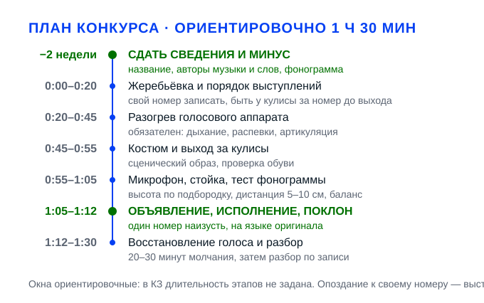
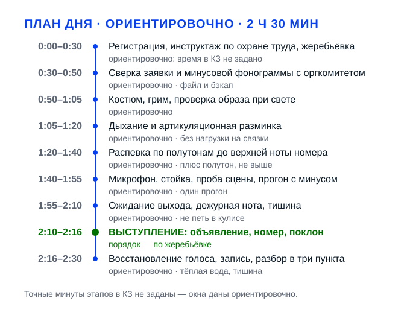
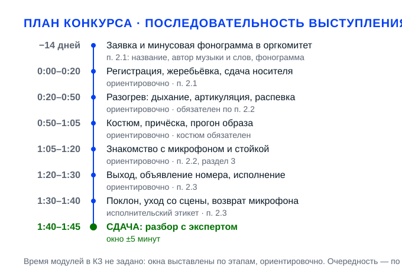

Искусство пения (ФВ)
Задания ниже — официальные файлы «Абилимпикс» (источник: abilympics-russia.ru), разложенные по категориям. Решения написаны по тексту задания, регламенту и критериям оценки; в них указано, что именно проверяет эксперт.
Школьник
14–16 лет, базовый уровень заданияВ официальном файле категории не разделены отдельными разделами — приводим задание целиком; различия по категориям смотрите в таблице модулей.
Пошаговое решение
Конкурсное задание категории «Школьники» короткое по форме: участник представляет один вокальный номер под минусовую фонограмму, поёт наизусть на языке оригинала, перед исполнением называет произведение и свои имя и фамилию, после — кланяется. Форма участия может быть любой: соло, дуэт или ансамбль. Всё, что решает исход, укладывается в три слоя: за две недели до фестиваля в оргкомитет уходят название, авторы музыки и слов и сам минус; перед выходом обязателен разогрев голосового аппарата, вокальные упражнения и знакомство с микрофоном; на сцене нужен костюм, создающий сценический образ, ровный звук и профессиональный поклон. Очерёдность выступлений определяет жеребьёвка, а каждое произведение может прозвучать только один раз, второй попытки не будет. Решение разложено по реальному порядку действий: подготовка, разогрев, настройка площадки, номер и работа после сцены.

Задача 1. Собрать номер и сдать его организаторам за две неделиПодготовительный этап · за 2 недели до конкурса
Конкурсное задание категории «Школьники» требует одного вокального номера под минусовую фонограмму, исполняемого наизусть на языке оригинала, и почти всё, что решает исход, делается до сцены. За две недели до фестиваля в организационный комитет уходят название произведения, фамилия автора музыки и автора слов, а вместе с ними — сам минус, и после этого срока любая замена идёт только по согласованию с экспертом. На этом этапе вы проверяете диапазон и тесситуру, выбираете тональность, разучиваете текст так, чтобы подсказок не требовалось, и собираете костюм, из которого складывается сценический образ. Здесь же снимаются риски: файл не читается музыкальным центром, костюм мешает дышать, верхняя нота держится только в тишине классной комнаты.
Действие 1.1. Выбрать произведение под голос, возраст и нозологию
Шаг 1.1.1
Открываем клавиатуру — настоящую или приложение с пианино — и играем мелодию от первой ноты до последней, отмечая самую высокую и самую низкую. Затем поём её целиком на слог «ля», без слов и без эмоций, и слушаем, где голос начинает зажиматься. Если верхняя нота выходит за пределы уверенной рабочей октавы хотя бы на полтона, минусовку транспонируют на один-два тона вниз, и в готовом файле это делают в любом редакторе, сохраняя новую версию отдельным файлом. Тесситура важнее эффектной высокой ноты: песня, где вы двадцать секунд висите на пределе, всегда звучит хуже спокойной середины.
В задании сказано, что произведения подбираются по возрастным и нозологическим особенностям конкурсанта, и первое, что слышит эксперт, — свободно ли звучит голос. У школьника диапазон почти взрослый, но верхние ноты нестабильны: на пределе интонация уезжает в первые же тридцать секунд, дальше весь номер слушается как борьба с материалом. Спокойная тональность даёт запас для динамики, филировки и тихой высокой ноты в конце.
Спойте песню три раза подряд: на третьем проходе верхняя нота должна браться так же легко, как на первом, а голос не садиться. Отметьте самую высокую и самую низкую ноты номера и сравните их с границами, на которых вы можете спеть целую фразу, а не отдельный звук. Если после третьего круга хочется откашляться — тональность высокая.
Берут песню «как в оригинале», потому что она нравится: на репетиции всё выходит, а на сцене от волнения диапазон сужается на тон, и верхняя фраза срывается в фальцет. Вторая ошибка — уйти слишком низко: голос теряет блеск, звучит глухо и на динамическом микрофоне проваливается под фонограмму, приходится давить, и это слышно как крик.
Эксперт слушает первый куплет и оценивает, свободно ли голос живёт в своей тесситуре. Борьба с нотой видна без микрофона: поднятые плечи, вытянутая шея, задранный подбородок и звук, который «выдавливают» из горла.
Шаг 1.1.2
Смотрим на текст песни как на сценарий: о чём она, кому поётся, что происходит в первом куплете и что меняется в последнем. Школьнику почти всегда выигрышнее песня с понятной историей — про дом, дорогу, письмо, мечту, — чем абстрактная эстрадная мелодия на чужом языке, смысл которой приходится объяснять. Если выбираете песню на языке оригинала, проверьте, что вы понимаете каждое слово, а не только общий смысл: непонимание всё равно вылезет в неверных ударениях и в несовпадении лица, с которым поёте.
Смысл — это то, из чего складывается артистизм и сценический образ, а образ упомянут в задании отдельным требованием к костюму. Номер без внутренней истории распадается на куплеты: участник стоит и поёт, эксперт отмечает ровное, но неживое исполнение. Понятная история, наоборот, сама подсказывает движение, взгляд и паузу, и тогда не приходится придумывать жесты «для галочки».
Перескажите содержание песни в трёх предложениях своими словами, не подглядывая в текст. Если получается — история ваша и её можно играть. Если сбиваетесь на «ну, там про любовь вообще», номер будет формальным, и это стоит пересмотреть до того, как вы сдадите название.
Выбирают песню только по принципу «красивая мелодия», а потом ищут, что изобразить лицом. Вторая ошибка — взять материал взрослее себя: текст про расставание в исполнении школьника читается как игра в чужую жизнь, и оценка за артистизм падает, как бы чисто ни было спето.
Эксперт смотрит, совпадает ли лицо и пластика с тем, о чём поётся. Особенно заметно, когда участник улыбается на словах о потере или стоит каменным на строчке, где история должна измениться.
Шаг 1.1.3
Если номер не подходит по голосу, состоянию или самочувствию, менять его нужно сразу, а не за день до выхода. По правилам задания музыкальное произведение может быть заменено по согласованию с экспертом, поэтому разговор начинается с наставника компетенции и заканчивается письменным согласованием с экспертом: новое название, авторы музыки и слов, новый минус. Резервный вариант лучше держать готовым заранее — та же песня в другой тональности или более спокойная по диапазону.
Две недели — это срок, после которого в оргкомитете собраны названия, авторы и фонограммы, и опоздавшая замена ставит под угрозу сам выход: файла нет в общем списке, а внести его на месте можно не всегда. Кроме того, спокойно и вовремя заданный вопрос о замене — часть оценки коммуникации: эксперт видит, что участник владеет своей программой, а не плывёт по течению.
У вас на руках подтверждение: эксперт в курсе замены, новое название внесено в список, минус сдан. Проверьте, что в заявке исправлены и музыки автор, и автор слов — ошибки в этих строках потом объявляют со сцены, и звучит это неловко.
Тянуть до последнего дня, а потом просить заменить номер «потому что не получается»: в замене могут отказать, и участник выходит с тем, что не выучено. Обратная ошибка — молчать и петь неудобную программу из страха показаться неготовым.
Эксперт фиксирует заявленный номер и следит, чтобы прозвучало именно он. Незаявленная замена без согласования — нарушение регламента, а не «мелкая неформальность».
Действие 1.2. Сдать сведения и минусовую фонограмму
Шаг 1.2.1
Заполняем заявку ровно так, как будет объявлено со сцены: название произведения без сокращений, фамилия и имя автора музыки, фамилия и имя автора слов, форма участия — соло, дуэт или ансамбль. Если поёте не один, в заявке пишется название коллектива, и перед выходом объявляется именно оно, а не перечисление фамилий. Отдельной строкой — фамилия и имя участника так, как в документе, и класс или школа, если оргкомитет просит.
Требование сдать сведения за две недели в задании прописано отдельным абзацем, и это не бюрократия: из этих строк складывается порядок выступлений и текст ведущего. Ошибка в фамилии автора музыки, которую объявляют перед номером, слышна всему залу, а исправить её на месте уже нельзя. Кроме того, по этим данным эксперты заранее готовят листы оценки.
Прочитайте заявку вслух, как объявление: «Песня такая-то, музыка такого-то, слова такого-то, исполняет такой-то». Если спотыкаетесь или сомневаетесь, как произнести фамилию, — уточняйте сейчас, а не на сцене. Сверьте написание с титульным листом сборника или с данными в интернете.
Пишут «слова народные» или «музыка неизвестного автора», чтобы не искать: ведущий объявляет неточность, и первое впечатление от номера складывается из ошибки. Вторая ошибка — указать одно название, а петь другое, пусть и близкое: расхождение фиксируется в протоколе.
Эксперт сверяет объявленный номер с заявкой. Расхождение он отмечает сразу и отдельно смотрит, не заменён ли номер без согласования. Такое расхождение он относит к регламенту, а не к вокалу, но впечатление от номера уже испорчено.
Шаг 1.2.2
Готовим именно минус, а не «минус с бэками» и не концертную запись: в фонограмме не должно быть посторонних голосов, аплодисментов, щелчков и обрывов на начале и конце. Обрезаем тишину так, чтобы до первого аккорда оставалось примерно две секунды, а после последнего — не меньше трёх: этот запас нужен вам, чтобы встать в позицию и уйти в поклон, не глядя на таймер. Файл сохраняем в двух форматах, MP3 с высоким битрейтом и WAV, и называем латиницей, без пробелов: фамилия, название, тональность.
Минусовая фонограмма — единственный аккомпанемент, который у вас будет, и по заданию участники поют именно под неё. Обрезанное начало не даёт взять дыхание, а короткий хвост обрывает последнюю ноту на середине, и номер заканчивается не поклоном, а суетой. Два формата нужны потому, что музыкальный центр на площадке один на десять участников и его всеядность не гарантирована.
Прослушайте файл целиком в наушниках и на колонке, отдельно проверьте первые десять секунд и последние десять. Ни одного щелчка, ни одного чужого голоса, ни одного провала громкости. Длительность запишите на бумаге: она пригодится, когда ведущий будет планировать порядок.
Оставляют фонограмму, скачанную из видеохостинга вместе с вокалом: собственный голос из колонки сбивает интонацию, и участник начинает подстраиваться под чужую запись. Вторая ошибка — имя файла вида «новая песня 2 финал.mp3»: на площадке такой файл ищут минуту, а минута перед выходом дороже всего.
Эксперт и звукооператор проверяют фонограмму до выхода. Минус с бэками или с посторонними звуками считается нарушением, а слишком громкая запись вынуждает петь форсированно, и это слышно.
Шаг 1.2.3
Проверяем файл на чужой технике: записываем на флешку, вставляем в обычный музыкальный центр или магнитолу и слушаем с той громкостью, с какой будете петь. Флешка форматируется в FAT32, папок и лишних файлов на ней не остаётся — только ваш минус и, на всякий случай, его копия в другом формате. Заодно проверяем, как звучит запись на небольшой громкости: именно так её услышат первые ряды, если зал небольшой.
Музыкальный центр в оснащении площадки идёт один на десять участников, то есть техника незнакомая и чужая, а настройки у неё могут быть любые. Проверка на бытовом устройстве заранее снимает самый обидный риск: номер готов, голос звучит, а файл не читается. Это тот случай, когда пять минут дома экономят выступление целиком.
Файл открывается и играет на двух разных устройствах, порядок треков понятен, лишних файлов нет. Отдельно проверьте, что громкость на самом устройстве не выкручена в максимум — искажение начинается именно там.
Приносить музыку на телефоне, рассчитывая, что «подключат по блютусу»: на площадке это делают, но не всегда и не сразу, а время выхода уже объявлено. Вторая ошибка — единственный экземпляр файла: флешка теряется, и запасная копия оказывается единственным спасением.
Эксперт отмечает, готова ли фонограмма к воспроизведению без переговоров. Возня с техникой перед номером сдвигает порядок и почти всегда стоит участнику первых секунд номера.
Действие 1.3. Разучить текст наизусть на языке оригинала
Шаг 1.3.1
Работаем с текстом отдельно от мелодии: переписываем его от руки, расставляем ударения и отмечаем места, где слово произносится не так, как пишется. Если песня на иностранном языке, делаем построчную транскрипцию русскими буквами и один раз прочитываем текст вслух целиком, медленно, без музыки. Только после этого соединяем с мелодией, иначе артикуляция навсегда останется «примерной», а вместе с ней и смысл.
Задание требует исполнения наизусть на языке оригинала, и это самая частая точка потери: участник знает мелодию, а на второй строке второго куплета останавливается и смотрит в зал. Знание текста — не формальность, а условие допуска к исполнению: без него нельзя ни играть смысл, ни держать контакт с залом, потому что взгляд всё время уходит вниз.
Проверьте себя так: читаете текст вслух с листа — без запинок; затем рассказываете его как стихотворение, глядя в стену. Если получается и то и другое, текст ваш. Отдельно проговорите слова, которые стоят в самых высоких фразах: именно там они чаще всего «съедаются».
Учат текст вместе с мелодией, напевая вполголоса: так запоминается звучание, а не смысл, и при волнении первым уходит именно смысл. Вторая ошибка — оставить один трудный куплет «на потом»: он и оказывается тем местом, где всё рвётся.
Эксперт слушает, совпадает ли произносимое с текстом и не появляется ли во взгляде поиск подсказки. Уход глаз в сторону шпаргалки виден сразу, даже если участник не произнёс ни одного неверного слова.
Шаг 1.3.2
Разбираем песню по фразам и над каждой ставим, где берётся дыхание: обычно это конец синтаксической фразы, а не конец строки. Помечаем в тексте одной чертой вдох, двумя — длинную цезуру, и отдельно отмечаем ферматы. Учим так: фраза целиком на одном дыхании, пауза, следующая фраза. Пение фрагментами по два такта с обязательной остановкой даёт больше, чем десять прогонов подряд от начала до конца.
Дыхание по фразам — это то, из чего складывается фразировка, а фразировка и есть музыкальность в чистом виде: одинаковые ноты, спетые с разной длиной фраз, воспринимаются как разная музыка. Кроме того, заранее размеченное дыхание спасает от главной сценической беды — добора воздуха посреди слова, который слышен как всхлип и сбивает смысл.
Пройдите песню и отметьте все места, где вы добираете воздух не по разметке. Их не должно остаться: если фраза не встаёт на одно дыхание, значит, вы поёте её громче, чем нужно, — уберите динамику на четверть, и дыхания хватит.
Петь длинные фразы «как получится» и добирать воздух где придётся: к концу номера дыхание сбито, плечи подняты, интонация ползёт вниз. Вторая ошибка — дышать только грудью: воздуха хватает на два такта, и участник начинает спешить, чтобы успеть допеть.
Эксперт слушает, где участник берёт дыхание, и отмечает, совпадает ли это с музыкальной фразой. Судорожный вдох на слове и «рваная» фразировка сразу снижают оценку за музыкальность.
Шаг 1.3.3
Прогоняем номер целиком три раза в разных условиях: стоя в полный голос, сидя, и с включённым на средней громкости минусом, чтобы привыкнуть слышать себя сквозь аккомпанемент. Отмечаем карандашом в тексте два-три «слепых» места — там, где вы спешите, смазываете окончание или начинаете фразу раньше музыки, — и прорабатываем именно их отдельно, а не весь номер снова. Последний прогон делаем на свежую голову, не больше двух раз подряд.
Наизусть — требование задания, а «слепые» места — то, что на сцене вылезает первым: волнение бьёт по автоматизмам, и самый слабый участок рвётся. Прогон под минус отдельно нужен потому, что петь в тишине и петь под фонограмму — разные навыки: во втором случае приходится держать темп и высоту по чужой записи, а не по своему удобству.
Поставьте запись на телефон и послушайте себя со стороны, не подпевая. Слышно три вещи: совпадаете ли вы с минусом по темпу, не «уезжаете» ли в конце фраз, и разборчивы ли слова. Если приходится вслушиваться, чтобы понять текст, — работайте над дикцией, а не над силой голоса.
Репетировать только в полный голос и только целиком: к третьему прогону голос садится, и участник делает вывод «не мой диапазон», хотя проблема в количестве, а не в нотах. Вторая ошибка — учить без минуса: на сцене непривычный аккомпанемент сбивает вступление.
Эксперт не слышит репетиций, но слышит их последствия: уверенное вступление, точные окончания фраз и ровный темп — признаки выученного номера, а не сымпровизированного.
Действие 1.4. Собрать костюм и сценический образ
Шаг 1.4.1
Костюм выбираем от песни, а не от гардероба: если история про дорогу и детство — спокойные цвета и простой силуэт, если про праздник — можно акцент и яркость. Главное правило — ничего, что мешает дышать: тесный ворот, узкая пройма и жёсткий пояс сдавливают диафрагму, и верхняя фраза просто не берётся. Обувь устойчивая, на невысоком каблуке или без него, разношенная заранее: на сцене в новой обуви школьник стоит иначе, чем репетировал.
Задание отдельно оговаривает наличие костюма для создания определённого сценического образа, и эксперт смотрит, работает ли костюм на номер. При этом дыхание важнее красоты: любая вещь, стягивающая грудную клетку, отнимает опору, а вместе с ней и половину доступной динамики. Разношенная обувь — вопрос не удобства, а устойчивости: на скользкой сцене в неразношенной обуви шаг превращается в балансирование.
Наденьте костюм и спойте самый высокий фрагмент номера, а затем сделайте пять глубоких вдохов с поднятыми руками. Если ворот тянет, пояс давит или рукав не даёт поднять руку — переодевайтесь. Отдельно пройдитесь по комнате: подошва не скользит, каблук не подворачивается.
Берут «красивое платье» с жёстким корсетом или узким воротом: голос становится тише и глуше, участник вынужден давить, и звук теряет полётность. Вторая ошибка — новая обувь на выступление: мозоли и неуверенный шаг видны и стоят баллов за сценическую культуру.
Эксперт оценивает костюм в момент выхода, до первого звука, и отмечает, соответствует ли он характеру номера и опрятен ли. Отдельно смотрит, не мешает ли одежда двигаться.
Шаг 1.4.2
Прогоняем номер в костюме целиком, с выходом и поклоном, и проверяем три вещи: не сползает ли одежда при поднятии рук, не блестит ли ткань при сценическом свете, не гремит ли что-то при шаге. Украшения снимаем или оставляем одно небольшое: длинные серьги и браслеты отвлекают и цепляются за стойку микрофона. Причёску фиксируем так, чтобы она не требовала поправки руками посреди номера.
Костюм и образ проверяются в движении, а не в зеркале: именно на выходе выясняется, что рукав тянет, а брошь цепляется за стойку. Кроме того, в задании упомянуто, что конкурсант может выступать с личным сопровождающим, и сопровождающему нужно заранее показать, где помочь — поправить одежду, подать руку на ступеньках, забрать верхнюю вещь.
После полного прогона в костюме проверьте: ничего не съехало, руки поднимаются свободно, при шаге ничего не звенит. Попросите кого-то посмотреть со спины и с расстояния трёх метров — так видит зал. Так видно то, что не заметно вблизи.
Впервые надевать костюм на выступление: пуговица расходится, молния заедает, и всё это выясняется за кулисами. Вторая ошибка — оставить украшения «для красоты»: они стучат о стойку и отвлекают от собственного пения.
Эксперт видит, свободно ли участник двигается в костюме. Скованность он читает как неготовность образа, даже если голос звучит хорошо. Скованность образа он отмечает в строке о костюме и сценической культуре.
Задача 2. Разогреть голосовой аппарат и настроить инструментПеред выходом · обязательный разогрев
В задании сказано прямо: до начала исполнения участник должен подготовиться к выступлению, и разогрев голосового аппарата с выполнением определённых вокальных упражнений обязателен. Это не ритуал, а физиология: невозбуждённые голосовые складки не смыкаются плотно, дыхание держится поверхностно, и первая же высокая фраза звучит сипло или срывается. На разогрев уходит от пятнадцати до двадцати пяти минут, и они идут в строгом порядке: сначала режим и гигиена, потом дыхание и опора, потом резонаторы и распевки, потом артикуляция. Отдельная часть задачи — привести себя в рабочее состояние перед выходом: убрать волнение из дыхания, согреть тело и не растерять разогретое в суете за кулисами.
Действие 2.1. Соблюсти голосовой режим до конкурса
Шаг 2.1.1
Последний приём пищи — за полтора-два часа до выхода, и это должна быть еда, которая не требует долгого переваривания: каша, творог, немного мяса, чай комнатной температуры. Молочные коктейли, шоколад, орехи и газировка перед пением дают вязкую слизь в горле, и участник начинает постоянно откашливаться. Воду берём без газа и пьём маленькими глотками, а не залпом: стакан, выпитый сразу, давит на диафрагму именно тогда, когда нужна опора.
Задание требует анатомически правильного положения тела и уверенной, но плавной работы, а полный желудок делает и то и другое невозможным: дыхание укорачивается, опора уходит, голос теряет устойчивость. Вода комнатной температуры увлажняет складки, а холодная их сужает — после неё верхний регистр звучит тускло и требует больше усилия, чем есть у школьника.
Проверьте себя за час до выхода: петь удобно, откашливаться не хочется, живота не давит. Если хочется постоянно сглатывать или першит — выпейте несколько глотков тёплой воды и на десять минут замолчите, а не распевайтесь громче в надежде «разогреть».
Плотно поесть «чтобы были силы» за двадцать минут до выхода: на сцене не хватает дыхания, участник поёт короткими фразами, и фразировка разваливается. Вторая ошибка — холодная вода из кулера перед самым номером: связки сужаются, и первая верхняя нота звучит с хрипотцой.
Эксперт не проверяет, что участник ел, но слышит последствия: частые доборы воздуха, покашливание между фразами и глухой верхний регистр. Это считывается как неготовность голоса, а не как дефект слуха.
Шаг 2.1.2
Сутки до выступления голос живёт в щадящем режиме: не кричим на переменах, не поём в полный голос в коридоре «чтобы привыкнуть», не разговариваем на улице в холод. Отдельно про шёпот — он вредит сильнее крика, потому что складки при нём напрягаются сильнее, а опоры нет. В день конкурса общий объём речи сокращаем вдвое и стараемся не переговариваться через шумный коридор.
Голосовой аппарат — мышца, и ей нужен запас, а не нагрузка: двадцать минут крика на перемене отнимают ровно то, что потом понадобится на верхней ноте. Требование обязательного разогрева в задании предполагает, что аппарат к этому моменту не изношен. Практика простая: чем тише день до конкурса, тем свободнее звучит голос на сцене.
К вечеру перед конкурсом голос не должен быть уставшим: проверьте на короткой распевке — если после пяти минут пения хочется откашляться или голос садится, значит, предыдущие дни были слишком громкими. В день выступления такую проверку делайте не раньше чем за час до выхода.
Распеваться «на всякий случай» каждый час: к номеру голос уже устал, и верхние ноты уходят. Вторая ошибка — шёпотом обсуждать волнение за кулисами: шёпот сушит складки и снимает настройку, которую вы только что сделали.
Эксперт замечает голосовую усталость по ровности звука: уставший голос «качается» по высоте и теряет тембр во второй половине номера, даже если начало было хорошим.
Шаг 2.1.3
Если появились боль в горле, температура, сильный насморк или головокружение, об этом говорим наставнику и эксперту до выступления, а не после. В разделе охраны труда сказано однозначно: при недомогании или внезапном ухудшении состояния работу прекращают и обращаются к врачу, и на площадке дежурит медицинский работник. Здесь же уточняем аллергии на материалы и косметику, если они есть, потому что сценический грим и лак для волос — обычная причина отёка и потери голоса.
Это вопрос не баллов, а безопасности: петь на воспалённых складках — прямой путь к кровоизлиянию и потере голоса на месяцы, а не на один конкурс. Кроме того, задание допускает замену произведения по согласованию с экспертом, и в плохом самочувствии разумнее спеть более спокойную вещь, чем сниматься с конкурса. Эксперт оценивает не героизм, а адекватность.
После разговора у вас есть понятный план: петь как есть, заменить номер на более спокойный или обратиться к медику. Убедитесь, что решение зафиксировано и наставник в курсе — тогда на выходе не возникнет спора о том, кто что разрешил.
Скрывать плохое самочувствие до последнего: на сцене темнеет в глазах, номер обрывается, и дальше разбираются уже не баллы, а здоровье. Обратная ошибка — паниковать из-за лёгкого першения и сниматься с конкурса, когда достаточно спокойного режима.
Эксперт и наставник наблюдают за состоянием участника перед выходом. Бледность, осиплость и жалобы фиксируются, и решение о выходе принимается до номера, а не в его середине.
Действие 2.2. Поставить дыхание и опору
Шаг 2.2.1
Начинаем с дыхания без звука. Ставим руки на нижние рёбра, большие пальцы направлены назад, и дышим так, чтобы расширялись именно рёбра и живот, а плечи оставались на месте. Считаем: вдох на четыре счёта, короткая задержка, выдох на шесть-восемь, и так восемь-десять раз. Второе упражнение то же самое, но лёжа на спине на кушетке или на полу: там диафрагма работает сама, и тело запоминает правильное ощущение.
Опора — фундамент всего номера, а в задании прямо сказано, что для комфортной работы нужно обеспечить анатомически правильное положение тела. Грудное дыхание даёт воздуха на две-три секунды, и на длинной фразе его не хватает: участник либо рвёт фразу, либо добирает воздух посреди слова. Диафрагмальное дыхание даёт запас и, главное, устойчивое давление под связками — это и есть та самая опора, на которой держится ровный звук.
После восьми циклов плечи не поднимаются, при вдохе двигаются рёбра и живот, выдох длиннее вдоха примерно в полтора раза. Положите на живот книгу: она должна подниматься на вдохе и опускаться на выдохе. Если книга стоит — дышите грудью.
Дышать «глубоко» с поднятием плеч: воздуха набирается много, но он не держится, и звук получается сдавленным. Вторая ошибка — втягивать живот на вдохе: это ровно противоположное движение диафрагме, и опоры не будет вовсе.
Эксперт видит дыхание по плечам и по шее. Поднятые при вдохе плечи и вытянутая шея — первый признак, что опоры нет, и дальше он слушает номер уже с этой поправкой.
Шаг 2.2.2
Тренируем длину выдоха на согласных: берём вдох и тянем «с» ровной струёй, пока хватает воздуха, потом то же на «ш» и на «ф». Второй круг — с усилением и ослаблением звука: начинаем тихо, уходим в среднюю громкость, возвращаемся в тишину, но струя не прерывается. Первый результат, к которому идём, — двадцать-тридцать секунд ровного «с» без толчков и без провала в конце.
Ровная струя выдоха — это то, что позволяет держать длинную ноту и делать филировку. Толчок диафрагмы в конце фразы слышен как «подброс» последнего слога, а провал — как уход ноты вниз. Двадцать секунд ровного выдоха примерно соответствуют одной спокойной вокальной фразе, поэтому это упражнение прямо переводится в качество исполнения.
Засеките время на телефоне. Ровно — значит стрелка или струя звучит одинаково от начала до конца, без дрожания. Если к концу струя становится толчками, вы добираете воздух животом — это как раз то, чего делать нельзя.
Тянуть «с» до последнего и заканчивать судорожным вдохом: закрепляется привычка допевать «на остатках», и в номере последний слог фразы всегда будет пропадать. Вторая ошибка — делать упражнение один раз и считать, что дыхание поставлено.
Эксперт слышит ровность выдоха по длинным нотам. Если нота в конце фразы «садится» или уходит вниз, опора не держится, и это заметно даже на коротком номере.
Шаг 2.2.3
Учимся начинать звук без придыхания. Кладём руку на грудь и произносим коротко «ай» с активной атакой — так, чтобы звук начинался сразу, а не с шумного «ха». Затем то же на «ма», «мо», «му» с мягкой, но точной атакой. Следим, чтобы горло оставалось свободным: если после десяти повторов хочется откашляться, значит, звук идёт с зажимом, и надо уменьшить громкость вдвое.
Придыхательная атака съедает первую ноту: вместо интонации слышен шум, и вход в номер получается неуверенным. Твёрдая атака, наоборот, даёт точную высоту с первой секунды. При этом зажим опаснее ошибки: сдавленная гортань лишает голос тембра, а на второй половине номера приводит к сиплости, которую уже не спрятать.
Спойте три ноты подряд на «ма» и послушайте начало каждой: они должны совпадать по высоте и по характеру. Первая нота номера должна попадать в точку сразу — проверьте её отдельно десять раз подряд. Слушайте не силу, а точность попадания.
Начинать каждую фразу с шумного вдоха прямо в микрофон: динамический микрофон этот шум передаёт отлично, и зал слышит только «ха» вместо мелодии. Вторая ошибка — бить звук слишком твёрдо, с нажимом: связки быстро устают, и верхний регистр закрывается.
Эксперт слушает самое начало номера. Точное вступление без придыхания и без зажима он отмечает как владение атакой звука — это одна из первых вещей, по которым видно школу.
Шаг 2.2.4
Соединяем опору с положением гортани: делаем спокойный «зевок» с закрытым ртом, чувствуем, как поднимается мягкое нёбо, и в этом положении поём короткую фразу на «нг» или «м». Ощущение должно остаться во рту, как будто там держат маленький горячий шарик, но горло при этом не напрягается и не тянется вверх. Упражнение повторяем пять-шесть раз, каждый раз проверяя, что челюсть не зажата и язык лежит свободно.
Высокая позиция и свободная гортань дают тот самый полётный звук, который слышно в зале без форсажа. Без неё школьник компенсирует громкостью: кричит, чтобы его услышали, и к концу номера голос садится. Положение мягкого нёба — единственное, что нужно запомнить, потому что оно одинаково работает и на низких нотах, и на высоких.
Спойте фразу обычным голосом, а потом в позиции «зевка». Второй вариант должен быть ровнее по тембру и легче по ощущению, при этом не глуше. Если стало темнее и тяжелее — вы перебрали с округлением. Тембр при этом должен остаться светлым.
Тянуть гортань вверх на высоких нотах: звук становится плоским и «белым», интонация ползёт вверх. Вторая ошибка — наоборот, давить гортанью вниз и петь «в затылок»: получается глухо, и слова перестают быть разборчивыми.
Эксперт слушает тембр на средней части диапазона: именно там слышно, свободна ли гортань. Плоский или глухой тембр отмечается как техническая проблема, даже если интонация чистая.
Действие 2.3. Распеться на резонаторах и артикуляции
Шаг 2.3.1
Распевку начинаем с мычания на удобной середине: губы сомкнуты, зубы разомкнуты, звук идёт в маску — туда, где при пении возникает лёгкое щекотание над верхними зубами. Дальше поём «нг» по трезвучиям вверх и вниз в пределах квинты, каждый раз прибавляя полтона: примерно от «до» первой октавы до «фа» и обратно. Всё это тихо, на небольшой громкости, потому что распевка нужна для настройки, а не для демонстрации силы.
Мычание и «нг» включают головной резонатор мягко, без нагрузки на связки, и именно поэтому с них начинают любое распевание. У школьника, который сразу начинает с громких гласных, верхний регистр «зажимается» и потом весь номер звучит натужно. Кроме того, с закрытым ртом слышна интонация: если вы фальшивите на «нг», вы фальшивите и в песне.
Звук должен вибрировать в области носа и верхней губы, а не в горле. Проверьте рукой: приложите пальцы к переносице — вибрация чувствуется. Если её нет, а горло устало, вы поёте горлом, и распевку надо начать заново, тише.
Распеваться громко с самого начала: связки не разогреты, и первый же скачок вверх даёт сип. Вторая ошибка — петь закрытым ртом «в нос» с зажатыми челюстями: звук уходит в гнусавость, и потом её приходится выправлять на гласных.
Эксперт не слышит распевку целиком, но слышит, насколько ровно звучат верхние ноты в номере. Плотный, «звенящий» верхний регистр — прямое следствие правильно проведённой распевки.
Шаг 2.3.2
Переходим к гласным: поём на «ми-мэ-ма-мо-му» по полутонам вверх, потом то же на «и-э-а-о-у» с округлением. Отдельно работаем переход: подходим к ноте, где голос обычно ломается, и поём её тихо, с примесью головного звучания, не пытаясь взять «в полную силу». Задача — сгладить стык регистров, чтобы на границе не было слышно переключения, и запомнить ощущение, с которым эта нота берётся.
Сглаженный переход между регистрами — это то, что позволяет петь песню ровно по тембру. Школьники часто «ломаются» на одной-двух нотах, и в номере это выглядит как провал посреди фразы. Если переход сглажен, верхняя часть диапазона становится доступной без крика, и появляется возможность сделать тихую высокую ноту — самый выигрышный приём в конкурсном номере.
Найдите свою границу: пойте гамму вверх и отметьте ноту, где тембр меняется. Затем пойте её отдельно двадцать раз подряд тихо — и слушайте, уходит ли «шов». Если после двадцати раз горло устало, вы всё ещё берёте её силой.
Тянуть вверх на полной громкости, пока не получится: так закрепляется крик вместо микста, и верхняя нота в номере обязательно сорвётся от волнения. Вторая ошибка — петь переход только на «и»: на других гласных он снова разваливается.
Эксперт слушает, ровно ли звучит диапазон в пределах номера. Заметный «шов» на одной ноте он воспринимает как недоработку техники, особенно если эта нота стоит в кульминации.
Шаг 2.3.3
Последний блок разогрева — артикуляция. Делаем простую гимнастику: покусываем кончик языка, «чистим» зубы языком изнутри, тянем губы в трубочку и в улыбку по десять раз. Затем скороговорки: «на дворе трава», «шли сорок сорок», каждую три раза медленно и два раза быстро, с подчёркнутыми согласными. Заканчиваем проговариванием текста своей песни в темпе в два раза медленнее оригинала, с утрированными окончаниями.
Дикция в вокальном номере — это разборчивость текста, а текст на конкурсе оценивают отдельно, потому что песня на языке оригинала без разборчивых слов превращается в вокализ. Микрофон усиливает всё, но согласные он же и «съедает»: без активной артикуляции в зале слышны только гласные. Утрированная работа над окончаниями перед выходом даёт ровно тот запас, который потом тратится на волнение.
Проверьте на слух: попросите человека в трёх метрах отвернуться и записать, что он разобрал. Нужно не меньше восьмидесяти процентов слов. Отдельно проверьте окончания: они должны звучать, а не проглатываться.
Проговаривать скороговорки шёпотом: артикуляция не включается, а горло сохнет. Вторая ошибка — работать над дикцией на большой громкости: вместо чёткости получается крик, и к номеру язык уже устал. Тогда текст теряет смысл, а голос — управляемость.
Эксперт оценивает разборчивость текста в первом же куплете. Если слов не понять, он перестаёт следить за смыслом и оценивает номер только по звуку — а это сразу минус за артистизм.
Задача 3. Подготовить сцену, микрофон и фонограммуПлощадка · до выхода на сцену
Пока участник ждёт своей очереди, площадка должна быть готова принять номер: микрофон на стойке стоит на нужной высоте, фонограмма читается с первой секунды, проход к микрофону свободен, а рабочая зона не меньше трёх квадратных метров с проходом от полутора метров — для участника с нарушением опорно-двигательного аппарата четыре квадратных метра и два метра прохода. В задании отдельно сказано, что знакомство с микрофоном входит в подготовку к выступлению, и что после установки рабочее место передвигать нельзя. Это значит, что все настройки делаются заранее и осознанно: высота стойки под рост, положение микрофона относительно рта, проверка уровня и короткий тест голосом. Здесь же уточняется порядок выступления по жеребьёвке и то, как будет объявлен номер.
Действие 3.1. Осмотреть площадку и организовать рабочее место
Шаг 3.1.1
Выходим на площадку до начала выступлений и обходим её спокойным шагом: смотрим, где стоит стойка, куда идёт кабель, где ступеньки и кулисы. Отмечаем границы своей рабочей зоны — три квадратных метра, то есть примерно полтора на два шага вокруг микрофона, — и проверяем, что проход к ней не уже полутора метров. Если у вас нарушение опорно-двигательного аппарата, зона шире: четыре квадратных метра и проход два метра, и об этом стоит сказать организаторам заранее, а не искать место с костылями в руках.
Требования к площади и проходу прописаны в задании отдельной таблицей, и они нужны не для отчётности: узкий проход превращает выход в препятствие, а тесная зона не даёт свободно развернуться, когда нужно повернуться к залу или сделать шаг от стойки. Кроме того, задание требует, чтобы после установки рабочее место не передвигали: значит, всё, что вы хотите поправить, поправляется сейчас.
Пройдите маршрут от кулисы до микрофона и обратно. Ничего не задеваете, не переступаете через кабель, не огибаете монитор. Стойка стоит там, где вам удобно начинать движение, а не там, где её поставили по умолчанию.
Оставляют всё как есть, а на выходе выясняется, что между кулисой и микрофоном стоит колонка, и участник выходит боком. Вторая ошибка — двигать стойку и мониторы перед номером: по правилам рабочее место после установки не передвигают, а самовольная перестановка сбивает звук и порядок.
Эксперт следит за выходом с первой секунды: свободно ли участник дошёл до микрофона, не спотыкается ли, не ищет ли место. Суета на входе портит первое впечатление от номера.
Шаг 3.1.2
Разбираемся с выходом и уходом. Выход — из-за кулисы, шагом, а не бегом, лицом в зал уже с третьего шага. Если есть ступеньки, проверяем, не скользят ли они и есть ли перила: при необходимости просим дежурного сопровождающего или добровольца помочь именно на ступеньках, а не вести под руку всю дорогу. Уход после поклона планируем заранее: куда вы уходите, где оставили верхнюю одежду и воду, кому отдаёте реквизит, если он есть.
В задании сказано, что участник может выступать с личным сопровождающим, а при необходимости организационный комитет предоставляет дежурного сопровождающего или добровольца для выхода и ухода со сцены. Это не формальность: заранее распределённая помощь освобождает внимание для номера. Требование плавных и уверенных движений из раздела охраны труда относится ровно к этим переходам, а не к пению.
Вы прошли маршрут в обе стороны и знаете, кто и где вам помогает. Проверьте время: дорога от кулисы до микрофона не должна занимать больше десяти-пятнадцати секунд, иначе выход затягивается и зал начинает шуметь.
Планировать уход «по ситуации»: после поклона участник мечется по сцене в поисках куртки, и номер заканчивается суетой. Вторая ошибка — отказываться от помощи из гордости и преодолевать ступеньки на пределе: риск падения на сцене выше любых соображений самостоятельности.
Эксперт отмечает, как участник держится на выходе и после поклона. Спокойный, уверенный уход читается как сценическая культура, а суета — как неготовность.
Шаг 3.1.3
Проверяем безопасность на своей зоне: кабель от микрофона не лежит поперёк прохода, пол не мокрый, свет не бьёт в глаза так, что не видно зала, на полу нет ничего, о что можно споткнуться. Бутылку с водой держим не на сцене, а за кулисой, и пьём только из своей, а не из общей. Если что-то неисправно — стойка шатается, микрофон шипит, ступенька прогибается, — говорим наставнику или эксперту сразу, до выхода.
Раздел охраны труда требует немедленно сообщать о неисправностях оборудования и приступать к работе только после их устранения. На практике это те самые минуты, когда неисправность ещё можно исправить: шатающаяся стойка чинится подтяжкой винта за десять секунд, а на сцене она уронит микрофон в самый неудачный момент. Вода из общей бутылки — ещё и гигиенический риск, особенно в сезон простуд.
Зона осмотрена по трём пунктам: пол сухой и пустой, кабель убран в сторону, стойка не качается при нажатии рукой. Вода у вас своя и стоит за кулисой. Всё, что вызывает сомнение, названо вслух наставнику.
Молчать о шатающейся стойке и надеяться, что обойдётся: на сильной ноте участник опирается на неё, и стойка уезжает вместе с микрофоном. Вторая ошибка — ставить воду на пол у стойки: её легко опрокинуть, и пол становится скользким ровно там, где вы двигаетесь.
Эксперт по охране труда или главный эксперт могут пройти по площадке до начала. Неисправность, о которой участник не сообщил и с которой начал работу, фиксируется как нарушение.
Действие 3.2. Настроить микрофон и стойку под себя
Шаг 3.2.1
Ставим стойку так, чтобы микрофон оказался на уровне подбородка, чуть ниже рта: тогда голову не приходится тянуть вверх и шея остаётся свободной. Стойка усиленная, с металлическими узлами, поэтому затягиваем оба зажима — и по высоте, и по наклону — до упора, рукой, а не «на глаз»: недотянутый зажим даёт просадку именно в момент, когда вы подаётесь вперёд на кульминации. Наклон задаём небольшой, чтобы капсюль смотрел в рот, а не в потолок.
Высота стойки определяет положение гортани, а значит, и звук: низкий микрофон заставляет наклоняться и сжимать шею, высокий — задирать подбородок, и в обоих случаях опора уходит. Задание требует анатомически правильного положения тела, и стойка — первое, что на это положение влияет. Металлические узлы усиленной стойки держат вес микрофона без сползания, но только если затянуты.
Отпустите стойку и посмотрите, не поплыла ли высота. Возьмитесь за стойку и слегка нажмите вниз: она не должна проседать. Проверьте наклон: капсюль смотрит вам в рот, когда вы стоите прямо, не наклоняясь.
Ставят микрофон на уровне глаз «чтобы было видно лицо»: приходится тянуться вверх, шея вытягивается, и верхние ноты звучат сдавленно. Вторая ошибка — зажать стойку не до конца: микрофон медленно опускается во время номера, и громкость плывёт.
Эксперт смотрит посадку головы и шеи с момента выхода. Задранный подбородок и вытянутая шея читаются как неумение работать с микрофоном, даже если звук получается приемлемым.
Шаг 3.2.2
Берём микрофон в руку и держим так, как будете держать в номере: корпус в ладони, капсюль свободен, пальцы не накрывают решётку сверху и не смыкаются перед ней. Расстояние до рта — примерно пять-десять сантиметров, то есть ширина ладони; на громких фразах можно отвести чуть дальше, на тихих — поднести ближе. Микрофон вокальный динамический, он не боится близкого расстояния, но взрывы согласных «п» и «б» при прямой подаче в упор он передаёт громко.
Дистанция до микрофона — это ваш регулятор громкости, и работать им нужно осознанно: в номере почти всегда есть тихая часть и кульминация, и разница в пять сантиметров слышна сильнее, чем разница в усилии. Если закрыть капсюль ладонью, меняется характеристика направленности: звук становится бубнящим, появляется свист, и вернуть нормальный тембр уже нельзя.
Спойте фразу на расстоянии ладони, затем вплотную. Первый вариант должен звучать естественно и без свиста, второй — громче и глуше. Рабочее положение — то, где слышно текст и нет «бубна». Проверьте, что палец не касается решётки.
Держать микрофон вплотную к губам и кричать в него: зал слышит искажение, а эксперт — форсированный звук. Вторая ошибка — закрывать решётку ладонью «чтобы не дуло»: это самая частая причина свиста и глухого тембра на школьных конкурсах.
Эксперт слушает первые фразы и оценивает, работает ли участник с микрофоном. Свист, провалы громкости и «бубнёж» он относит к технике работы с оборудованием, а не к голосу.
Шаг 3.2.3
Делаем короткий тест: говорим в микрофон «раз, два, три», затем поём одну фразу из середины песни — самую высокую и самую тихую. Слушаем, слышно ли себя в зале через мониторы, не возникает ли свист, не уходит ли звук в сторону. Если свистит, отходим от колонок и не направляем микрофон в монитор. Уровень громкости фонограммы и голоса согласуем со звукооператором сразу: потом, в очереди, этого сделать не дадут.
Знакомство с микрофоном прямо названо в задании частью подготовки к выступлению. Тест нужен ещё и потому, что баланс «голос — минус» на площадке выставляют на один номер, а не на всех, и если фонограмма окажется громче голоса, участник начнёт перекрикивать аккомпанемент. Это слышно как крик и стоит оценки за вокал, хотя причина — настройка.
Вы слышите себя в зале, слова разборчивы, свиста нет, фонограмма не перекрывает голос. Отдельно проверьте тихую фразу: если её не слышно, попросите добавить голос, а не пойте громче. После теста ещё раз проверьте, не сбилась ли высота стойки.
Пропустить тест и «разобраться на месте»: в номере выясняется, что мониторы молчат, и участник слышит только зал, теряя интонацию. Вторая ошибка — крутить ручки на пульте самому: настройка сбивается, и звукооператор восстанавливает её уже во время номера.
Звукооператор и эксперт слушают тест. Участник, который заранее проверил баланс и расстояние, в номере звучит ровно, и это отмечают как владение оборудованием.
Действие 3.3. Быть готовым к выходу по жеребьёвке
Шаг 3.3.1
Уточняем свой номер в порядке выступлений: очерёдность определяется жеребьёвкой, и её результат объявляют до начала. Записываем на бумаге или в заметке телефона: свой порядковый номер, кто выступает до вас и после, сколько примерно длится один номер. За два номера до своего выхода идём за кулисы, за один — стоим у входа, а не ищем наставника по всему зданию.
Жеребьёвка — единственное, что нельзя перенести, и опоздание к своему номеру означает, что выступление может не состояться вовсе. Знание порядка даёт главное — возможность рассчитать разогрев: если вы двадцатый, распеваться нужно позже, иначе к моменту выхода голос уже остынет. Это часть организации, которую эксперт видит по тому, насколько спокойно участник выходит.
Вы точно знаете, кто выступает перед вами, и стоите у кулисы до объявления. Проверьте по часам: от вашего выхода остаётся не меньше одного номера. Если очередь сдвинулась вперёд, вы уже на месте. Если порядок сдвинулся, вы всё равно уже на месте.
Ждать в зале «пока не объявят»: объявление идёт быстро, и участник бежит через весь зал, запыхавшись, с сбитым дыханием. Вторая ошибка — уйти распеваться далеко от сцены и не услышать своего порядка. Номер переносят, и время уходит на ожидание.
Эксперт отмечает, готов ли участник к выходу в момент объявления. Отсутствие на месте фиксируется, и номер может быть перенесён в конец или не оценён.
Шаг 3.3.2
Последние минуты перед выходом проводим в тишине: не разговариваем, не распеваемся в полный голос, не пьём холодного. Проверяем три вещи — костюм застёгнут и опрятен, обувь завязана, в руках ничего лишнего. Волнение убираем дыханием: четыре счёта вдох, шесть выдох, шесть-восемь раз, и обязательно с длинным выдохом, потому что именно выдох снимает напряжение.
Тишина перед выходом сохраняет настройку, которую вы сделали распевкой: любой разговор откатывает её назад. Требование уверенных и плавных движений из раздела охраны труда выполняется только в спокойном состоянии — в суете участник задевает стойку и теряет первые секунды номера. Дыхательные упражнения дают ещё и ровный пульс, а он напрямую влияет на интонацию.
Пульс ровный, дыхание не сбивается, руки не дрожат. Проверьте голос одной тихой фразой на «нг» — он должен звучать так же, как на распевке. Если голос сел, не распевавайтесь заново, а сделайте пять спокойных выдохов и помолчите.
Обсуждать волнение с соседями за кулисами: голос садится, настройка уходит, и на сцену участник выходит с чужим состоянием. Вторая ошибка — пить холодную воду за минуту до выхода: связки сужаются, и первая фраза звучит сипло.
Эксперт видит состояние участника в момент выхода: ровное дыхание и спокойные руки читаются как готовность, а суетливые движения — как потеря контроля над номером.
Шаг 3.3.3
Проговариваем про себя две фразы, которые скажем со сцены: название произведения и свои имя и фамилию — а если поёт дуэт или ансамбль, название коллектива. Говорим в микрофон, стоя на месте, чуть медленнее обычного, с паузой между названием и именем. После объявления делаем короткую паузу в полторы-две секунды, берём дыхание и только тогда киваем звукооператору или ждём первого аккорда.
Порядок объявления зафиксирован в задании: сначала название произведения, затем свои имя и фамилия при соло или название коллектива при дуэте и ансамбле. Эта фраза — первое, что слышит зал, и сбивчивое объявление настраивает экспертов на снисходительное ожидание. Пауза перед вступлением нужна технически: без неё номер начинается одновременно с первым аккордом, и первое слово теряется.
Проговорите объявление вслух три раза в микрофон и послушайте: разборчиво, без спешки, без «э-э». Проверьте, что вы не начинаете петь на вдохе и что вступление фонограммы вам знакомо по первым двум секундам.
Сливать объявление в одно длинное предложение скороговоркой: зал не понимает названия, а эксперт не успевает отметить номер в листе. Вторая ошибка — начинать петь вместе с первым аккордом, не взяв дыхания: первая фраза всегда звучит слабее остальных.
Эксперт слушает объявление внимательно и сверяет его с заявкой. Чёткая, спокойная подача названия и имени добавляет к впечатлению от номера, а скомканная — отнимает.
Задача 4. Исполнить номер: объявление, пение, микрофон, поклонСцена · один номер
На сцене всё идёт в том порядке, который задан в третьем разделе конкурсного задания: сначала участник называет произведение, свои имя и фамилию или название коллектива, затем исполняет номер под минусовую фонограмму наизусть на языке оригинала, затем кланяется. Один участник представляет один номер, и повторить его нельзя: каждое произведение звучит только один раз. Значит, у номера нет второй попытки, и всё, что наработано за две недели, должно уместиться в три-четыре минуты. Здесь важны три вещи одновременно: чистая интонация и ровный звук, разборчивый текст и живое лицо, а также профессиональное обращение с микрофоном и стойкой — от выхода до поклона включительно.
Действие 4.1. Выйти на сцену и объявить номер
Шаг 4.1.1
Выходим из-за кулисы спокойным шагом, не семеня и не растягивая дорогу. Первый шаг делаем после того, как ведущий назвал вашу фамилию, а не одновременно с ней. Дойдя до микрофона, останавливаемся, ставим стопы на ширину плеч, одну чуть вперёд, руки свободно вдоль тела или на стойке, и только потом поднимаем глаза в зал. Стойку не переставляем и не крутим: по правилам рабочее место после установки не передвигают.
Выход занимает пять-семь секунд, и в эти секунды эксперты смотрят на участника впервые: по осанке и по темпу шага они читают уверенность раньше, чем прозвучит первая нота. Ровная остановка даёт вам опору — стоя на двух ногах с ровным дыханием, вы можете взять звук свободно, а в движении опора теряется. Требование плавных и уверенных движений из раздела охраны труда относится именно к этому моменту.
Шаг ровный, без подпрыгивания, стопы на ширине плеч, плечи опущены, подбородок параллелен полу. Проверьте про себя: вес распределён на обе ноги, колени не зажаты, дыхание не задержано. Если чувствуете, что задержали дыхание — выдохните и вдохните заново.
Выходить на сцену, уже глядя в зал и начиная петь с ходу: первая фраза звучит на сбитом дыхании, интонация уезжает. Вторая ошибка — суетливость, лишние шаги и поправка костюма у микрофона: это читается как волнение и снижает впечатление до первого звука.
Эксперт оценивает выход и остановку как часть сценической культуры. Он смотрит, стоит ли участник устойчиво, не переминается ли с ноги на ногу и держит ли лицо в зал, а не в пол.
Шаг 4.1.2
Объявляем номер в микрофон, стоя на месте: сначала название произведения, потом свои имя и фамилию, а если поёт дуэт или ансамбль — название коллектива. Говорим чуть медленнее разговорного темпа, с паузой между названием и именем, голосом на две-три ноты выше обычного разговорного, но без подъёма в конце фразы. Микрофон при объявлении держим на том же расстоянии, что и при пении, — ладонь от рта.
Объявление — обязательный элемент последовательности, прописанный в задании, и его отсутствие фиксируется. Но важнее другое: эта фраза задаёт тон всему номеру. Если название произнесено внятно и спокойно, зал настраивается слушать, а эксперт успевает отметить номер в листе. Слишком тихое или слишком быстрое объявление заставляет зал шуметь, и первые такты уходят на борьбу с шумом.
Вас слышно в последнем ряду, слова разборчивы, имени не приходится угадывать. Проверьте по реакции зала: если кто-то переспрашивает соседа — говорите громче. Пауза после объявления должна быть заметной, не меньше полутора секунд.
Проглатывать название и говорить «сейчас я спою песню» вместо точного названия: эксперт не может сверить номер с заявкой, и в протоколе остаётся неясность. Вторая ошибка — отводить микрофон от себя при объявлении: фраза пропадает, а вместе с ней и первое впечатление.
Эксперт слушает объявление и сверяет его с заявленными данными. Точное название и чёткое имя он отмечает отдельно: это часть исполнительского этикета, а не формальность.
Шаг 4.1.3
После объявления делаем паузу, опускаем взгляд на секунду, берём дыхание в нижние рёбра и поднимаем глаза в зал. Слушаем первые две секунды вступления: они нужны, чтобы поймать темп и высоту. Вступаем точно на своей доле, не раньше и не позже, и первую фразу поём в той же динамике, в какой собираетесь вести весь куплет, — не громче, чем сможете удержать.
Пауза перед вступлением — это техническая необходимость: без неё номер начинается на остатках дыхания, и первое слово всегда звучит слабее остальных. Вступление задаёт темп, и если участник входит на полтакта раньше, он весь номер догоняет фонограмму. Ровная первая фраза и есть то, по чему эксперт судит о выученности номера.
Вы вошли вместе с фонограммой, не догоняя и не отставая. Проверьте по ощущению: если приходится ускоряться во второй строке, значит, первая была спета слишком медленно. Дыхания должно хватать до конца фразы с небольшим запасом.
Начинать петь, едва договорив объявление: воздуха нет, первая нота берётся с сипом, и дальше участник весь куплет дышит неправильно. Вторая ошибка — вступать на полтакта раньше фонограммы, чтобы «не опоздать»: темп разъезжается на всю песню.
Эксперт слушает первое вступление особенно внимательно: по нему он понимает, выучен ли номер и держит ли участник темп. Точное вступление снимает вопросы к остальному.
Действие 4.2. Спеть номер целиком
Шаг 4.2.1
Первый куплет ведём спокойно: средняя динамика, ровный темп, текст чуть активнее, чем хочется, и лицо живое с первой строки. Взгляд распределяем по залу тремя точками — левый ряд, центр, правый ряд, — задерживаясь на каждой на две-три секунды, а не бегая глазами. Если сбились со слова, не останавливаемся и не показываем вида: продолжаем на любом подходящем слоге и возвращаемся к тексту на следующей строке.
Первый куплет — это заявка на оценку за вокал: именно в нём слышны интонация, тембр и дикция. Спокойная динамика нужна потому, что запас громкости ещё понадобится в кульминации: если начать в полную силу, дальше развиваться некуда, и номер становится плоским. Контакт с залом относится к артистизму, и он начинается не с жестов, а со взгляда.
Интонация в первом куплете не «плывёт»: сравните с фонограммой на слух, а лучше запишите себя на телефон и послушайте один раз. Слова разборчивы в трёх метрах от колонки. Взгляд прошёл по залу хотя бы дважды.
Начинать с максимальной громкости «чтобы пробить зал»: на кульминации голоса уже нет, верхняя нота превращается в крик. Вторая ошибка — петь первые строки в пол, глядя на микрофон: зал видит только макушку, и контакт теряется сразу.
Эксперт слушает первый куплет целиком и уже на нём отмечает чистоту интонации и разборчивость. Уход в пол взглядом он фиксирует как отсутствие контакта с залом.
Шаг 4.2.2
К середине номера выстраиваем развитие: припев чуть громче куплета, повтор припева ещё ярче, а перед кульминацией делаем короткий спад — тише на одну ступень, чтобы последний подъём прозвучал. Громкость прибавляем дыханием и резонатором, а не нажимом на горло: если чувствуете, что тянете шею вверх, вы уже кричите, а не поёте. На высокой ноте заранее открываем рот и держим позицию «зевка».
Развитие динамики — это то, что отличает пение от выговаривания нот, и в листе эксперта оно проходит по линии музыкальности. Спад перед кульминацией работает безотказно: зал слышит контраст и воспринимает даже скромный по силе верх как яркий. Крик вместо динамики слышен сразу: звук теряет тембр, интонация поднимается выше нужной ноты.
Проверьте по записи: припев действительно громче куплета, а перед кульминацией есть заметное затихание. Верхняя нота попадает в высоту — сверьте по тюнеру на репетиции. Если на верхней ноте хрипит, уменьшите громкость и оставьте позицию.
Прибавлять громкость горлом, вытягивая шею: нота берётся выше, чем нужно, и звучит резко. Вторая ошибка — идти весь номер в одной громкости: даже чисто спетый номер без развития слушается как упражнение.
Эксперт слушает кульминацию как самую показательную точку номера. Он отмечает, есть ли динамическое развитие и остался ли тембр на верхней ноте. Развитие динамики — отдельная строка в его листе.
Шаг 4.2.3
Последний куплет ведём на сдержанной динамике, чтобы финал не сливался с кульминацией, а последнюю фразу заканчиваем осознанно: держим последнюю ноту ровно, не обрываем её на середине и не уводим вниз. Если в песне есть фермата, стоим на ней столько, сколько держит дыхание, а не столько, сколько страшно. После последней ноты не дёргаемся: даём фонограмме доиграть две-три секунды и только тогда меняем положение.
Окончание номера запоминается лучше начала, и оборванная последняя нота смазывает всё впечатление: эксперту приходится ставить оценку по памяти о середине. Сдержанный финал нужен и технически — после кульминации голос у школьника часто уставший, и тихая концовка звучит чище громкой. Ровная выдержанная нота — самый простой способ показать владение опорой.
Последняя нота держится до конца, не «съезжает» вниз и не обрывается раньше времени. Тишина после фонограммы выдержана. Проверьте на записи: слышно ли окончание полностью, без провала громкости на последнем слоге.
Обрывать последнюю ноту, чтобы скорее поклониться: зал слышит, что номер не допет, а эксперт отмечает отсутствие выдержки. Вторая ошибка — уходить вниз на последней ноте: интонация садится, и это особенно слышно на фоне фонограммы.
Эксперт слушает финал до последней секунды фонограммы, а не до поклона. Оборванное окончание он трактует как потерю опоры и снижает оценку за вокал. За смазанную концовку снимают отдельно.
Шаг 4.2.4
Работаем с микрофоном по ходу номера: на громких фразах отводим его на десять-пятнадцать сантиметров, на тихих — подносим на пять, но не вплотную. Кисть держим у основания корпуса, локоть не поднимаем выше плеча, пальцы не накрывают решётку. Если нужно повернуться к другой части зала, поворачиваемся корпусом вместе с микрофоном, а не уводим микрофон в сторону от рта. Стойку не толкаем и не наклоняем.
Динамический вокальный микрофон даёт ровный звук только в пределах рабочей дистанции: вплотную — перегруз и «бубнёж», далеко — провал и потеря тембра. Умение пользоваться этим расстоянием и есть техника работы с оборудованием, которую эксперт смотрит отдельно. Кроме того, лишние движения с микрофоном отвлекают от лица и от текста, а в задании требуются уверенные и плавные движения.
На записи слышно ровную громкость по всему номеру: нет провалов на тихих фразах и перегруза на громких. Проверьте, что при повороте корпуса микрофон не ушёл от рта: сравните громкость до поворота и после.
Зажимать микрофон в кулаке у самых губ весь номер: звук искажается, руки устают, а лицо наполовину скрыто. Вторая ошибка — опускать руку с микрофоном на тихой фразе: именно там зал перестаёт слышать текст.
Эксперт смотрит на работу с микрофоном на протяжении всего номера, а не только в начале. Ровная громкость при свободных движениях читается как профессиональный навык.
Действие 4.3. Поклониться и уйти со сцены
Шаг 4.3.1
После того как фонограмма доиграла, выдерживаем паузу в одну-две секунды, затем кланяемся: наклон корпуса примерно на тридцать градусов, взгляд в пол, руки свободно вдоль тела или одна на поясе. Держим поклон две секунды и выпрямляемся, снова находя зал глазами. Если поёт дуэт или ансамбль, кланяемся одновременно, по общему кивку, а не по очереди. Глубину подбираем под размер зала.
Поклон назван в задании отдельным пунктом последовательности как исполнительский этикет, и его отсутствие заметно сразу: номер закончился, а участник уже уходит. Ровный, не слишком глубокий поклон читается как уважение к залу и спокойная уверенность, а поспешный кивок — как желание сбежать со сцены. В дуэте и ансамбле синхронность важнее глубины: разнобой в поклоне выглядит небрежно.
Поклон длится около двух секунд, корпус наклонён примерно на треть, руки не болтаются, выпрямились вы в зал, а не в сторону. Проверьте на записи видео: со стороны видно, синхронно ли кланяется дуэт. Поклон должен читаться как жест, а не как кивок.
Кивнуть головой и сразу уйти: со стороны читается как невоспитанность, и это отдельная строка в оценке сценической культуры. Вторая ошибка — кланяться слишком низко и надолго: участник задерживается на сцене, порядок сдвигается, а зал начинает хлопать в паузе.
Эксперт фиксирует поклон как обязательный элемент последовательности. Его отсутствие влияет на оценку независимо от того, как спет номер. Слишком глубокий и долгий поклон тоже отмечают, но уже как перебор.
Шаг 4.3.2
Уходим со сцены тем же спокойным шагом, что и выходили, не поворачиваясь к залу спиной раньше времени: два-три шага назад или вбок, и только потом разворот к кулисе. Микрофон, если он был в руке, ставим на стойку или отдаём звукооператору — на пол не кладём. За кулисой сразу отходим в сторону от выхода: за вами идёт следующий участник. Верхнюю одежду и воду забираем позже, когда выйдет следующий участник.
Уход — последнее, что видит зал, и он тоже входит в сценическую культуру. Поворот спиной сразу после поклона обрывает контакт и читается как торопливость. Оставленный на полу микрофон — риск, что его заденут ногой: следующему участнику достанется лежащее оборудование, а вам — замечание по безопасности.
Микрофон на стойке или в руках звукооператора, проход свободен, следующий участник может выйти. Проверьте, что за кулисой вы не перекрываете дорогу и не обсуждаете номер в полный голос. Убедитесь, что вы не стоите на дороге у кулисы.
Убегать со сцены бегом, потому что «неловко»: зал видит спину и суету, и хорошее впечатление от номера размывается. Вторая ошибка — оставить микрофон на полу у стойки: это нарушение порядка работы с оборудованием.
Эксперт смотрит уход до кулисы. Спокойный шаг и аккуратное обращение с микрофоном завершают впечатление, а суета его портит. Ему видно, убирает ли участник микрофон на место или бросает его.
Шаг 4.3.3
Сразу после ухода не разговариваем и не обсуждаем выступление: голос после номера разогрет и уязвим, а громкий разговор в шумном коридоре для него хуже, чем само пение. Садимся, опускаем плечи, делаем несколько длинных выдохов и минут пять молчим. Если нужно поблагодарить сопровождающего или наставника — коротко и тихо, а не через весь коридор. Молчание здесь — часть техники, а не вежливость.
После номера складки остаются сомкнутыми и влажными, и резкий переход к крику в шумном помещении приводит к осиплости, которая держится сутки. Раздел охраны труда требует бережного отношения к состоянию: при недомогании работа прекращается и участник обращается к врачу, и лучше не доводить до этого. Кроме того, спокойные пять минут нужны, чтобы восстановить дыхание и вернуться в нормальный пульс.
Дыхание выровнялось, пульс спокойный, голос не садится при тихой пробной фразе. Проверьте через десять минут: если голос звучит так же, как до номера, — вы всё сделали правильно. Отдельно проверьте, не першит ли горло при глотке.
Кричать и делиться впечатлениями сразу после выхода: голос садится, и на следующий день появляется хрипота. Вторая ошибка — сразу пить холодное и есть мороженое: разогретые связки реагируют на холод отёком.
Эксперт и наставник видят состояние участника после номера. Если он сорвал голос, это скажется на общем впечатлении и на дальнейших выступлениях. Сорванный голос он относит к общему впечатлению от работы.
Задача 5. Сохранить голос и разобрать выступлениеПосле сцены · до объявления результатов
Конкурс заканчивается не поклоном, а тем, что происходит в следующие полчаса. Голос после номера разогрет и уязвим, и громкий разговор в шумном коридоре отнимает у него больше, чем само пение: именно на этом отрезке школьники чаще всего и теряют голос. Вторая часть задачи — разбор. В конкурсном задании нет второго исполнения: каждое произведение звучит только один раз, поэтому единственный способ стать лучше — точно понять, что произошло на сцене. Разбор делается по видеозаписи или по свежей памяти, вместе с наставником, и заканчивается конкретным списком из двух-трёх пунктов на следующую подготовку, а не общими словами «надо больше заниматься».
Действие 5.1. Восстановить голос после выступления
Шаг 5.1.1
Первые двадцать-тридцать минут после выхода голосом не работаем: не разговариваем, не отвечаем на вопросы, не разбираем номер. Пьём тёплую воду маленькими глотками — не горячую и не холодную, комнатной температуры или чуть теплее, и обязательно из своей бутылки, а не из общей. Сидим спокойно, опустив плечи, с длинным выдохом. Мороженое и газировку откладываем до вечера, даже если очень хочется отметить выступление.
После номера складки разогреты и полнокровны, и любой холод или крик вызывает отёк, который проявляется к вечеру: голос садится, и на следующий день участник не может говорить нормально. Раздел охраны труда требует соблюдать правила личной гигиены и пить воду только из предназначенных для этого установок. Для певца это ещё и профессиональная норма: восстановление занимает ровно двадцать минут, и пропустить их дешевле, чем лечить горло неделю.
Голос при тихой пробной фразе звучит ровно, без хрипоты и без желания откашляться. Пульс и дыхание спокойные. Если через полчаса голос всё ещё «чужой», это повод сказать наставнику, а не ждать, что пройдёт само.
Кричать «мы выступили!» сразу после выхода и обсуждать номер в коридоре: голос садится в первые же десять минут. Вторая ошибка — выпить ледяной воды из кулера: связки после нагрузки реагируют на холод отёком, и хрипота держится до следующего дня.
Наставник смотрит, как участник ведёт себя после номера: спокойный режим читается как понимание своего инструмента, а крик и суета — как неопытность, которая скажется на следующих конкурсах.
Шаг 5.1.2
Если появились боль в горле, потеря голоса, головокружение или сильная усталость, говорим наставнику сразу и при необходимости обращаемся к дежурящему медику. В задании сказано, что при недомогании или внезапном ухудшении состояния здоровья нужно прекратить работу и обратиться к врачу, а вызов скорой помощи идёт по номеру 103. Заодно уточняем у наставника, когда объявят результаты и нужно ли присутствовать на награждении: если самочувствие плохое, об этом договариваются заранее, а не в момент построения.
Это единственный пункт всей задачи, где речь идёт не о качестве номера, а о здоровье, и здесь правило простое: любое недомогание проговаривается вслух. Сорванный на конкурсе голос восстанавливается от нескольких дней до нескольких недель, а у участника с особенностями здоровья нагрузка на организм выше, чем у остальных, и реакция может быть сильнее. Кроме того, дежурный медик на площадке есть именно для этого случая.
Наставник и медик знают о вашем состоянии, дальнейшие действия согласованы: отдых, наблюдение или вызов врача. Если решено не оставаться на награждение — это зафиксировано и никого не подводит. Отдельно уточните, во сколько награждение.
Терпеть и молчать, «чтобы не подвести команду»: осиплость переходит в ларингит, и участник выпадает из подготовки на месяц. Обратная ошибка — паниковать из-за лёгкой усталости и уезжать домой, не дождавшись результатов.
Эксперт и наставник обязаны знать о плохом самочувствии участника: это их ответственность по разделу охраны труда, и они действуют по регламенту, а не по настроению.
Действие 5.2. Разобрать номер и сделать выводы
Шаг 5.2.1
Смотрим видеозапись своего номера, если её снимали, или разбираем по памяти не позже чем через час, пока впечатление свежее. Разбор идёт по четырём пунктам: интонация и ровность звука, текст и дикция, динамика и кульминация, выход-поклон и работа с микрофоном. По каждому пункту нужен один конкретный факт с отметкой времени, а не оценка «нормально» или «плохо».
Каждое произведение на конкурсе может быть исполнено только один раз, поэтому запись — единственный объективный источник: по памяти участник помнит волнение, а не то, что реально звучало. Разбор по четырём пунктам нужен потому, что оценка складывается из них, и слабое место почти всегда одно, а не все сразу. Конкретный факт с временем превращает разбор в план работы, а не в самобичевание.
В разборе есть минимум четыре записи вида «на второй строке второго куплета ушёл темп» или «на кульминации поднял подбородок». Отдельно отметьте то, что получилось хорошо: без этого разбор превращается в список недостатков и мотивации не даёт.
Разбирать только неудачи: участник выходит с ощущением «я ничего не умею» и на следующем конкурсе боится сцены. Вторая ошибка — откладывать разбор на неделю: детали стираются, и остаются общие слова вместо плана.
Наставник ведёт разбор и задаёт вопросы, а не выносит приговор: ему важно, чтобы участник сам назвал слабое место. Способность к самооценке входит в общие критерии.
Шаг 5.2.2
Из разбора собираем список из двух-трёх пунктов на ближайшие две недели и записываем его: например, «переход между регистрами на ноте второй октавы — петь тихо двадцать раз в день», «текст второго куплета — проговаривать с утрированными окончаниями», «работа с микрофоном — репетировать с реальной стойкой». Если есть возможность, задаём уточняющий вопрос эксперту: не «как вам моё выступление», а «что именно мешало интонации на верхней ноте».
Выводы, записанные в виде конкретных действий, и есть то, ради чего существует конкурс: следующий номер собирается уже с учётом этих пунктов, а не с нуля. Вопрос эксперту нужно задавать узко, потому что общий вопрос получает общий ответ. Кроме того, спокойный и точный разговор с экспертом — часть коммуникации, которую оценивают на конкурсе.
Список состоит из двух-трёх пунктов, каждый начинается с глагола и содержит измеримый признак: сколько раз, на какой ноте, с каким темпом. Вы понимаете, что делать завтра на занятии, не перечитывая записи.
Записать «работать над дыханием» и убрать лист в стол: через неделю никто не помнит, что именно имелось в виду, и подготовка начинается заново. Вторая ошибка — просить у эксперта общую оценку в коридоре и уходить с «нормально, но есть над чем работать».
Эксперт отвечает на конкретный вопрос охотно и точно: у него есть лист с отметками. Вопросы по делу он запоминает, и на следующем конкурсе участника уже воспринимают как думающего.
Студент
учащиеся колледжей и техникумовВ официальном файле категории не разделены отдельными разделами — приводим задание целиком; различия по категориям смотрите в таблице модулей.
Пошаговое решение
По конкурсному заданию участник категории «Студенты» исполняет один вокальный номер под минусовую фонограмму, наизусть и на языке оригинала, в форме соло, дуэта или ансамбля. Всё остальное задание раскладывает на три обязательных шага: назвать произведение и свои имя и фамилию (в дуэте и ансамбле — название коллектива), исполнить номер и сделать поклон. Дополнительно требуется разогрев голосового аппарата с вокальными упражнениями, знакомство с микрофоном и костюм для сценического образа, а информацию о произведении и фонограмму нужно сдать в организационный комитет за две недели. Поэтому решение идёт от сцены назад: сначала программа и документы, потом голос, потом техника и площадка, потом образ и выступление, и в конце — безопасность и разбор. Точные минуты модулей в задании не заданы, поэтому план дня на схеме построен по этапам и помечен как ориентировочный.

Задача 1. Определить программу и сдать заявкуПодготовительный этап · за 2 недели до сцены
Всё, что происходит до дня выступления, в конкурсном задании стоит отдельным требованием: информацию о произведении — название, автор музыки, автор слов — и минусовую фонограмму участник сдаёт в организационный комитет за две недели. Значит, программа должна быть выбрана не накануне, а с запасом времени, чтобы успеть её выучить наизусть на языке оригинала и привести фонограмму в тот вид, в котором её примут. В этой задаче вы сначала трезво измеряете свой голос и выбираете песню, которая ему соответствует, потом собираете о ней точные данные и готовите минус, а затем согласуете с экспертом и оргкомитетом всё, что касается замены номера, сопровождения и вашего рабочего места. Ошибка на любом из этих шагов всплывёт уже на сцене, когда исправлять её будет поздно.
Действие 1.1. Выбрать произведение, которое реально споёте
Шаг 1.1.1
Открываем тюнер на телефоне или садимся за инструмент и находим свои крайние ноты: самую низкую, которую берём уверенно и без хрипа, и самую высокую, где звук остаётся округлым, а не сдавленным. Потом выписываем на бумагу самые высокие и самые низкие ноты выбранной песни и смотрим, остаётся ли до вашего предела полтора-два полутона. Тесситуру проверяем не по отдельным нотам, а пропев куплет и припев подряд, как на выступлении: если дожимать приходится в середине, песня не ваша, даже когда верх берётся.
Песня, взятая на пределе, ломается на первом же волнении: зал, свет, чужие голоса вокруг, и верхняя нота уходит в крик или в шёпот, а интонация в середине номера становится неуправляемой. Запас в полтора-два полутона не перестраховка, а рабочее условие: он даёт петь в полную силу там, где микрофон стоит далеко, и не бояться кульминации, которую все ждут.
Пропойте номер целиком два раза подряд: после второго раза горло не должно садниться, а голос садиться. Если наверху появляется сипота или приходится тянуть шею вверх, запас недостаточный. Третий признак — вы можете спеть весь номер тише, не потеряв опоры, и при этом верхняя нота всё равно звучит.
Самая частая ошибка — выбирать песню по любви к ней, а не по голосу: берут номер любимого певца в его тональности и на конкурсе сдают верх на крике. Вторая — мерить диапазон на свежем утреннем голосе и решать по лучшей ноте, а не по той, что держится на сороковом повторе, когда мышцы уже устали.
Эксперт услышит перегруз на первой кульминации: звук становится плоским, согласные смазываются, дыхание рвётся на середине фразы. Отдельно смотрят, соответствует ли репертуар возрасту и возможностям участника — это прямо прописано в конкурсном задании.
Шаг 1.1.2
Сверяем песню с тем, что о вас сказано в документах: возраст, нозология, ограничения по здоровью. Для категории студентов это значит, что номер должен быть взрослым по смыслу — не детская песенка про зайцев, а вещь с характером, которую вы можете прожить. Если есть нарушение слуха, выбирайте материал с ясной ритмической основой и короткой фразой, чтобы держаться за минус, а не за свой внутренний слух. Если нарушено зрение, отдавайте предпочтение песне, в которой не нужно двигаться по сложной траектории: на сцене вы будете ориентироваться по звуку и по заранее снятой разметке.
Конкурсное задание требует, чтобы произведения подбирались в соответствии с возрастными и нозологическими особенностями участника, и это не формальность: на фестивале возможностей эксперты оценивают не только звук, но и то, насколько номер органичен для конкретного человека. Песня, которая вам не по силам физически или не по возрасту по смыслу, ставит под сомнение весь номер, каким бы чистым ни был звук.
Проверьте себя так: можете ли вы стоять или сидеть так, как требует номер, все три-четыре минуты; понимаете ли вы, о чём поёте, и можете пересказать текст своими словами; не потребуется ли на сцене движение, которое вам даётся тяжело. Если хотя бы один ответ отрицательный, песню лучше заменить сейчас, а не за два дня до выступления.
Ошибка — брать номер, который хорошо звучит в записи, но требует от вас движений, недоступных физически: на сцене участник начинает беречься, дышит мелко, и звук теряет опору. Вторая — выбирать заведомо детский репертуар «чтобы наверняка спеть»: эксперты видят несоответствие возрасту и снижают оценку за сценический образ.
Эксперт смотрит на соответствие номера возрасту и возможностям участника ещё до первого звука — по заявке и по тому, как участник выходит и встаёт на точку. На разборе этот пункт проговаривают отдельно, потому что он записан в задании.
Шаг 1.1.3
Если песня на иностранном языке, садимся с текстом и делаем три вещи: выписываем транскрипцию каждого слова русскими буквами, расставляем ударения и переводим смысл целиком, а не построчно. Затем находим в записи три-пять мест, где язык спотыкается — обычно это стечения согласных и длинные слова на верхней ноте, — и проговариваем их отдельно, медленно, без мелодии. Сложные места помечаем в тексте карандашом и возвращаемся к ним на каждой репетиции.
Конкурсное задание требует исполнения наизусть и на языке оригинала, то есть права спеть «как слышится» у вас нет: эксперты слышат произношение и отмечают его отдельной строкой в листе оценки. Кроме того, непонимание смысла сразу видно по лицу — участник поёт фонетически верно, но без интонации, и номер становится упражнением, а не исполнением.
Проверка простая: проговорите текст в темпе песни без мелодии и не сбейтесь ни на одном слове. Попросите человека, который язык знает, послушать два куплета и сказать, что не разобрать. Если приходится смотреть в листок хотя бы на одном слове, значит, оно не выучено.
Типичная ошибка — учить текст вместе с мелодией, не разобравшись в произношении: ошибка закрепляется и повторяется стабильно, а эксперт слышит её каждый раз. Вторая — петь иностранные слова с русской артикуляцией, не сводя к концу фразы гласные: текст превращается в кашу именно там, где музыка тише.
Эксперт слушает произношение выборочно, по двум-трём фразам, и отмечает, сводятся ли конечные согласные и различаются ли гласные. Если язык не родной, смотрят на беглость речи внутри фразы, а не на отдельные слова.
Действие 1.2. Подготовить заявку и минусовую фонограмму
Шаг 1.2.1
Открываем условия конкурса и переписываем в заявку ровно то, что требуется: название произведения, автора музыки и автора слов, без сокращений и без пометки «народная», если песня авторская. Проверяем написание имён по официальным источникам — обложке альбома, сборнику, сайту автора, — а не по названию видео, куда его залил случайный пользователь. Если это обработка или кавер-версия, указываем и автора песни, и того, чья аранжировка взята за основу минуса.
За две недели до фестиваля информация о произведении уходит в организационный комитет, и это единственный срок, когда данные можно спокойно уточнить: позже их правят только через переписку и не всегда успевают. Неточное авторство в заявке — это не придирка: на фестивале, где выступают десятки участников, по заявке строят программу и объявляют номера, и ошибка выходит на сцену вместе с вами.
Сверьте заявку с оригиналом текста песни ещё раз, слово в слово, и прочитайте её вслух: так видны опечатки, которые глаз пропускает. Проверьте, что номер трека и его длительность совпадают с тем, что вы сдаёте. Если в заявке есть графа про продолжительность, впишите точное время до секунды, а не «около четырёх минут».
Самая частая ошибка — указывать автора музыки и автора слов как одно лицо, потому что на видео подписано одним именем. Вторая — сдавать заявку в последний день, когда выясняется, что нужна подпись наставника или печать, и всё делается в спешке.
Оргкомитет сверяет заявку с фонограммой и с программой дня. Расхождения в названии или авторстве — повод вернуть документ, и время на исправление уходит из подготовки.
Шаг 1.2.2
Готовим минус отдельным файлом: только инструментальная основа, без бэков, без случайного «эха» из чужой записи и без щелчков в начале. Начало делаем чистым — не длиннее двух-трёх секунд тишины, иначе вы выйдете и будете стоять в неловкой паузе, пока зал ждёт. Громкость выравниваем так, чтобы трек не «резал» зал и не проваливался: ориентир — минус звучит примерно на уровне разговорной речи из колонок, а голос поверх него слышен без напряжения. Файл называем по образцу, который просит оргкомитет, например фамилия и название песни, и проверяем, что название читается без транслитерации.
Судьба выступления на фестивале почти целиком зависит от минуса: голос оценивают в сравнении с фонограммой, и если она громче или тише, чем нужно, участник либо перекрикивает музыку, либо поёт в пустоту. Замена музыкального произведения возможна только по согласованию с экспертом, а замена фонограммы на месте — вообще лотерея: техническая пауза съедает время, а настроение и разогретый голос уходят.
Прослушайте минус целиком в наушниках, потом через колонки, потом через телефон — три разных устройства показывают три разных результата. Проверьте первые и последние секунды: нет ли обрыва на последней ноте, нет ли посторонних звуков, совпадает ли длительность с заявленной. Убедитесь, что в треке нет голоса, даже тихого, — на сцене он слышен.
Ошибка — принести минус, скачанный с видео, где поверх инструментала остался бэк-вокал или шум зала: на большой акустике это слышно сразу, и номер теряет чистоту. Вторая — оставить в начале длинную тишину или отсчёт: вы стоите и ждёте, зал не понимает, началось ли выступление.
Эксперт слушает, совпадает ли фонограмма с тем, что заявлено, и не звучит ли она громче голоса. Отдельно отмечают, чистая ли запись: посторонние голоса в минусе читаются как небрежность подготовки.
Шаг 1.2.3
Сдаём комплект в оргкомитет целиком: заявка с данными о произведении и фонограмма, — и просим подтвердить получение так, чтобы подтверждение осталось у вас. Это может быть отметка в списке, письмо на почту или сообщение в мессенджере; важно не «отдал и ушёл», а «отдал и знаю, что файл открывается». Копию минуса держим в двух местах: на флешке в сумке и в памяти телефона, — потому что техника на площадке бывает разной, а ваш файл должен открыться на любом музыкальном центре.
За две недели до фестиваля у оргкомитета есть время проверить, что ваш файл читается и совпадает с заявкой; в день выступления такой возможности нет, потому что музыкальный центр один на десять участников и на проверку всех записей отведено ограниченное окно. Резервная копия — это не недоверие к организаторам, а нормальная практика: если единственная флешка не прочитается, номер снимается, и никакие красивые ноты этого не компенсируют.
Проверьте три вещи: у вас на руках есть подтверждение получения, файл открывается на телефоне и на чужом компьютере, длительность совпадает с заявленной. Ещё один признак порядка — вы можете назвать, кто именно из оргкомитета принял документы, и знаете, куда идти с вопросом.
Ошибка — сдать фонограмму «в общий чат» и считать, что приняли: сообщение легко теряется среди десятков других. Вторая — привезти единственную флешку с треком в формате, который музыкальный центр не читает, и обнаружить это за десять минут до выхода.
Оргкомитет и эксперт сверяют комплектность по списку. Участник, у которого документы сданы заранее и подтверждены, в день конкурса занимается голосом, а не перепиской.
Действие 1.3. Согласовать особые условия участия
Шаг 1.3.1
Если становится ясно, что песня не подходит, меняем её не самостоятельно и не в последний момент: пишем или подходим к эксперту компетенции и говорим, что именно меняем, на что и почему. Дальше действуем по его указанию — он скажет, в какой форме оформить замену и до какого срока это можно сделать. После согласования сразу обновляем заявку и фонограмму, чтобы в документах не осталось старого названия.
В конкурсном задании прямо сказано, что заменить музыкальное произведение участник может по согласованию с экспертом, а не по своему усмотрению. Если поменять номер молча, оргкомитет объявит одно название, а вы споёте другое, и это будет выглядеть как путаница в документах, а не как артистическая вольность. Согласование ещё и страхует: эксперт подтверждает, что новый номер укладывается в требования, и вы не узнаете об отказе уже на сцене.
Признак того, что всё оформлено: вы знаете имя эксперта, который согласовал замену, и у вас есть обновлённая заявка с новым названием. Проверьте, что оргкомитет в курсе: спросите прямо, внесена ли замена в список. Если ответ уклончивый, лучше уточнить ещё раз.
Ошибка — решить поменять песню за день до выступления, когда новый номер не выучен наизусть: участник выходит с текстом в голове наполовину. Вторая — поменять номер и не сообщить никому, надеясь, что «объявят по факту»: объявление идёт по заявке, и на сцене возникает неловкая пауза.
Эксперт фиксирует замену в своих документах и сообщает оргкомитету. Если замена согласована, к участнику нет претензий по регламенту, и оценка идёт только за исполнение.
Шаг 1.3.2
Заранее решаем, как вы выходите на сцену и уходите с неё. Если с вами едет личный сопровождающий, договоритесь, где он ждёт, как подаёт знак и что делает, если вам нужно уйти раньше; если сопровождающего нет, у оргкомитета можно попросить дежурного добровольца — об этом просим заранее, а не в момент выхода. Проговариваем с сопровождающим две точки: откуда забирает и куда провожает, — и договариваемся о сигнале, который понятен без слов, например поднятая рука.
Конкурсное задание разрешает выступать с личным сопровождающим и предусматривает дежурного сопровождающего или добровольца, если участнику нужна помощь с выходом и уходом со сцены. Вопрос решается до конкурса: в день выступления организаторы заняты сценой и звуком, а добровольцы распределены по другим участникам. Спокойный, заранее отрепетированный выход снимает половину волнения, а волнение — главная причина сорванного дыхания на первых фразах.
Проверка простая: вы можете рассказать маршрут выхода и ухода, не задумываясь, и знаете, кто вас встретит у кулисы. Пройдите этот путь один раз вместе с сопровождающим до начала конкурса. Если по дороге есть ступень или порог, отметьте его вслух — на сцене при свете в глаза он теряется.
Ошибка — впервые обсуждать выход у самой кулисы, когда объявляют ваш номер: суета, спешка, и первый звук уходит на нервном вдохе. Вторая — отказаться от помощи из гордости, а потом на ступенях сцены ловить равновесие с микрофоном в руке.
Эксперт смотрит на выход и уход как на часть исполнительского этикета: спокойно ли участник встал на точку, не мечется ли, уходит ли лицом к залу. Помощь сопровождающего при этом не снижает оценку — она предусмотрена заданием.
Шаг 1.3.3
Уточняем у оргкомитета размер рабочего места и ширину прохода: для участника с нарушением слуха, зрения, соматическими или ментальными особенностями — три квадратных метра и проход не менее полутора метров, для участника с нарушением опорно-двигательного аппарата — четыре квадратных метра и проход не менее двух метров. Специальное оборудование по заданию не требуется, но если вам нужна своя опора, стул с подлокотниками, трость или подставка под ногу, согласуйте это заранее и привезите с собой.
Размеры в задании даны не для отчётности: они определяют, сможете ли вы свободно встать, развернуться и уйти, не задев стойку с микрофоном. Недостаток места физически ограничивает дыхание и движение, а на сцене, где стоит микрофонная стойка, лишний шаг назад означает удар по стойке и грохот в зале. Своё оборудование, согласованное заранее, избавляет от спора в момент выхода.
Проверьте на месте: вы стоите на точке, до стойки не меньше шага, за спиной нет кабеля, и вы можете развернуться, не задев ничего. Ширину прохода измерьте шагами — для вас должно хватать, чтобы пройти, не разворачиваясь боком. Если что-то не так, скажите об этом до начала, а не в процессе.
Ошибка — привезти своё оборудование и поставить его уже во время выступления: по правилам место после установки не передвигают, и любое перемещение читается как нарушение. Вторая — не проверить проход и зацепиться за кабель при выходе, потеряв первые секунды номера.
Эксперт проверяет рабочее место до начала: достаточно ли площади, свободен ли проход, не мешает ли оборудование. Всё согласованное заранее считается нормой, всё появившееся в процессе — нарушением.
Задача 2. Разогреть голосовой аппаратПеред выходом · обязательный разогрев
Конкурсное задание требует, чтобы до начала исполнения участник подготовился: разогрел голосовой аппарат и выполнил вокальные упражнения. Это не ритуал для успокоения, а физическая необходимость: неразогретые связки не держат верхнюю ноту, дыхание не хватает фразу, а первый куплет звучит сипло именно потому, что мышцы ещё не включились. Работа идёт тремя слоями: сначала общий режим дня — сон, вода, еда, тишина; затем дыхание и артикуляция, которые будят аппарат без нагрузки на связки; и только потом распевка по полутонам с выходом на тесситуру вашей песни. Порядок нарушать нельзя: если начать сразу с верхних нот, голос «сядет» к выходу, и восстановить его за двадцать минут не получится.
Действие 2.1. Подготовить голос общим режимом дня
Шаг 2.1.1
В день выступления сон должен быть обычным, не короче семи-восьми часов, а подъём — не позже чем за три часа до выхода на сцену. Если конкурс утром, ложитесь раньше, а не пытайтесь отсыпаться в день выступления до последнего: голос просыпается медленнее человека, и первые полтора часа после подъёма верхние ноты не звучат ни у кого. Ставьте будильник с запасом, чтобы не бежать на регистрацию с криком «опаздываю», потому что спешка сразу поднимает гортань и сбивает дыхание.
За три часа аппарат успевает выйти из ночного состояния: связки увлажняются, тонус мышц возвращается, дыхание становится глубже. Если встать за час до выхода, распевка делается на непроснувшемся голосе, и участник либо перегружает связки, пытаясь их разбудить силой, либо выходит с сиплым тембром. Спешка и недосып дают тот самый эффект, который потом описывают словами «голос не мой».
Проверьте себя по ощущениям: через час после подъёма голос при обычном разговоре звучит ровно, без «песка», и вы можете тихо пропеть три ноты без напряжения. Если голос сиплый и сухой, пейте тёплую воду и не начинайте распевку с верхних нот — начинайте с дыхания.
Ошибка — лечь в два часа ночи, доучивая текст, и встать за два часа до выхода: связки в таком состоянии реагируют на нагрузку отёком. Вторая — приехать к самому началу, без запаса на регистрацию и инструктаж, и начинать распевку в коридоре в спешке.
Эксперт видит результат, а не режим: сиплый, «заспанный» тембр на первых фразах сразу читается как неподготовленный голос. Восстановить впечатление после первого куплета почти невозможно.
Шаг 2.1.2
Питьё и еда в день выступления подчиняются простым правилам: тёплая вода комнатной температуры, небольшими глотками, двести-триста миллилитров за два часа до выхода, и полный отказ от молока, сливок, шоколада, орехов, семечек, газировки и очень холодных напитков. Плотно есть за два с половиной — три часа: лёгкая еда, без острого и жареного. За час до сцены не едим ничего, только пьём воду, потому что полный желудок поднимает диафрагму и не даёт взять глубокий вдох.
Молочные продукты и шоколад повышают вязкость слизи, и голос начинает «тянуться»: звук теряет блеск, а на верхних нотах появляется необходимость откашливаться. Холодные напитки и газировка раздражают слизистую, а орехи и семечки оставляют крошки, которые потом мешают на связках. Всё это не приметы суеверий вокалистов, а прямая причина того, что фраза не дотягивается.
Проверяйте по ощущению в горле: оно не должно быть сухим, першить или требовать постоянного покашливания. Если хочется откашляться, сделайте маленький глоток тёплой воды и подышите носом; если сухость не проходит, сократите распевку по времени, а не добавляйте нагрузку.
Ошибка — выпить перед выходом ледяной воды «чтобы взбодриться»: связки сужаются, и верхняя нота пропадает. Вторая — плотно поесть за сорок минут, а потом удивляться, что не хватает дыхания на длинную фразу в припеве.
Эксперт замечает сухость и покашливание в паузах между фразами и потерю блеска в тембре. Это не диагноз, но в листе оценки такие детали видны как нестабильность звука.
Шаг 2.1.3
До выхода голосом не работаем: не кричим через зал, не зовём «иди сюда», не поём в полный голос в коридоре и не разговариваем громко по телефону дольше пяти минут. Шёпот тоже запрещён — при шёпоте связки смыкаются с большим усилием, чем при спокойной речи, и это самая частая причина «сорванного» голоса у участников. В дороге держим горло в тепле: шарф или высокий воротник, никаких сквозняков и кондиционеров, направленных в шею.
Связки — это мышцы, у которых есть свой запас на день, и он тратится на любое громкое звучание, а не только на пение. Участник, который полтора часа обсуждал подготовку на повышенных тонах, приходит к выходу с уставшим голосом и не понимает, почему вчера та же нота звучала легко. Тишина перед выступлением — самый дешёвый способ сохранить свежесть тембра.
Проверка: к моменту распевки голос не уставший, в горле нет «песка», и вы можете спокойно, без нажима, сказать длинную фразу. Если после разговора хочется откашляться, значит, речевой режим был нарушен и распевку нужно начинать мягче и короче.
Ошибка — провести всё ожидание в разговорах с другими участниками и наставниками, а потом обнаружить, что голос «подсел». Вторая — шептать, считая это щадящим режимом: на утро после такого шёпота голос садится сильнее, чем после обычного разговора.
Эксперт слышит усталость тембра как снижение полётности звука: голос не летит в зал, хотя участник поёт вроде бы правильно. За кулисами иногда видно, как участник говорит громко перед выходом, и это учитывается при разборе.
Действие 2.2. Размять дыхание и артикуляцию
Шаг 2.2.1
Начинаем с дыхания, сидя или стоя с прямой спиной: вдох на четыре счёта через нос, задержка на четыре, выдох на восемь через плотно сведённые губы, как будто задуваем свечу. Повторяем шесть-восемь раз, положив ладонь на нижние рёбра, чтобы чувствовать, как они расходятся в стороны, а плечи при этом остаются неподвижными. Затем добавляем короткие активные вдохи носом с резкими выдохами через рот по четыре-шесть подряд, но не больше восьми, и между сериями обязательно спокойное дыхание.
Всё пение держится на выдохе, и если вы дышите верхней частью груди, фраза обрывается на середине, а голос начинает дрожать. Нижнерёберное дыхание даёт объём воздуха и устойчивую опору, при которой звук не «плавает». Кроме того, дыхательная разминка мягко разогревает диафрагму — мышцу, которая на сцене работает больше всех и при волнении первой сбивается на частое поверхностное дыхание.
Проверьте по ладони: рёбра расходятся в стороны, живот подаётся вперёд, плечи не поднимаются. Выдох должен быть ровным и длиться не меньше восьми счётов без толчков. Если после серии появляется головокружение, значит, вы дышите слишком часто — прекратите и подышите спокойно.
Ошибка — делать дыхательную гимнастику до пота, как спортивную тренировку: гипервентиляция даёт головокружение и дрожь, а на сцене — панику. Вторая — дышать «животом» с поднятыми плечами, не чувствуя рёбер: воздуха мало, и фраза рвётся.
Эксперт слышит качество дыхания по длине фразы и по тому, как участник добирает воздух: судорожный вдох в середине фразы слышен в микрофон как шум. Ровный выдох даёт ровный звук.
Шаг 2.2.2
Разминаем артикуляционный аппарат: губы — «трубочка — улыбка» по десять раз, язык — «лошадка» двадцать секунд, затем «иголочка» по пяти секундам в каждую сторону, челюсть — медленное открывание с контролем, чтобы не зажималась. После этого берём две-три скороговорки и проговариваем каждую три раза медленно, с преувеличенной артикуляцией, и три раза в темпе. Заканчиваем проговариванием текста своей песни без мелодии, с той же преувеличенной артикуляцией, но уже в её ритме.
Текст в песне страдает первым: на волнении артикуляция сворачивается до минимума, и зал перестаёт разбирать слова, хотя мелодия звучит правильно. Разминка возвращает мышцам губ и языка рабочий тонус, и в номере они работают автоматически, без вашего контроля. Кроме того, разогретая артикуляция помогает держать гласные, а именно на гласных строится вокальная линия.
Проверка: скороговорка в быстром темпе произносится без запинок, все согласные на месте, никто не просит повторить. Текст песни в темпе проговаривается без спотыканий на сложных стечениях согласных и без «съеденных» окончаний.
Ошибка — ограничиться одной скороговоркой наспех: мышцы не успевают включиться, и в номере слова плывут. Вторая — разминать артикуляцию с зажатой челюстью, из-за чего звук становится плоским и «носовым», а шейные мышцы напрягаются ещё до распевки.
Эксперт оценивает дикцию по разборчивости текста, особенно в быстрых местах. Если слов не разобрать, снижается оценка сразу по двум строкам — дикции и вокальной технике.
Шаг 2.2.3
Мягко включаем резонаторы: закрытым ртом мычим «м-м» на удобной ноте, добиваясь ощущения вибрации в области переносицы и верхних зубов, затем переносим это же мычание по пяти нотам вверх и вниз в пределах квинты. Дальше добавляем слоги «ма», «мэ», «ми», «мо», «му» на одной ноте, потом на двух соседних, и следим, чтобы вибрация оставалась на месте, а не уходила в горло. Всё это тихо, без нажима, в течение трёх-четырёх минут.
Резонанс — это то, что делает голос слышимым без крика: звук, опёртый в маску, летит в зал и не требует силового напора. Если начать распевку сразу на гласных в полный голос, связки получают нагрузку до того, как включились резонаторы, и звук выходит плоским и утомлённым. Мягкое мычание разогревает аппарат без риска, потому что при закрытом рте связки работают в самом щадящем режиме.
Почувствуйте пальцами вибрацию на переносице и под глазами: она должна быть отчётливой и ровной на всех пяти нотах. Если вибрация уходит в нос и голос звучит гнусаво, значит, мягкое нёбо опущено, — поднимите его, представив начало зевка. Если вибрации нет вовсе, звук идёт в горло и скоро начнёт саднить.
Ошибка — начинать с громких гласных «а» и «я» в полную силу: резонаторы не включены, и вся нагрузка ложится на связки. Вторая — держать челюсть закрытой при мычании, отчего звук уходит в нос и закрепляется гнусавость, которая потом слышна в номере.
Эксперт слышит резонанс как полётность: голос доходит до последнего ряда, не теряя тембра. Плоский звук читается как нехватка опоры, даже если интонация чистая.
Действие 2.3. Распеться под свою программу
Шаг 2.3.1
Распевку строим по полутонам: одно и то же упражнение поднимаем на полтона, пока не дойдём до верхней ноты своей песни плюс один полутон, и не выше. Первые упражнения — на «у» и «м», с закрытыми гласными, по три-пять нот; потом добавляем терции и квинты, затем короткое стаккато на «ха-ха-ха» для активизации диафрагмы. Вниз идём так же аккуратно: низкие ноты не тянем, потому что перегруз на низах потом отдаётся хрипотцой в середине.
Полутоновое движение — самый безопасный путь к рабочей тесситуре: аппарат разогревается постепенно, и вы точно знаете, какая нота для вас сегодня доступна. Ограничение «не выше верхней ноты песни плюс полутон» нужно, чтобы не растратить запас на распевке: участники, которые уходят на две-три ноты выше своего материала, к выходу теряют свежесть. Стаккато добавляет дыханию активности, и в номере фраза держится ровно.
Проверка по ощущениям: верхняя нота песни на распевке звучит так же легко, как середина, без подъёма гортани и без нажима на шею. Если на каком-то полутоне звук срывается, остановитесь, вернитесь на два полутона ниже и не идите дальше. Запишите на телефон последнюю распевку и послушайте: интонация должна быть чистой на всех упражнениях.
Ошибка — распеваться «до предела», чтобы потом было легко: голос устаёт, и на сцене верхняя нота не держится. Вторая — начинать сразу с широких упражнений на октаву, пропуская поступенное движение, и получать зажатие в горле уже на пятой минуте.
Эксперт не слышит распевку, но слышит её результат: свободу верхнего регистра и ровность перехода между регистрами. Зажатый верх и «провал» в середине — прямые следы поспешной распевки.
Шаг 2.3.2
После общих упражнений переходим на свой материал: берём три-четыре самых сложных фрагмента — верхнюю ноту припева, длинную фразу на одном дыхании, место со стечением согласных — и поём их сначала на слог «ми» или «лю», потом с текстом, в темпе чуть медленнее концертного, примерно на десятую часть. Каждый фрагмент повторяем дважды, не больше: третий повтор ничего не улучшает, а только утомляет. Затем склеиваем фрагменты с соседними строчками, чтобы вход в сложное место был отработан в контексте.
Проблемные места надо петь в распевке, а не в номере: на сцене вы не сможете остановиться и повторить, и именно там случаются срывы. Замедленный темп даёт время выстроить дыхание и артикуляцию, а пение на слог убирает влияние текста на звук. Два повтора — оптимум: аппарат запоминает движение, но не устаёт, а усталость перед выходом дороже, чем лишняя попытка.
Признак готовности: сложный фрагмент поётся с текстом в концертном темпе без напряжения, и вы можете повторить его сразу, не отдыхая. Если после второго повтора голос садится или хочется откашляться, фрагмент пока не ваш — вернитесь к нему в спокойном темпе, а не силой.
Ошибка — петь всю песню целиком по пять раз «для уверенности»: голос устаёт, и к выходу верхняя нота теряет блеск. Вторая — отрабатывать только верх, забывая про длинные фразы в середине, где дыхание обрывается чаще всего.
Эксперт слышит, отработаны ли переходы: в подготовленном номере сложное место не выделяется, в неотработанном — участник заметно «берёт воздух» и поднимает плечи именно перед ним.
Шаг 2.3.3
Распевку заканчиваем за двадцать-тридцать минут до выхода, а не за две минуты: после последнего упражнения голос должен «отдохнуть», оставаясь разогретым. В это время поём две-три тихие фразы из песни, чтобы не потерять настройку, и держим голос в тишине, изредка проверяя дежурную ноту — первую ноту вашего номера. В кулисе не подпеваем другим участникам и не тянем верхние ноты «на пробу»: именно там чаще всего и срывают голос.
После активной распевки связки находятся в тонусе, но им нужно несколько минут покоя, чтобы восстановиться перед нагрузкой. Если петь до самого выхода, к первому куплету появляется усталость, и звук становится тусклым. Дежурная нота нужна как ориентир: вы слышите, что голос на месте, и выходите спокойно, а не с мыслью «а вдруг не возьму».
Проверка: дежурная нота берётся тихо и точно, без подъезда снизу. Горло не саднит, голос звучит ровно. Если появилась сухость, сделайте глоток тёплой воды и подышите носом, но не начинайте распевку заново.
Ошибка — распеваться до самого объявления номера: к первому куплету голос уже устал, и тембр теряет яркость. Вторая — вообще не проверять голос перед выходом и обнаружить на первой фразе, что он «не встал» после долгого молчания.
Эксперт слышит первые секунды номера: ровный вход и уверенная первая фраза показывают, что голос подготовлен. Дрожащий, сиплый вход сразу считывается как неподготовленность.
Задача 3. Освоить микрофон и сценуПеред выходом · техника и площадка
В перечне оборудования на одного участника приходится один вокальный динамический микрофон, одна усиленная микрофонная стойка с металлическими узлами и один музыкальный центр на десять человек. Из этого расклада следуют две вещи: микрофон и стойка ваши, значит, отвечаете за них вы, а музыкальный центр общий, значит, о запуске фонограммы нужно договориться заранее. Конкурсное задание отдельно упоминает знакомство с микрофоном, и это не про то, как его держать, а про то, слышите ли вы себя, не перекрываете ли решётку рукой и не «пыхаете» ли взрывными согласными в капсюль. Сцена добавляет своё: проходы, кабели, ступени, свет в глаза и точка поклона, которую лучше найти до выхода, а не во время него.
Действие 3.1. Проверить оборудование по перечню
Шаг 3.1.1
Берём свой микрофон и проверяем его по цепочке: кабель вставлен до щелчка в разъём, на корпусе не горит кнопка отключения, батарейка, если микрофон радиосистемный, свежая и вставлена правильной стороной. Дальше просим включить и говорим в микрофон обычным голосом: «раз, два, три» на расстоянии ладони, — и слушаем не свой голос, а колонки, потому что нам важно, слышно ли в зале. Если звука нет, не крутим ничего сами, а зовём того, кто отвечает за звук.
Микрофон — единственная часть номера, которая может отказать в самый неподходящий момент, и в перечне оборудования он закреплён за участником. Динамический вокальный микрофон, который выдан по заданию, не любит близкого крика и не терпит, когда его держат за решётку, поэтому проверять нужно и звук, и хват.
Признак исправности: в колонках слышен ваш голос без хрипа и треска, громкость достаточная, при повороте кабеля звук не пропадает. Проверьте, что кнопка отключения не срабатывает от касания ладонью, и что кабель не натянут — натянутый кабель вылетает из разъёма ровно тогда, когда вы отходите к краю сцены.
Ошибка — взять микрофон в руки за минуту до выхода и не проверить батарейку: радиосистема садится постепенно, и звук начинает «плыть» с треском. Вторая — самостоятельно крутить ручки на пульте, сбивая настройку другим участникам.
Эксперт и звукорежиссёр фиксируют, готов ли участник к работе с техникой: спокойная проверка до выхода читается как опыт, а суета у стойки — как неготовность.
Шаг 3.1.2
Стойку проверяем на устойчивость: все зажимы затянуты, «журавль» не провисает под весом микрофона, тренога стоит всеми тремя ногами на полу, а не на краю помоста. Ставим стойку так, чтобы решётка микрофона была на уровне подбородка при вашем росте, и проверяем, что при наклоне к микрофону вам не приходится сутулиться. По правилам охраны труда после установки рабочее место передвигать нельзя, поэтому все перемещения делаем до начала, а не в процессе.
Усиленная стойка с металлическими узлами в перечне указана не случайно: обычная пластиковая под весом микрофона начинает опускаться, и к середине номера вы поёте в пол. Устойчивая стойка даёт постоянное расстояние до капсюля, а значит, ровную громкость и предсказуемый звук.
Проверка: надавите на стойку ладонью — она не качается и не едет; микрофон не опускается сам, если отпустить; решётка на уровне подбородка, вам не нужно тянуться вверх или наклоняться вниз. Все зажимы затянуты рукой, без инструмента, но плотно.
Ошибка — оставить незатянутым зажим высоты: микрофон медленно опускается во время номера, и участник сутулится, теряя опору дыхания. Вторая — поставить стойку слишком близко к краю сцены, где нога соскользнёт или кабель уйдёт вниз.
Эксперт смотрит на положение корпуса: если участник тянется к микрофону или наклоняется, значит, стойка выставлена неверно, и это видно как нарушение анатомически правильного положения тела.
Шаг 3.1.3
Музыкальный центр в перечне идёт как одна единица на десять участников, поэтому заранее выясняем три вещи: кто нажимает кнопку, под каким номером лежит ваш файл и в какой момент даётся старт. Просим, чтобы перед вашим выходом трек был уже открыт и стоял на паузе, а не искался в списке. Договариваемся о знаке: вы поднимаете руку или киваете — значит, можно начинать. Громкость проверяем на своём фрагменте и запоминаем положение, чтобы не менять его в процессе.
Общий музыкальный центр — самая частая причина задержек: пока ведущий ищет файл, участник стоит у микрофона, зал шумит, и настрой уходит. Договорённость о знаке старта снимает неопределённость: вы точно знаете, что вступление начнётся после вашего кивка, и можете сделать вдох заранее. Проверенная громкость избавляет от ситуации, когда голос тонет в музыке или, наоборот, минус звучит тихо и повисает пауза.
Проверка: вы слышите вступление, оно начинается сразу после знака, громкость минуса не перекрывает голос. Убедитесь, что файл запускается с первой секунды, а не с середины, и что длительность совпадает с отработанной. Спросите прямо, кто именно будет нажимать, и убедитесь, что этот человек вас понял.
Ошибка — не договориться и стоять в тишине, ожидая, что «сами догадаются»: пауза растёт, вы начинаете нервничать и входите не в тональность. Вторая — попросить прибавить громкость уже во время номера, потому что проверить не догадались.
Эксперт отмечает, насколько участник владеет ситуацией на площадке: кто управляет стартом, тот управляет номером. Задержка на старте задерживает всю программу и видна всем в зале.
Действие 3.2. Настроить микрофон под свой голос
Шаг 3.2.1
Встаём на точку и выставляем расстояние до микрофона в пять-десять сантиметров: ближе — слышно дыхание и «пыхи», дальше — голос теряет плотность и в зале появляется эхо. Решётку держим чуть выше уровня губ и немного сбоку, под углом примерно тридцать-сорок градусов, чтобы поток воздуха шёл мимо капсюля. Подбородок не прижимаем к груди и не тянем вверх: голова в обычном положении, взгляд в зал, а не в микрофон.
Динамический вокальный микрофон рассчитан на близкую работу, и на этом расстоянии он даёт плотный, разборчивый звук. Стоит отойти на полметра — и зал слышит не голос, а отражения от стен, а интонация кажется неточной. Наклон головы вниз пережимает горло и снимает опору, поэтому микрофон подстраивают под себя, а не под него подстраиваются.
Проверка: вы можете петь, не наклоняясь, и при этом решётка остаётся в пяти-десяти сантиметрах от губ. Глаза видят зал, а не капсюль. Спросите у звукорежиссёра, не слышно ли дыхания на записи, — это самый быстрый способ понять, не слишком ли близко микрофон.
Ошибка — прижимать микрофон к самым губам «чтобы громче»: в зале появляется гул, взрывные согласные бьют по ушам, а голос теряет тембр. Вторая — отставлять руку с микрофоном далеко и компенсировать громкостью, что быстро сажает голос.
Эксперт оценивает работу с микрофоном как отдельный навык: постоянное расстояние, отсутствие «пыхов» и разборчивость текста. Слишком близкий микрофон читается как неумение им пользоваться.
Шаг 3.2.2
Проверяем микрофон на взрывных согласных: произносим в него «пэ», «бэ», «тэ», «дэ» так, как они стоят в тексте песни, и слушаем, не бьёт ли звук по ушам. Если бьёт, отводим решётку чуть выше и в сторону или уменьшаем напор на этих согласных, не теряя разборчивости. Дальше проверяем громкость: поём самую громкую фразу припева и самую тихую фразу куплета, и звукорежиссёр говорит, слышно ли и то и другое.
Взрывные согласные дают короткий мощный импульс воздуха, который динамический микрофон передаёт как удар, — в зале это неприятный щелчок, а в записи почти искажение. Проверка громкости нужна потому, что участники обычно выстраивают баланс по громкому месту, а тихое потом пропадает; правильный баланс строится по тихому, а громкое подтягивается дыханием. Обе проверки занимают минуту и снимают половину риска на выступлении.
Признак готовности: на «пэ» и «бэ» нет удара, тихая фраза слышна в зале, громкая не перегружает. Проверьте ещё и паузу: в тишине между фразами не должно быть гула или шипения от слишком высокой громкости мониторов.
Ошибка — петь тихие места с тем же напором, что и громкие, чтобы «было слышно»: теряется динамика, а эксперт отмечает однообразие. Вторая — не проверять согласные и получить серию щелчков в самых выразительных строчках.
Эксперт слушает динамику: разница между тихим и громким должна быть слышна, но без провалов. Щелчки на согласных отвлекают от исполнения и снижают оценку за владение микрофоном.
Шаг 3.2.3
Если по номеру вы двигаетесь, репетируем работу с микрофоном в движении: держим его за корпус, а не за решётку, локоть прижат к телу для устойчивости, кисть не перекрывает капсюль. При поворотах корпус и микрофон двигаются вместе: не отворачиваемся от капсюля в сторону, а разворачиваемся вместе с ним. Если микрофон стоит на стойке, следим, чтобы при наклоне корпуса расстояние не менялось: двигается всё тело, а не голова.
Микрофон — это инструмент с узкой зоной чувствительности: стоит закрыть решётку ладонью или отвернуться, и голос проваливается, а зал слышит изменение громкости посреди фразы. Неконтролируемое движение руки даёт шорох и стук, которые микрофон передаёт громче голоса. Спокойная, экономная работа с микрофоном сохраняет ровный звук и позволяет думать о музыке, а не о технике.
Проверка: пройдите свой маршрут по сцене с микрофоном в руке и послушайте, не меняется ли громкость на поворотах. Решётка не закрыта пальцами, кабель не натягивается, в колонках нет шороха от одежды. Попросите кого-то посмотреть со стороны: видно ли, что микрофон «гуляет».
Ошибка — сжимать микрофон в кулаке у самой решётки: рука гасит звук, и в зале он становится глухим. Вторая — разворачиваться корпусом, оставляя микрофон на месте, из-за чего половина фразы уходит в сторону.
Эксперт видит, насколько естественно участник обращается с микрофоном: свободная рука и ровный звук при движении — признак школы. Суетливые перехваты отвлекают от образа.
Действие 3.3. Разобрать сцену до выхода
Шаг 3.3.1
До начала конкурса выходим на сцену и размечаем для себя четыре точки: откуда выходим, где встаём на первую фразу, где делаете поклон и куда уходите. Проходим маршрут два раза в том темпе, в котором будете идти, и запоминаем ориентиры: край помоста, кулису, линию софитов. Если зрение снижено, считаем шаги от кулисы до точки и обратно и запоминаем число, а ещё лучше — просим кого-то из организаторов встретить вас у первой кулисы.
Конкурсное задание включает поклон как часть исполнительского этикета, и поклон делается на определённой точке, а не там, где получилось. Разметка нужна и для того, чтобы не потерять первые секунды: участник, который выходит и оглядывается, где встать, начинает номер с суеты. Для участников с нарушением зрения такой счёт шагов — единственный способ выйти на точку без сопровождающего.
Проверка: вы можете пройти маршрут с закрытыми глазами по памяти и остановиться на точке, откуда видно зал и слышно микрофон. Поклон получается в сторону зала, а не в сторону кулисы. Уход не пересекает стойку и кабели.
Ошибка — не посмотреть сцену заранее и выйти на неё впервые при объявлении номера: шаг в сторону от точки, и микрофон оказывается за спиной. Вторая — делать поклон там, где стоишь, спиной к одной половине зала.
Эксперт фиксирует выход, поклон и уход как отдельную строку этикета. Уверенная геометрия выхода читается как опыт, даже если голос не идеален. Отдельно смотрят, не ищет ли участник место для поклона уже после последней ноты.
Шаг 3.3.2
Проходим по сцене и проверяем опасные места: кабели, лежащие на полу, ступени и пороги, край помоста, скользкие участки, сумки и чехлы у кулис. Ширина прохода между рабочими местами должна быть не менее полутора метров, а для участника с нарушением опорно-двигательного аппарата — не менее двух. Смотрим, не бьёт ли свет в глаза на точке: если бьёт, слегка смещаем точку или заранее решаем, куда смотреть, чтобы не щуриться в камеру.
Падение на сцене — самая реальная опасность на этом конкурсе: помост, провода, спешка и волнение складываются в травму, после которой номер уже не спасти. Требования охраны труда прямо говорят, что движения должны быть уверенными, но плавными, и торопиться не следует. Свет в глаза — не эстетическая деталь: ослеплённый участник теряет контакт с залом и не видит дирижёрского знака или реакции.
Проверка: пройдите маршрут медленно и отметьте вслух каждое препятствие. Убедитесь, что кабели не пересекают ваш путь или прижаты. На точке свет не заставляет щуриться, и вы видите хотя бы первый ряд.
Ошибка — идти быстрым шагом через сцену, переступая через кабель на ходу: споткнуться в этот момент легко, а падение с микрофоном в руке громкое. Вторая — встать прямо в луч софита и весь номер щуриться, теряя выражение лица.
Эксперт смотрит на безопасность и уверенность перемещений, а также на то, держит ли участник контакт с залом. Ослеплённое, зажмуренное лицо снижает оценку за сценический образ.
Шаг 3.3.3
Последний шаг — полный прогон номера на сцене с минусом и микрофоном, один раз, без остановок. Поём от первой ноты до последней, включая объявление и поклон, и слушаем главное: слышно ли вас, совпадает ли темп с тем, к которому вы привыкли в репетиции, не «уезжает» ли фонограмма относительно голоса. После прогона спрашиваем у того, кто стоял в зале, три вещи: разборчивы ли слова, слышно ли тихие места и не громче ли музыка голоса.
Прогон на сцене — единственная возможность узнать, как ваш голос звучит в этой акустике и с этим оборудованием: в репетиционном классе balance совсем другой. Один прогон, а не три, потому что голос надо сохранить; но именно он показывает, где нужно прибавить дыхания, а где сбавить напор. Обратная связь из зала важнее ваших ощущений: певцу всегда кажется, что он поёт громче, чем слышит зал.
Признаки готовности: слова разборчивы в последнем ряду, тихие фразы слышны, минус не перекрывает голос, вход совпал с вступлением. Отметьте для себя одну поправку — например, встать на пять сантиметров ближе к микрофону — и держите её в голове.
Ошибка — прогнать номер три-четыре раза подряд «для уверенности»: к выходу голос уставший, и верхняя нота теряет свободу. Вторая — не спросить мнение из зала и выйти с балансом, который кажется нормальным только на сцене.
Эксперт слышит результат прогона как итог подготовки: ровный баланс и разборчивый текст на первой же фразе показывают, что участник работал со звуком, а не только с нотами.
Задача 4. Создать образ и выступитьСцена · объявление, номер, поклон
Само выступление в конкурсном задании разложено на три обязательных шага: перед исполнением участник называет наименование произведения и свои имя и фамилию, а в дуэте или ансамбле — название коллектива; затем исполняет номер под минусовую фонограмму наизусть и на языке оригинала; затем делает поклон. К этому добавляется требование иметь костюм для создания определённого сценического образа, то есть выглядеть так, чтобы номер читался целиком, а не только слушался. Здесь вы последовательно собираете образ, репетируете выход и объявление, ведёте номер от первой ноты до последней и закрываете его поклоном. Отдельный блок — на случай, если ваша форма участия не соло, а дуэт или ансамбль: там к личной технике добавляется синхронность, и её нужно отработать до выхода.
Действие 4.1. Собрать костюм и сценический образ
Шаг 4.1.1
Костюм выбираем под номер, а не под праздник: если песня лирическая, силуэт спокойный и ткань матовая, если энергичная — можно более активный цвет и чёткую форму. Проверяем три вещи: ткань не блестит под софитами, ничего не бренчит и не шуршит при движении, а микрофон не цепляется за кружево, пайетки и широкие рукава. Обязательно приносим костюм на репетицию и поём в нём целиком хотя бы один раз.
Конкурсное задание прямо требует костюма для создания сценического образа, и эксперты оценивают соответствие образа номеру, а не стоимость наряда. Блестящая ткань под сценическим светом превращается в белое пятно, и зритель перестаёт видеть лицо; шуршащая или звенящая одежда попадает в микрофон громче голоса. Костюм, в котором вы не пели, всегда преподносит сюрприз: зауженная пройма не даёт поднять руку, а жёсткий воротник мешает глубокому вдоху.
Проверка: спойте в костюме две-три фразы, поднимая руки и наклоняясь. Ничего не тянет, не давит в подмышках и в поясе, дыхание не ограничено. Пройдите под ярким светом и посмотрите на себя на фото: лицо читается, ткань не даёт блика.
Ошибка — надеть новый костюм впервые в день выступления: молния расходится, рукав мешает, и участник весь номер думает об одежде. Вторая — выбрать наряд ярче номера: зал смотрит на костюм, а не слушает песню.
Эксперт оценивает образ в целом: силуэт, цвет, соответствие жанру и то, не мешает ли костюм движению. Костюм, в котором участник скован, читается как непродуманный образ.
Шаг 4.1.2
Обувь должна быть разношенной, с устойчивой подошвой, не скользящей по сцене, и по возможности на невысоком каблуке или без него: на помосте, который может быть с ковровым покрытием или гладким, скольжение — главная причина падений. Если у вас нарушение опорно-двигательного аппарата и вы выступаете с опорой или сидя, проверьте, что обувь не цепляется за подставку и что стул или трость стоят устойчиво. Обувь надеваем до выхода и проверяем на сцене, а не за кулисой.
Стойкость на сцене — вопрос не только красоты: неуверенный шаг сразу передаётся в голос, потому что корпус напрягается. Требования охраны труда говорят о том, что положение тела должно быть анатомически правильным, а движения уверенными и плавными, и обувь здесь первое условие. Кроме того, на сцене часто стоит микрофонная стойка и тянутся кабели: скользящая подошва на повороте — это падение.
Проверка: пройдите маршрут выхода в этой обуви по сцене, повернитесь на месте, сделайте шаг назад. Подошва не скользит, каблук не подворачивается, ноги не устают за минуту. Если сцена скользкая, обсудите это с организаторами заранее.
Ошибка — выйти в новой обуви на гладком помосте и весь номер балансировать, теряя опору дыхания. Вторая — надеть высокий каблук под энергичный номер и на повороте подвернуть ногу. Обувь проверяют до выхода, а не в кулисе.
Эксперт видит устойчивость и свободу корпуса: уверенная стойка даёт свободный звук. Скованность из-за обуви читается как неуверенность исполнения. Свободный шаг даёт свободный звук.
Шаг 4.1.3
Грим и причёску фиксируем так, чтобы они выдержали свет и движение: тональная основа и пудра, стойкая помада, волосы собраны или уложены так, чтобы не падали на лицо при наклоне. Серьги выбираем небольшие и плотно сидящие: длинные подвески бьют по микрофону и создают щелчки, а массивные могут задеть стойку. Заканчиваем образ проверкой при сценическом свете — попросите кого-то сфотографировать вас на точке с расстояния пяти метров.
Свет на сцене жёстче и ярче, чем в раздевалке: то, что выглядит аккуратно у зеркала, под софитами даёт блеск и тени, а тушь на глазах превращается в тёмные круги. Причёска, падающая на лицо, заставляет постоянно поправлять волосы рукой, а рука с микрофоном в этот момент уходит в сторону. Аксессуары, звенящие у капсюля, слышны в зале как посторонний шум.
Проверка на фото с пяти метров — самая честная: видно лицо, видно, не блестит ли лоб и нос, не выбиваются ли пряди. Покачайте головой и наклонитесь: волосы остаются на месте, серьги не касаются микрофона. Помада не отпечатывается на зубах.
Ошибка — сделать яркий вечерний макияж «для сцены» и получить под софитами маску вместо лица. Вторая — оставить распущенные волосы при активном номере и весь куплет убирать их рукой с микрофоном. Обе ошибки дешевле предотвратить за день до конкурса.
Эксперт смотрит на лицо в первую очередь: живая мимика и аккуратная причёска работают на образ. Постоянные поправления волос и блеск от крема считываются как небрежность.
Действие 4.2. Выйти и объявить номер
Шаг 4.2.1
Перед выходом делаем три спокойных выдоха, длиннее вдохов, ставим стопы на ширину плеч, опускаем плечи и расслабляем челюсть. Проверяем три точки: стопы на полу, вес распределён, дыхание идёт в нижние рёбра. Только после этого идём на сцену — в темпе, в котором отрепетировали маршрут, не ускоряясь от волнения. У кулисы не переминаемся и не выглядываем: выходим один раз и сразу на точку.
Волнение перед выходом всегда учащает дыхание и поднимает плечи, а вместе с ними поднимается гортань, и первая фраза звучит выше и тоньше, чем на репетиции. Три длинных выдоха возвращают диафрагму в рабочее положение и снимают дрожь, которую слышно в голосе. Спокойный шаг нужен ещё и потому, что быстрый выход сбивает дыхание, и вы начинаете номер на остаточном выдохе.
Проверка: перед выходом дыхание ровное, плечи внизу, челюсть не сжата, руки не трясутся. На сцене вы стоите на точке, не переступая с ноги на ногу. Если чувствуете, что сердце частит, сделайте ещё два выдоха прямо у стойки — зал этого не заметит.
Ошибка — выбежать на сцену быстрым шагом и сразу начать: дыхание сбито, первая фраза на остатке воздуха. Вторая — стоять и мелко дышать грудью, отчего голос начинает дрожать уже на второй строке. Дыхание перед выходом — часть техники, а не ритуал.
Эксперт замечает волнение по дыханию и по тому, как участник встаёт на точку. Спокойный выход с ровным дыханием сразу создаёт впечатление подготовленности.
Шаг 4.2.2
Объявляем номер так, как требует задание: сначала название произведения, затем имя и фамилию, а если вы выступаете в дуэте или ансамбле — название коллектива. Говорим в микрофон, чуть медленнее обычного, с паузой между названием и именем, чтобы зал успел услышать. Название произносим целиком, без сокращений и без «эту песню вы все знаете». Если язык названия иностранный, произносим его так, как он звучит в оригинале.
Объявление входит в последовательность выполнения задания отдельным пунктом, то есть это часть номера, а не формальность перед ним. Эксперт в этот момент уже слушает ваш голос и вашу речь: по объявлению он понимает, готовы ли вы к работе с микрофоном и владеете ли ситуацией. Небрежное, проглоченное объявление смазывает начало и заставляет зал переспрашивать.
Проверка: вас слышно в дальнем ряду, название и фамилия разобраны без переспрашивания. Речь ровная, без «э-э» и без смеха. Если вы объявляете номер в дуэте, назовите коллектив одинаково — так, как он записан в заявке.
Ошибка — объявить только название и забыть имя, или наоборот: последовательность в задании задана, и её пропуск виден в листе. Вторая — говорить в сторону от микрофона, глядя в зал, из-за чего половина слов пропадает.
Эксперт фиксирует объявление как отдельный элемент этикета: названы ли произведение и участник, разборчиво ли, в микрофон ли. Это первые баллы, которые набираются или теряются.
Шаг 4.2.3
После объявления не начинаем сразу: дожидаемся вступления, отсчитываем про себя один-два такта и берём вдох на сильную долю — так, чтобы первый звук совпал с мелодией. Если вступление длинное, стоим спокойно, смотрим в зал и не заполняем паузу словами. В момент вдоха представляем первую ноту: спойте её мысленно на полтона выше, а не ниже, потому что при волнении занижение случается чаще.
Точный вход в тональность — самый заметный признак профессионализма: ошибка на полтона слышна даже неспециалисту, и дальше весь номер звучит «мимо». Вдох на сильную долю даёт совпадение с ритмом и нужное количество воздуха на первую фразу. Заполнение паузы словами разрушает образ и сбивает настройку.
Проверка: первый звук совпал с мелодией, вы не «подъехали» к ноте снизу и не начали раньше фонограммы. Мысленный предзвук помогает: если вы спели ноту в голове и она совпала с первой сыгранной, вход будет чистым. После первой фразы дыхание осталось свободным.
Ошибка — начинать на вдохе, отчего первый звук выходит сдавленным и с шумом. Вторая — входить раньше фонограммы из страха опоздать, и потом весь куплет догонять темп. Вход проверяют на прогоне с фонограммой, а не в тишине.
Эксперт слушает вход отдельно: чистая интонация на первой ноте задаёт впечатление о всём номере. Смазанный вход трудно исправить, даже если дальше всё спето верно.
Действие 4.3. Провести номер от первой ноты до поклона
Шаг 4.3.1
Первый куплет ведём ровно, не форсируя: держим среднюю динамику, артикулируем чуть активнее обычного, смотрим в зал на уровне третьего-пятого ряда. Текст поём наизусть и на языке оригинала, не подглядывая никуда: подсказок на сцене нет, а попытка вспомнить слово на верхней ноте сразу ломает звук. Если забыли строку, не останавливаемся — ведём мелодию на гласной и возвращаемся к тексту на следующей фразе.
Первый куплет — это время, когда зал и эксперты составляют мнение: ровный звук и разборчивый текст убеждают, что номер готов. Форсирование в начале забирает запас на кульминацию, и к припеву голос уже уставший. Исполнение наизусть требуется заданием, поэтому единоборство с памятью на сцене — это заранее проигранный бой: текст должен быть выучен до автоматизма.
Признаки: слова разбираются, интонация стабильна, вы смотрите в зал, а не в потолок, дыхание берётся в отмеченных местах. На записи первого куплета не слышно судорожных вдохов. Если вы поймали себя на том, что думаете о тексте, а не о смысле, — текст выучен недостаточно.
Ошибка — начинать в полную силу «чтобы показать голос»: к припеву динамика не растёт, потому что расти некуда, а голос садится. Вторая — смотреть в одну точку на полу и петь «в себя», теряя контакт с залом.
Эксперт оценивает чистоту интонации и дикцию в первом куплете, а также контакт с залом. Взгляд в пол читается как неуверенность, даже при хорошем звуке.
Шаг 4.3.2
Ведём номер по динамической кривой: куплет чуть тише, предприпев с нарастанием, припев — кульминация, после которой снова спад. Дыхание распределяем по фразам заранее, в отмеченных на репетиции местах, и не добираем воздух посередине слова. В кульминации не поднимаем плечи и не тянем шею: добавляем опору животом и чуть больше открываем рот, а громкость приходит сама.
Динамика — то, что отличает исполнение от пропевания нот: ровный по громкости номер быстро утомляет слух, и эксперту труднее отметить выразительность. Распределённое дыхание даёт возможность дотянуть длинную фразу, а не оборвать её на последнем слоге, что слышно в микрофон отчётливо. Добавление громкости через опору, а не через напряжение шеи, сохраняет тембр и бережёт связки.
Проверка: в записи слышна разница между куплетом и припевом, длинные фразы дотянуты без обрыва, вдохи не слышны как шум. Плечи в кульминации на месте, подбородок не задран. После номера горло не саднит.
Ошибка — петь весь номер на одной громкости, чтобы «не сорваться»: эксперт отмечает отсутствие динамики. Вторая — брать воздух перед каждым словом, из-за чего фраза рассыпается на куски. Обе ошибки слышны в записи сразу.
Эксперт слушает выразительность и технику одновременно: динамическая линия, ровные переходы между регистрами, чистая интонация в кульминации. Сорванная верхняя нота стоит дороже, чем скромная, но точная.
Шаг 4.3.3
Финал закрываем так, как отрепетировали: додерживаем последнюю ноту до конца её длительности, не обрываем раньше и не «съедаем» её на выдохе. После последнего звука держим паузу в один-два счёта, смотрим в зал, затем делаем поклон — сдержанный, в сторону зала, — и уходим по размеченному маршруту, не поворачиваясь спиной к залу раньше времени. Если фонограмма оборвалась раньше, допеваем фразу а капелла и только потом кланяемся.
Поклон входит в последовательность выполнения задания и оценивается как исполнительский этикет, а пауза перед ним — часть образа: она даёт залу понять, что номер закончен. Прерванная последняя нота оставляет ощущение незавершённости, и даже хорошо спетый номер теряет финал. Спокойный уход без суеты завершает впечатление, тогда как бегство в кулису обнуляет только что созданный образ.
Проверка: последняя нота звучит полной длительности, пауза выдержана, поклон сделан в зал, уход не задел стойку и кабели. На записи нет обрыва на последней доле. Зал аплодирует после паузы, а не в момент, когда вы уже идёте.
Ошибка — оборвать последнюю ноту и сразу уйти, чтобы «не затягивать»: финал выглядит скомканным. Вторая — кланяться слишком низко и долго, превращая этикет в спектакль, или забыть поклон вовсе. Финал отрабатывают отдельно от всего номера.
Эксперт фиксирует финал и поклон отдельно: выдержана ли последняя нота, есть ли пауза, поклонился ли участник в зал. Это последние баллы номера, и они набираются легче всего.
Действие 4.4. Согласовать дуэт или ансамбль
Шаг 4.4.1
Если ваша форма участия — дуэт или ансамбль, первым делом договариваемся о единой фонограмме и тональности: один файл, одна тональность, один темп, без «каждый в своей». Выбираем ведущего — человека, который считает вступление и подаёт знак, — и он отвечает за старт. Договариваемся о том, кто где стоит на сцене, чтобы не перекрывать друг друга и микрофоны, и фиксируем расстановку на бумаге или фото.
Конкурсное задание допускает соло, дуэт и ансамблевую форму, но требования к фонограмме и исполнению наизусть остаются теми же, и добавляется согласованность. Разные тональности или разные файлы в группе — самая частая причина провала ансамбля: кто-то поёт ниже, кто-то выше, и общая интонация рассыпается. Один ведущий снимает споры в момент выхода, когда времени на обсуждение нет.
Проверка: у всех участников один и тот же файл, проверенный на одном устройстве, и одна тональность. Каждый может назвать, кто подаёт знак старта и где он стоит. Расстановка записана или сфотографирована, и все её видели.
Ошибка — репетировать по разным записям, а перед выходом выяснять, что версии отличаются по длительности. Вторая — не договориться о расстановке и перекрыть микрофон соседу, из-за чего тот поёт в спину.
Эксперт оценивает ансамбль по слитности звучания: единая интонация, единый ритм, единая динамика. Разноголосица в тональности слышна с первых секунд и стоит дорого.
Шаг 4.4.2
Синхронность входа и поклона отрабатываем отдельно, короткими подходами: ведущий считает вслух или кивает, все берут вдох вместе и входят на одну долю. То же с поклоном — общий знак, общий наклон, общий уход. На репетиции прогоняем только эти два места по пять-шесть раз, не трогая весь номер, и добиваемся, чтобы вход и поклон совпадали без разговоров.
Ансамбль слышат именно на входе: если голоса появляются по очереди, слушатель слышит не хор, а нескольких солистов. Поклон — визуальная точка, и разнобой в нём рушит впечатление от всего номера. Отработка коротких фрагментов эффективнее, чем многократное пение целиком, потому что внимание направлено на одно действие.
Проверка: на записи вход звучит как один голос, а не как лесенка; поклон все делают в одну секунду. Если кто-то дышит иначе, слышно, как он входит на полдоли позже. Просите записывать репетиции на телефон и слушайте вместе.
Ошибка — входить «кто как услышал»: каждый попадает в мелодию, но вместе получается каша. Вторая — делать поклон по очереди, глядя друг на друга, вместо общего знака. Вход и поклон репетируют отдельно от всего номера.
Эксперт слушает слитность унисона и смотрит на синхронность движений. Слаженный вход в ансамбле ценится выше яркого, но разрозненного звучания. Синхронность видна и слышна одновременно.
Шаг 4.4.3
Распределяем микрофоны: если у каждого свой, следим, чтобы решётки не перекрывали друг друга и не были направлены в одну точку, иначе появляется вой. Если микрофон один на группу, встаём полукругом на расстоянии пятнадцать-двадцать сантиметров от капсюля, солирующий ближе, остальные чуть дальше, и никто не поёт в спину соседу. Проверяем баланс: каждый поёт свою партию отдельно, потом вместе, и слушаем, слышны ли все.
Микрофоны на группе — источник свиста и провалов: два капсюля, направленных друг в друга, дают обратную связь, а участник, поющий в спину соседу, теряет половину звука. Правильная расстановка решает это без техники. Баланс проверяется по слабому голосу, а не по сильному, иначе тихая партия пропадает в зале.
Проверка: нет свиста и гула, каждый голос разбирается отдельно, никто не поёт в спину. На записи из зала слышны все партии. Если один голос пропадает, поменяйте расстановку, а не просите его петь громче.
Ошибка — встать плотной кучкой у одного микрофона: голоса сливаются в гул, а слова не разобрать. Вторая — попросить тихого участника петь громче вместо того, чтобы поставить его ближе к микрофону. Баланс выстраивают расстановкой, а не громкостью.
Эксперт оценивает баланс ансамбля и разборчивость текста. Если одна партия исчезает, это читается как невыстроенный ансамбль, даже при хорошей интонации.
Задача 5. Соблюсти охрану труда и отработать сбоиВесь день · безопасность и разбор
Требования охраны труда в конкурсном задании расписаны отдельным разделом, и там есть три вещи, которые касаются именно участника: до работы допускаются прошедшие инструктаж и не имеющие противопоказаний по здоровью, при недомогании нужно прекратить работу и обратиться к врачу, а установленное на сцене место передвигать нельзя. К этому прикладываются аварийные телефоны: сто один при пожаре и сто три при несчастном случае. Кроме безопасности, в этой задаче есть вторая, не менее практичная часть: что делать после выступления, чтобы голос восстановился, и что делать, если на сцене что-то пошло не так — оборвалась фонограмма, отказал микрофон или стало плохо. Спокойное поведение в этих ситуациях оценивается не хуже, чем чистые ноты, потому что показывает, что участник владеет профессией, а не заучил номер.
Действие 5.1. Пройти допуск и организовать безопасное место
Шаг 5.1.1
Проходим инструктаж по охране труда до начала работы и расписываемся в журнале, а не «слушаем краем уха». Сразу сообщаем наставнику и организаторам о том, что может повлиять на выступление: аллергии на косметику и материалы, хронические состояния, необходимость лекарств, ограничения по нагрузке. Если самочувствие ухудшилось в день конкурса, говорим об этом до выхода, а не после первого куплета.
В задании прямо сказано, что к работе допускаются лица, прошедшие инструктаж и не имеющие противопоказаний, в том числе аллергических реакций на компоненты используемых материалов. Скрытая аллергия на сценический грим или лак для волос может проявиться именно на сцене, под светом и в духоте, и тогда номер срывается по причине, которую можно было предупредить. Честный разговор о самочувствии не снижает оценку, а снимает риск обморока на помосте.
Признак того, что всё оформлено: вы расписались в журнале инструктажа и знаете, к кому обращаться с вопросом о здоровье. Проверьте заранее, что ваши лекарства с вами и что их приём не требует условий, которых на площадке нет.
Ошибка — промолчать об аллергии и получить отёк или сыпь от грима перед выходом. Вторая — скрыть плохое самочувствие и упасть на сцене: по заданию при недомогании работу нужно прекратить, а не дотерпеть.
Эксперт и наставник видят, насколько участник соблюдает регламент. Открытое сообщение о состоянии воспринимается как ответственность, а не как слабость.
Шаг 5.1.2
Организуем место под себя до начала: убираем лишнее, проверяем, что проход между рабочими местами не меньше полутора метров, а если у вас нарушение опорно-двигательного аппарата — не меньше двух, и что на вашей площадке не меньше трёх квадратных метров, а в этом случае — четырёх. Встаём так, чтобы корпус был в анатомически правильном положении: стопы на полу, вес распределён, спина прямая без напряжения, плечи свободны. После установки место не передвигаем — это прямо запрещено правилами.
Площадь и ширина прохода в задании указаны, чтобы участник мог свободно двигаться и при необходимости быстро уйти; на тесной площадке со стойкой и кабелями любое движение становится рискованным. Правильное положение тела — не эстетика, а условие дыхания: сгорбленная спина сжимает диафрагму, и фраза обрывается. Запрет передвигать место после установки связан с тем, что разметка, свет и кабели рассчитаны на конкретную точку.
Проверка: вы стоите свободно, можете поднять руки, повернуться и сделать шаг назад, не задев стойку. Проход за спиной свободен. Плечи не подняты, подбородок не прижат, дыхание идёт в нижние рёбра без усилия.
Ошибка — встать вплотную к стойке и петь, откинув голову назад: шея пережимается, и звук теряет опору. Вторая — передвинуть стойку во время номера, чтобы «удобнее»: это нарушение правил и риск задеть кабель.
Эксперт оценивает положение корпуса и свободу движения. Зажатая поза и суетливые перестановки читаются как отсутствие школы и нарушение требований. Свободная поза — это и есть опора.
Шаг 5.1.3
Знаем наизусть порядок действий в аварийной ситуации: при неисправности оборудования прекращаем работу, отключаем электропитание и сообщаем руководителю, а не пытаемся починить сами; при пожаре сообщаем руководству, звоним по сто одному и приступаем к тушению первичными средствами; при несчастном случае сообщаем о происшествии, оказываем первую помощь, сопровождаем пострадавшего к дежурному врачу или звоним по сто три. К работе возвращаемся только после разрешения.
Аварийные ситуации на конкурсе редки, но именно в них теряются те, кто не знает порядка: одни начинают чинить кабель, другие бегут за помощью в другой корпус, а время уходит. Номера телефонов сто один и сто три указаны в задании, и их стоит держать в голове, потому что в панике вспомнить их трудно. Понимание, что делать, само по себе снижает страх и помогает действовать спокойно.
Проверка: вы можете, не подглядывая, назвать три действия при неисправности, два — при пожаре и три — при травме. Убедитесь, что знаете, где находится дежурный врач и огнетушитель на площадке. Порядок действий лучше проговорить вслух до конкурса.
Ошибка — пытаться самостоятельно починить аппаратуру и получить удар током или сорвать звук другим участникам. Вторая — при пожаре искать организаторов вместо звонка по сто одному и эвакуации. Оба действия отнимают время у тех, кто рядом.
Эксперт и организаторы отмечают дисциплинированность участника. В случае реального происшествия помощь оказывается быстрее тому, кто действует по порядку, а не мечется.
Действие 5.2. Восстановить голос и разобрать выступление
Шаг 5.2.1
Первые тридцать минут после выступления голос требует покоя: пьём тёплую воду маленькими глотками, не разговариваем громко, не поём и не идём сразу на улицу без шарфа. Если на конкурсе холодно или работает кондиционер, закрываем горло и не стоим под потоком воздуха. В это время лучше не обсуждать выступление с другими участниками на повышенных тонах — эмоции после сцены всегда громкие, а связки уже уставшие.
После номера связки находятся в состоянии нагрузки: они увеличены в объёме и чувствительны к холоду и громкому звуку. Резкое охлаждение или крик в этот момент дают охриплость, которая держится день-два, а если впереди ещё выступление или съёмка, это уже проблема. Тепло и тишина в первые полчаса возвращают голос быстрее любых средств.
Проверка: через полчаса голос при спокойной речи звучит ровно, без сипоты, горло не саднит. Если появилась хрипота или боль, не ждите, пока пройдёт само: сообщите наставнику и обратитесь к дежурному врачу.
Ошибка — сразу после номера громко обсуждать выступление и смеяться: на уставших связках это даёт охриплость. Вторая — выйти на улицу в мороз без шарфа и получить спазм, после которого голос садится на сутки.
Наставник и эксперты обращают внимание на состояние участника после номера: бережное отношение к голосу — часть профессиональной культуры вокалиста. Спокойный голос после номера — признак школы.
Шаг 5.2.2
Пока впечатление свежее, слушаем запись своего номера и отмечаем ровно три вещи: где интонация ушла, где не хватило дыхания, где текст перестал быть разборчивым. Три, а не двадцать: список из двадцати пунктов не запоминается и не превращается в план. Затем записываем эти три пункта словами, чтобы через неделю было с чем сравнить. Если записи нет, проговариваем их наставнику сразу после выступления.
Разбор по горячим следам точен, потому что вы помните, что чувствовали в каждом месте: где зажалась шея, где не хватило воздуха. Ограничение тремя пунктами превращает разбор в рабочий план, а не в самобичевание. Записанные замечания дают возможность сравнить следующее выступление с этим и увидеть прогресс.
Проверка: три пункта записаны и каждый сформулирован конкретно — не «петь лучше», а «на второй строке припева не хватает дыхания, надо брать воздух раньше». Вы можете показать запись наставнику и обсудить, как именно исправлять.
Ошибка — слушать запись и ругать себя в общем, без конкретики: на следующем выступлении повторяется то же самое. Вторая — не слушать запись вовсе, чтобы «не расстраиваться», и потерять самый полезный материал.
Наставник при разборе спрашивает именно о конкретных местах. Участник, который приносит точные замечания, прогрессирует быстрее и лучше понимает критерии оценки.
Шаг 5.2.3
Если голос «сел» перед выходом — сипит, пропадает верх, — не пытаемся распеться силой: отменяем верхние упражнения, ограничиваемся дыханием и тихим мычанием, пьём тёплую воду и сообщаем наставнику. Дальше решаем вместе: изменить динамику номера, спеть тише и ниже по громкости, убрать крайние верхние ноты за счёт более экономной подачи. Иногда разумнее выступить скромнее, чем потерять голос на неделю.
Сорванный голос перед выходом — ситуация, в которой силовое решение всегда проигрывает: чем активнее участник распевается, тем сильнее отёк. Экономная подача сохраняет интонацию и текст, а именно они дают основную часть оценки. Разговор с наставником нужен потому, что решение об изменении номера принимается не в одиночку и не за минуту до выхода.
Проверка: после тихой распевки голос не ухудшился, а хотя бы стабилизировался. Вы можете спеть первую фразу в той громкости, которую выбрали. Если голос пропадает полностью, честнее обсудить с экспертом перенос или отказ, чем выходить с риском.
Ошибка — распеваться в полную силу, чтобы «прорвать» сипоту: связки отекают ещё больше, и голос исчезает совсем. Вторая — скрыть проблему от наставника и выйти с неподготовленным номером. Обе ошибки слышны в первом же куплете.
Наставник и эксперт видят, насколько участник адекватно оценивает состояние. Разумное решение и аккуратное исполнение ценятся выше попытки взять недоступную ноту.
Действие 5.3. Действовать при сбое на сцене
Шаг 5.3.1
Если фонограмма не запустилась, стоим спокойно и ждём, глядя в зал, не начинаем петь без музыки и не уходим. Если запуск задерживается, показываем знак тому, кто отвечает за звук, и, выдержав паузу, начинаем а капелла с того места, где должна вступить музыка, — но только если уверены в тональности. Если трек оборвался в середине, допеваем фразу без музыки и держим строй по памяти, а не бросаем номер.
Сбой техники случается на любом конкурсе, и оценивают в этот момент не технику, а поведение: спокойный участник, который продолжает номер, воспринимается как профессионал. Петь без музыки можно только в той тональности, которую вы держите точно, иначе вместо спасения получается фальшь. Уход со сцены при сбое означает, что номер не состоялся, хотя мог бы.
Проверка: вы знаете свою первую ноту настолько, чтобы взять её без аккомпанемента. Держите в голове одну фразу, с которой продолжите, если музыка пропадёт. После выступления уточните у звукорежиссёра, что именно произошло, — это поможет в следующий раз.
Ошибка — стоять молча и смотреть на пульт, пока зал ждёт: пауза растягивается и превращается в провал. Вторая — начинать а капелла в произвольной тональности и петь мимо, что слышно даже неспециалисту.
Эксперт отмечает именно поведение в сбое: сохранил ли участник контакт с залом, продолжил ли номер, не потерял ли строй. Это отдельная строка в впечатлении от выступления.
Шаг 5.3.2
Если микрофон замолчал, не стучим по нему и не крутим кнопки: проверяем одним движением, не сдвинулась ли кнопка отключения, и продолжаем петь в полную силу, увеличив подачу. Если микрофон фонит или свистит, отводим его от колонок и чуть уменьшаем громкость руки, а не голоса. Если звук не вернулся, допеваем номер без микрофона, направив звук в зал.
Динамический микрофон почти всегда отказывает по простым причинам: сдвинутая кнопка, выпавший кабель, севшая батарейка, — и все они не решаются стуком. Постукивание по капсюлю звучит в зале как удар и разрушает образ. Пение без микрофона в небольшом зале вполне слышно, если добавить опору, поэтому номер можно довести до конца.
Проверка: перед выходом вы проверили кнопку и кабель, а в номере следите, не сдвинулась ли кнопка при движении. Если звук пропал, вы понимаете, слышно ли вас в зале по реакции первых рядов, и продолжаете петь в зал, а не в пол.
Ошибка — дуть в микрофон и стучать по нему, как на репетиции: в зале это громкие неприятные звуки. Вторая — прекращать петь и жестами звать помощь, оставляя номер незаконченным. Микрофон проверяют до выхода, а не на сцене.
Эксперт видит, насколько участник владеет техникой и собой: спокойное продолжение без микрофона ценится выше суеты у стойки, а умение допеть номер читается как настоящая сценическая выдержка.
Шаг 5.3.3
Если на сцене стало плохо — закружилась голова, не хватает воздуха, темнеет в глазах, — останавливаемся, делаем два спокойных выдоха, при необходимости садимся на заранее согласованный стул и подаём знак. По правилам охраны труда при внезапном ухудшении состояния работу нужно прекратить и обратиться к врачу, поэтому не доигрываем номер через силу. После этого сообщаем наставнику и организаторам, а при необходимости вызываем помощь по сто три.
Головокружение на сцене чаще всего связано с гипервентиляцией от волнения и с духотой под софитами: участник дышит часто и глубоко, углекислый газ падает, и появляется предобморочное состояние. Продолжать петь в этот момент опасно — можно упасть с помоста. Правила прямо предписывают прекратить работу при недомогании, и это не поражение, а соблюдение требований.
Проверка: вы знаете, где стоит стул или куда можно сесть, и кому подать знак. После приступа обязательно покажитесь дежурному врачу, даже если стало легче. Оцените, не было ли причиной тесная одежда или духота, и учтите это в следующий раз.
Ошибка — дотерпеть до конца номера и упасть при поклоне: травма на сцене обнуляет всё, что было до неё. Вторая — стесняться подать знак, потому что «подумают, что слабая»: организаторы такие ситуации отрабатывают заранее.
Эксперт и организаторы действуют по регламенту: при ухудшении состояния номер останавливают и вызывают помощь. Оценка здесь уже не главное, но спокойствие и знание порядка ценятся.
Специалист
работающие профессионалыВ официальном файле категории не разделены отдельными разделами — приводим задание целиком; различия по категориям смотрите в таблице модулей.
Пошаговое решение
Разбор конкурсного задания по компетенции «Искусство пения» для категории «Специалисты» на Фестивале возможностей. Задание короткое, но плотное: участник под аудиосопровождение, то есть под минусовую фонограмму, исполняет один вокальный номер по выбору — обязательно наизусть и на языке оригинала, в форме соло, дуэта или ансамбля; очерёдность определяет жеребьёвка, а сведения о произведении и сама фонограмма уходят в организационный комитет за две недели до конкурса. До выступления обязательны разогрев голосового аппарата с вокальными упражнениями и знакомство с микрофоном, а сценический образ невозможен без костюма. Из оборудования на участника приходится один вокальный динамический микрофон, одна усиленная стойка с металлическими узлами и общий музыкальный центр на десять человек. Модулей, часов и баллов в этом КЗ нет, поэтому ниже разобрана последовательность по пунктам 2.1–2.3 и разделу 3.

Задача 1. Сдать заявку и минусовую фонограмму до срокаКЗ п. 2.1 · допуск к выступлению
До сцены участника отделяет не только распевка, но и бумажная часть: по пункту 2.1 задания сведения о произведении и минусовая фонограмма уходят в организационный комитет за две недели до Фестиваля возможностей. Здесь нет баллов за красоту, зато есть цена ошибки: неверно поданная песня потом объявляется со сцены неправильно, а фонограмма без проверки может не запуститься в нужный момент, и номер рассыпается на глазах у зала. Поэтому задачу начинаем с трёх вещей — точных сведений, вычищенного минуса и заранее согласованных условий участия.
Действие 1.1. Оформить сведения о произведении
Шаг 1.1.1
Берём лист бумаги и выписываем три обязательные строки: название произведения, автор музыки, автор слов. Каждую сверяем не по памяти и не по названию трека в телефоне, а по печатному источнику — сборнику, обложке диска, публикации нот: в плейлистах исполнитель и композитор регулярно перепутаны. Если песня народная, так и указываем, без домыслов об авторе.
Пункт 2.1 конкурсного задания требует предоставить в организационный комитет информацию о произведении: название, автор музыки, автор слов. Это не формальность — из заявок собирают программу и порядок объявления номеров, поэтому неточность всплывёт при всех, когда вы будете называть песню со сцены. Аккуратная заявка показывает, что участник владеет материалом.
На листе три заполненные строки, ни в одной нет знака вопроса и формулировки «кажется, вот так». Каждая позиция сверена хотя бы с двумя независимыми источниками, и вы можете показать, откуда взято написание фамилии. Отдельно проверьте порядок «музыка — слова»: у многих песен эти люди разные, и на слух это не определяется.
Самая частая ошибка — назвать композитора по памяти или взять имя из строки «исполнитель»: в программе появляется чужой человек, и объявить номер правильно вы уже не сможете. Вторая — записать фамилию на слух с одной неверной буквой и выяснять это за минуту до выхода, когда править уже нечего.
Эксперт держит перед собой программу и слушает объявление, сверяя его с заявкой. Если участник называет песню иначе, чем она подана в документах, это фиксируется сразу — неточность читается как небрежность в подготовке.
Шаг 1.1.2
Название записываем точно и полностью, без сокращений. Для иноязычного номера — на языке оригинала, со всеми диакритическими знаками, ровно как в первоисточнике, а не в русской транслитерации. Рядом карандашом пишем, как вы произнесёте это название вслух при объявлении: задание требует петь на языке оригинала, значит и объявлять его логично на нём же.
Задание отдельно подчёркивает, что произведения исполняются наизусть и на языке оригинала, поэтому название в заявке и в объявлении должны совпадать буква в букву. Транслитерация «для удобства» ломает эту связь: в программе один вариант, со сцены звучит другой, и эксперт разбирается, о каком номере речь. Точное произношение названия — часть исполнительской культуры, видной до первой ноты.
Сравните свою запись с первоисточником посимвольно, особенно если в названии есть апостроф, дефис или надстрочный знак. Прочитайте название вслух три раза подряд без запинки: если с третьего раза получается, значит вы действительно знаете, что объявляете, а не воспроизводите по догадке.
Ошибка — записать название по-русски в заявке, а на сцене пытаться воспроизвести оригинал: получаются две разные песни в документах и в объявлении. Вторая ошибка — потерять при вводе диакритику и получить слово, которое на языке оригинала означает совсем другое, а зал и эксперт это слышат.
Эксперт отмечает, прозвучало ли название как название, а не как приблизительное звукоподражание. Для категории специалистов это ожидаемая норма, и скидка на «сложный язык» здесь не делается.
Действие 1.2. Подготовить и проверить минусовую фонограмму
Шаг 1.2.1
Готовим файл минуса отдельно от любой другой музыки: в нём не должно быть бэк-вокала, дублирующего вашу партию, щелчков счёта и посторонних звуков. Формат выбираем совместимый — WAV 44,1 кГц / 16 бит или MP3 с высоким битрейтом, чтобы музыкальный центр прочитал файл без вопросов. Пиковый уровень — минус три – минус шесть децибел, пауза в начале не больше одной-двух секунд.
По разделу 3 фонограмма воспроизводится с музыкального центра, одного на десять участников, то есть с чужого устройства. Лишние секунды тишины в начале сбивают вступление: вы стоите на сцене и не понимаете, началось ли уже. Перегруженный файл клиппует на громких местах, а бэк-вокал в минусе создаёт впечатление, что вы поёте вдвоём с записью.
Прослушайте файл целиком в наушниках и отдельно в комнате на колонках: не слышно ли посторонних голосов, счёта, шумов. Замерьте секундомером тишину до первой ноты — она должна быть предсказуемой, и вы должны точно знать, на каком слове вступаете.
Типичная ошибка — взять первый попавшийся минус из сети, где поверх музыки записан чужой бэк-вокал: петь становится физически неудобно, вы подстраиваетесь под чужую подачу и теряете собственный тембр. Вторая — оставить в начале четыре-пять секунд пустоты, растеряться и войти не вовремя, испортив самое ценное, первое впечатление.
Эксперт слушает вступление и отмечает, совпало ли оно с вашим выходом. Если участник нервно ждёт и пропускает первые такты, это видно как потеря контроля над номером.
Шаг 1.2.2
Проверяем фонограмму не на телефоне, а на той технике, которая будет работать на площадке: просим включить файл через музыкальный центр или проверяем на таком же устройстве заранее. Слушаем весь трек от начала до конца, отмечаем на бумаге точку вступления, места, где вы молчите, и финальный аккорд. Заодно проверяем, как файл читается с носителя: вставляем флешку, ждём, пока устройство её увидит, и убеждаемся, что оно не пытается открыть вместо музыки что-то другое.
Раздел 3 закрепляет за участником музыкальный центр как устройство для воспроизведения фонограммы, и один аппарат обслуживает десять человек. На чужой технике всплывает невидимое дома: устройство не видит папку, читает только FAT32, обрывает конец трека. Проверка заранее переносит эти сюрпризы в спокойный день, а не в момент выхода на сцену.
Вы слышали свой трек с того же типа устройства целиком, без обрывов и задержек, и точно знаете, сколько секунд длится вступление. На бумаге у вас есть отметки: где вступать, где пауза, на каком слове заканчивается музыка.
Ошибка — проверить минус только в наушниках ноутбука и принести на конкурс файл в формате, который аппарат не читает: вы стоите на сцене, звукооператор щёлкает кнопками, а номер уже идёт. Вторая ошибка — не знать длительности вступления и вступить на два такта позже нужного.
Эксперт наблюдает за моментом запуска: как быстро участник реагирует, сохраняет ли позу, пока ищется трек. Спокойное ожидание читается как опыт, суета — как неподготовленность.
Шаг 1.2.3
Делаем две копии: основную и резервную, на разных носителях, потому что флешка ломается ровно тогда, когда нужна. Имя файла собираем по понятной схеме — фамилия, имя, название произведения, без пробелов и лишних символов, чтобы звукооператор нашёл его за две секунды в общем списке. Файл кладём в корень носителя, а не в три вложенные папки, и подписываем носитель маркером или бумажной наклейкой со своей фамилией.
На площадке работают несколько десятков участников, и у звукооператора лежит стопка носителей. Понятное имя файла и подпись — это не педантизм, а способ не потерять свою минусовку в общей куче и не оказаться в положении, когда трек ищут всем залом. Резервная копия страхует от единственного отказа техники, который невозможно предугадать и которым легко потерять весь номер.
Обе копии открываются и играют, имена файлов совпадают, наклейка читается. Вы можете с закрытыми глазами сказать, где лежит резервный носитель и в какой сумке. Подпись на носителе не стёрлась, и вы помните, в каком кармане лежит резервная копия.
Ошибка — принести единственную флешку с файлом, названным «минус новый финал 3», и смотреть, как её ищут в списке. Вторая — держать резерв в той же сумке, которую вы оставили в гримёрке за три зала от сцены, то есть фактически без резерва.
Эксперт не оценивает вашу флешку, но фиксирует, насколько организованно прошла сдача материалов и не задержали ли вы из-за этого других участников. Задержка программы всегда заметна.
Действие 1.3. Согласовать условия участия
Шаг 1.3.1
Уточняем у организаторов три вещи: в какой форме вы заявлены — соло, дуэт или ансамбль; сколько микрофонов и стоек будет на вашу форму; и нужен ли личный сопровождающий. По разделу 3 на участника приходится один динамический микрофон и одна усиленная стойка, поэтому дуэту и ансамблю распределение микрофонов нужно проговорить заранее, иначе на саундчеке выяснится, что вторая стойка занята.
Задание допускает все три формы участия, и от формы зависит буквально всё: что вы объявляете со сцены, сколько рук нужно для микрофона и как строится поклон. Пункт 2.1 также говорит, что при необходимости организационный комитет предоставляет дежурного сопровождающего или добровольца для выхода и ухода со сцены — это нужно запросить заранее, а не искать помощь в момент вызова.
У вас есть короткий ответ на каждый из трёх вопросов, желательно письменно: форма участия, количество микрофонов и стоек, имя помощника и точка, где он ждёт. Если ответ расплывчатый, задайте вопрос ещё раз другими словами.
Ошибка — молча рассчитывать, что в дуэте микрофон найдётся для обоих: один из вас поёт в тишину зала или тянется к чужой стойке, и оба выглядят непрофессионально. Вторая — не запросить сопровождающего заранее и потратить первые секунды номера на неловкую навигацию по ступеням.
Эксперт видит, насколько уверенно участник ориентируется в условиях площадки. Вопросы, заданные заранее, эксперт не оценивает; суету перед выходом — оценивает.
Шаг 1.3.2
Проговариваем с экспертом порядок и возможные замены: очередность определяется жеребьёвкой, и каждое музыкальное произведение может быть исполнено только один раз. Если вы поняли, что номер не готов или фонограмма не подходит площадке, замену произведения обсуждаем с экспертом сразу, как только это стало ясно, — по заданию замена возможна по согласованию с экспертом. Уточняем, до какого момента это можно сделать, и фиксируем договорённость.
Пункт 2.1 ставит два жёстких условия: жеребьёвка определяет очередность и одно произведение исполняется один раз. Замена не запрещена, но она возможна только по согласованию, то есть по чужому решению, которое нужно получить вовремя. Участник, который приходит с просьбой о замене за десять минут до выхода, ставит эксперта в неудобное положение и почти наверняка получает отказ.
Вы знаете свой номер по жеребьёвке и понимаете, до какого момента можно поменять произведение. Договорённость с экспертом прозвучала вслух, а не подразумевалась: если сомневаетесь, переспросите одной фразой.
Ошибка — держать проблему в себе до последнего: «может, прокатится». Вторая — менять песню в одностороннем порядке, поставив перед фактом звукооператора, у которого уже загружен другой трек; в этом случае номер просто не запустится.
Эксперт оценивает не репертуар, а управляемость ситуации: пришёл ли участник с вопросом вовремя и внятно ли его изложил. Поздние просьбы он помнит. Отдельно он держит в памяти тех, кто пытался менять условия в последний момент.
Задача 2. Разогреть голосовой аппаратКЗ п. 2.2 · обязательный разогрев
Пункт 2.2 задания говорит прямо: до начала исполнения участник должен подготовиться к выступлению, обязателен разогрев голосового аппарата и выполнение определённых вокальных упражнений. Это не ритуал для настроения, а физиология: невозбуждённые связки не держат верхнюю ноту, неразогретая артикуляция превращает текст в кашу, а привычное дыхание на сцене сбивается от волнения первым. Разогрев идёт слоями — сначала дыхание, потом артикуляция, потом собственно пение, и только в конце вы прикасаетесь к самому номеру.
Действие 2.1. Настроить дыхание
Шаг 2.1.1
Встаём ровно, стопы на ширине плеч, плечи опущены и расслаблены, руки свободно вдоль тела. Дышим по схеме: вдох носом на четыре счёта, короткая задержка на два, выдох через плотно сжатые губы на восемь счётов, как будто тушим свечу ровной струёй. Повторяем восемь-десять раз, не торопясь, и следим, чтобы на вдохе поднимались нижние рёбра и живот, а плечи оставались на месте. Если закружилась голова, останавливаемся, садимся и дышим спокойно минуту.
Пение держится на выдохе, а не на вдохе, и первое, что теряет волнующийся участник, — это ровность выдоха: воздух уходит рывком, фраза обрывается на середине. По пункту 2.2 разогрев голосового аппарата обязателен до исполнения, и дыхательная часть здесь базовая: без неё распевка превращается в крик на связках, что на сцене слышно как сип и дрожь.
После восьми повторов выдох на восемь счётов идёт ровно, без толчков, и не хочется вдохнуть раньше времени. Плечи не поднимаются ни на одном вдохе, а рёбра расходятся в стороны, если положить на них ладони.
Ошибка — дышать «в грудь», поднимая плечи: воздуха набирается мало, шея напрягается, и первая же длинная фраза заканчивается задыханием. Вторая — делать упражнение быстро, до головокружения, и выходить на сцену с шумом в ушах вместо спокойного дыхания.
Эксперт не наблюдает за упражнениями напрямую, но видит их результат: ровно ли участник держит фразу и не хватает ли воздух ртом посреди слова. Слышно это по первой длинной фразе, а не по отдельным коротким словам.
Шаг 2.1.2
Кладём ладони на нижние рёбра и делаем медленный вдох носом так, чтобы ладони разъехались в стороны, а плечи остались неподвижными. Затем выдыхаем на звук «с» — тонкой ровной струёй, без толчков, и считаем про себя, сколько секунд получилось. Норма для взрослого певца — двадцать-двадцать пять секунд, к третьему-четвёртому повтору выдох обычно удлиняется до тридцати. Повторяем пять-шесть раз, каждый раз начиная с нового вдоха снизу.
Нижнерёберное дыхание даёт опору, на которой держится динамика номера: без опоры верхние ноты поются горлом, а длинные фразы обрываются. Пункт 2.2 требует именно подготовки голосового аппарата, и опора — её фундамент. Участник, который дышит ключицами, на сцене начинает поднимать подбородок на высоких нотах, и это видно залу как напряжение.
Выдох на «с» ровный по громкости от начала до конца, без провала в конце, и длится не меньше двадцати секунд. Ладони на рёбрах чувствуют расширение на вдохе, а не движение плеч. Сравните длительность первого и последнего выдоха: к концу упражнения она не должна падать.
Ошибка — тянуть «с» из последних сил, сжимаясь и наклоняясь вперёд: это не тренирует опору, а зажимает живот. Вторая — не заметить, что выдох стал короче к концу упражнения, и выйти на номер с уставшим дыханием.
Эксперт слышит опору в звуке: фраза держится ровно или провисает к концу. По этому признаку он отмечает, работает ли участник дыханием или вытягивает фразу горлом.
Действие 2.2. Размять артикуляционный аппарат
Шаг 2.2.1
Разминаем три группы мышц по очереди. Губы: вытягиваем трубочкой, затем растягиваем в широкую улыбку, повторяем двенадцать-пятнадцать раз, добавляя круговые движения трубочкой по часовой и против. Язык: кончиком достаём до верхних зубов, до нижних, до правого и левого угла рта, затем делаем «лошадку» — щёлкаем языком с открытым ртом. Челюсть: опускаем нижнюю челюсть на два пальца, придерживая щёки у крыльев носа, чтобы работал сустав, а не гримаса.
Артикуляция на сцене всегда хуже, чем в репетиции: волнение сокращает амплитуду движений, и текст «съедается». Пункт 2.2 называет вокальные упражнения обязательными, а дикция — их неотделимая часть: задание требует петь на языке оригинала, где согласные несут смысл сильнее. Размятый аппарат держит окончания без усилий.
После разминки язык двигается свободно, челюсть открывается без хруста и зажима, губы слушаются. Произнесите вслух любую фразу — звук идёт легко, без ощущения скованности в нижней челюсти. Отдельно отметьте, не болит ли сустав челюсти при широком открывании рта.
Ошибка — разминать только губы, забыв про челюсть: тогда на высоких нотах рот не открывается достаточно, звук уходит в нос. Вторая — делать упражнения резко, до боли в суставе, и получить зажатие, которое придётся разыгрывать уже на сцене.
Эксперт оценивает разборчивость текста в номере. Если слова не читаются, он почти всегда понимает причину — неработающая артикуляция видна по неподвижной нижней челюсти.
Шаг 2.2.2
Берём три-четыре скороговорки разной сложности и проговариваем каждую три раза медленно, с утрированным произнесением согласных, затем три раза в среднем темпе. После этого берём текст своего номера и читаем его вслух в ритме фонограммы, но без пения: сначала целиком, потом отдельно те места, где слова слипаются. Иноязычный текст читаем так же, следя за тем, чтобы окончания не проглатывались, а согласные на стыках слов не исчезали.
Скороговорки разогревают именно те мышцы, которые потом работают на тексте номера, а чтение текста в ритме фонограммы связывает артикуляцию с дыханием и темпом. Задание требует исполнения наизусть и на языке оригинала, поэтому текст должен идти сам, без обдумывания: на сцене думать о словах уже некогда, там думают о фразе и образе.
Текст номера читается в темпе музыки без запинок, и вы слышите собственные окончания. Если попросить кого-то отвернуться и слушать, он разбирает слова с первого раза — это и есть критерий. Попросите слушателя повторить самую быструю строку: он должен справиться с первого раза.
Ошибка — пропустить чтение текста, считая, что песня и так выучена: на сцене при волнении первым рассыпается именно текст, а не мелодия. Вторая — читать быстро и невнятно, закрепляя ту самую «кашу», с которой потом боретесь.
Эксперт слушает первую строчку и делает вывод о дикции на весь номер. Ошибки в иноязычном тексте он замечает отдельно, потому что задание требует языка оригинала.
Действие 2.3. Распеть голос
Шаг 2.3.1
Начинаем с примарного тона — той середины диапазона, где голос звучит сам, без усилия. Поём на одной ноте слоги «ми-мэ-ма-мо-му», по одному вдоху на слог, спокойно и негромко, слушая ровность гласных. Затем делаем сирену: скользим голосом снизу вверх и обратно на звук «у», как сигнал машины, но без нажима, шесть-восемь раз. Заканчиваем трелью на слог «лё» небольшой амплитудой, чтобы связки поработали в лёгком режиме.
Пункт 2.2 требует вокальных упражнений, и примарный тон здесь главный инструмент: на нём голос включается без форсажа, поэтому связки разогреваются, а не травмируются. Сирена снимает зажим на переходах, который мешает в номерах со скачками, а трель разрабатывает края связок. Всё это занимает шесть-восемь минут.
После распевки голос звучит свободно на прежней громкости, пропал утренний сип, верхние ноты берутся без натуги. Спойте одну фразу из номера и сравните с тем, как она звучала до распевки: должно быть легче.
Ошибка — начинать распевку с верхних нот, «чтобы сразу разработаться»: холодные связки на форсаже дают сип и ощущение кома, который потом не уходит весь номер. Вторая — петь распевку в полную силу, расходуя голос до выступления.
Эксперт слышит результат: ровный тембр без сипа на первой же фразе. Участник, который не распелся, узнаётся по дрожи в начале номера и по тому, что голос «открывается» только к середине песни.
Шаг 2.3.2
Теперь растягиваем распевку до границ именно своего номера. Берём удобную среднюю ноту и поднимаемся по полутонам вверх до самой высокой ноты песни, не выше: на каждой ступени поём короткое упражнение, а дойдя до предела, возвращаемся. Затем то же вниз, до самой низкой ноты. Верхнюю и нижнюю ноты номера отдельно пропеваем по три раза, но не больше, чтобы не израсходовать запас на репетиции.
Номер живёт в конкретном диапазоне, и голосу нужно заранее побывать на его крайних точках, иначе первая же высокая нота прозвучит как неожиданность — с подъёмом подбородка и потерей опоры. Это прямое следствие требования пункта 2.2 о разогреве аппарата: разогрет должен быть не голос вообще, а голос в тех пределах, в которых ему предстоит работать на сцене.
Вы уверенно поёте крайние ноты своего номера в распевке, без ухода в фальцет и без рычания. Отметьте, на какой ступени появляется напряжение: если до предела номера ещё далеко, значит этот участок нужно спеть тише и мягче на выступлении.
Ошибка — распеваться до чужих высот, выше своего номера, и сорвать голос на упражнении, которого в песне нет. Вторая — не касаться крайних нот вовсе и впервые столкнуться с ними на сцене, где права на ошибку нет.
Эксперт следит за верхней нотой номера: берётся ли она в позиции или выкрикивается. Второй признак — не потерялась ли опора на подходе к ней. Он слушает, звучит ли верхняя нота в позиции, а не выталкивается горлом.
Шаг 2.3.3
Настраиваем позицию звука: поём на слоги «нь» и «нг» с ощущением, что звук уходит в маску — в переносицу и в верхние зубы, а не в горло. Затем добавляем зевок: мягкое нёбо поднято, как перед началом зевка, гортань остаётся низкой, а рот открывается свободно. Проверяем результат на фразе из номера: звук должен стать круглее и ярче при той же громкости, без добавления силы.
Позиция и зевок дают тот самый «полётный» звук, который слышно в зале без перегрузки микрофона. Пункт 2.2 говорит о разогреве аппарата, но не менее важно привести его в рабочее положение: пение из горла быстро утомляет и звучит плоско, а резонаторная позиция распределяет нагрузку и делает тембр ровным по всему диапазону.
На слоге «нь» появляется вибрация в области носа и верхней губы, а горло не устаёт. Запишите одну фразу на телефон до и после настройки: второй вариант должен звучать ярче при одинаковой громкости записи.
Ошибка — «делать зевок» слишком буквально, с сильным оттягиванием корня языка: звук становится глухим и ватным, слова теряют разборчивость. Вторая — направлять звук в нос и получить гнусавость вместо резонанса.
Эксперт оценивает тембр и ровность гласных. Плоский, горловой звук слышен ему сразу, и он же считает признаком того, что участник поёт на связках, а не на дыхании и резонаторах.
Действие 2.4. Связать распевку с номером и сберечь голос
Шаг 2.4.1
Выбираем в номере три-четыре самых трудных места — широкий скачок, верхнюю ноту, длинную фразу без паузы, сложный текстовый пассаж — и пропеваем каждое по два-три раза, отдельно от остальной песни. Затем поём целиком первый куплет и припев, но без полной отдачи, вполголоса, контролируя дыхание и текст. Полный прогон делаем не больше одного раза, иначе к выходу голос будет уставшим.
Распетый голос и выученный номер — разные вещи: между ними нужен мостик, на котором трудные фрагменты проходятся в спокойном режиме. Пункт 2.2 требует подготовки до исполнения, и такая привязка распевки к материалу снимает главный риск выступления — неожиданное место, к которому аппарат не готов. Кроме того, прогон вполголоса даёт чувство формы номера без расхода голоса.
Каждое из трудных мест проходит дважды подряд без ошибок и без напряжения. Вы можете без запинки сказать, с какого слова начинается кульминация и где в номере вы берёте дыхание. Заодно отметьте, где именно в номере вы берёте дыхание, чтобы не искать это место на сцене.
Ошибка — прогнать номер три-четыре раза в полную силу «чтобы успокоиться»: к выходу голос садится, и на верхней ноте появляется сип. Вторая — не тронуть трудные фрагменты вовсе и надеяться на адреналин, который как раз и подводит.
Эксперт замечает, насколько свободно участник проходит сложные места. Сорванная верхняя нота почти всегда следствие того, что к ней не подошли заранее.
Шаг 2.4.2
За пятнадцать-двадцать минут до выхода переходим в голосовой режим тишины: не разговариваем, не подпеваем чужим номерам, не обсуждаем волнение. Пьём воду комнатной температуры маленькими глотками, а не холодную и не газированную. Если очень хочется проверить голос, произносим одну фразу вполголоса, но не шепчем: шёпот напрягает связки сильнее обычной речи.
Разогретый голос легко перегрузить за десять минут болтовни в кулисах, и тогда вся работа предыдущего часа уходит впустую. Пункт 2.2 говорит о подготовке к выступлению, и последняя её часть — не добавить, а сохранить: тишина перед выходом держит связки свежими, а вода комнатной температуры поддерживает влажность слизистой, от которой зависит ровность звука.
Перед выходом голос звучит так же свободно, как сразу после распевки, во рту нет сухости, горло не саднит. Вы молчали последние пятнадцать минут и не чувствуете потребности откашляться. Проверьте это за минуту до выхода и не пытайтесь распеваться повторно: второго разогрева не нужно.
Ошибка — провести это время в разговорах с другими участниками, а потом обнаружить, что голос «подсел» и верхняя нота стала тяжелее. Вторая — пить ледяную воду или газировку, после которой связки сжимаются и появляется желание постоянно откашливаться.
Эксперт видит участника за кулисами и слышит его первую фразу. Свежий, ровный звук с первой ноты читается как профессиональная подготовка, сорванный — как её отсутствие.
Задача 3. Собрать костюм и сценический образКЗ п. 2.2 · костюм и сценический образ
Задание дважды повторяет одну и ту же фразу: выполнение конкурсного задания предполагает наличие костюма для создания определённого сценического образа. Это значит, что костюм здесь не украшение и не формальность, а часть номера, которая работает вместе с голосом. Костюм должен позволять дышать, двигаться и держать спину, обувь — стоять устойчиво на сцене, причёска — выдерживать четыре минуты активного пения. Всё это проверяется дома и на репетиции, потому что в день конкурса исправлять уже нечего.
Действие 3.1. Подобрать костюм и обувь под номер
Шаг 3.1.1
Выбираем костюм от образа, а не от гардероба: сначала решаем, кто поёт эту песню — характер, эпоха, настроение, — и только потом смотрим, что из этого следует. Проверяем три технических условия: ткань не тянет в пройме и не сдавливает грудную клетку, чтобы можно было сделать полный вдох; палитра держится в двух-трёх цветах, чтобы фигура не рассыпалась в пёстрое пятно; силуэт читается с последнего ряда, то есть не тонет в тёмном фоне кулис.
Задание требует костюма для создания сценического образа, значит эксперты смотрят не на цену наряда, а на соответствие номеру и на то, помогает ли костюм петь. Зажатая грудная клетка отнимает опору, а пёстрый костюм отвлекает от лица. Два-три цвета и ясный силуэт работают как рамка, внутри которой видно исполнение.
Наденьте костюм и сделайте три глубоких вдоха: если грудная клетка расширяется свободно, а плечи не поднимаются вместе с тканью, всё в порядке. Отойдите от зеркала на пять-шесть метров и прищурьтесь: силуэт и цвет должны читаться, а не превращаться в тёмное пятно.
Ошибка — надеть узкое платье или пиджак в обтяжку, потому что «красиво»: дышать нечем, верхняя нота уходит в горло, и участник выглядит скованным. Вторая — выбрать костюм ярче номера, так что глаз зрителя занят тканью, а не смыслом песни.
Эксперт оценивает целостность образа: совпадает ли костюм с характером произведения. Отдельно он отмечает, удобно ли участнику двигаться и дышать, потому что по этому видно, собирался образ или подбирался наспех.
Шаг 3.1.2
Обувь примеряем вместе с костюмом и проверяем в движении: проходим по комнате, поднимаемся на носки, делаем шаг вперёд и назад, разворачиваемся. Каблук — три-пять сантиметров или устойчивый плоский, подошва не скользит по гладкому полу, обувь разношена, а не надета впервые. Если в номере есть шаги или поворот, репетируем их именно в этой обуви, потому что сцена бывает с неровностями и стыками настила.
На сцене участник стоит на небольшом пятачке, и неустойчивая обувь меняет картину: вместо образа получается борьба за равновесие, а шаг в сторону от микрофона обнуляет работу с ним. Опора нужна и для дыхания — оно начинается от стоп. Это часть сценической подготовки, без которой костюм из пункта 2.2 не работает.
Вы прошли по залу и сделали все движения номера без того, чтобы ловить равновесие. Подошва не скользит на плитке или ламинате, каблук не подворачивается, пальцы не сжаты в попытке удержать туфлю. Отдельно отметьте, не жмёт ли обувь в подъёме при долгом стоянии.
Ошибка — выйти в новой обуви на высоком каблуке, впервые надев её в день конкурса: к середине номера ноги дрожат, а поворот приходится делать мелкими шажками. Вторая — скользкая подошва на гладком настиле, из-за которой участник осторожно стоит вместо того, чтобы петь.
Эксперт видит уверенность стойки: как участник вышел, как встал, как распределил вес. Неустойчивая обувь выдаёт себя мелкой походкой и напряжёнными плечами.
Действие 3.2. Проверить костюм в движении
Шаг 3.2.1
Надеваем полный комплект — костюм, обувь, украшения, причёску — и прогоняем номер целиком перед зеркалом, как на сцене: с выходом, объявлением, поклоном. Смотрим, не сползает ли бретель, не расходится ли застёжка, не звенят ли украшения на поворотах, не бьёт ли ткань по микрофону. Отдельно проверяем, как костюм выглядит при ярком свете: фотографируем себя со вспышкой, потому что блестящие ткани под сценическим светом дают блики, которых не видно в комнате.
Пункт 2.2 связывает костюм со сценическим образом, а образ разрушается ровно в тот момент, когда участник начинает поправлять платье или придерживать рукав. Прогон в полном комплекте показывает то, что не видно на вешалке: где ткань натягивается при вдохе, где звенит фурнитура, что блестит под светом. Фотография со вспышкой — самый быстрый способ это увидеть до конкурса.
Номер пройден целиком без единой поправки костюма. На фотографии со вспышкой нет слепящих бликов и просвечивающих участков, а украшения не дают резких теней на лице. Проверьте костюм ещё и на наклоне: ткань не должна расходиться на спине и груди.
Ошибка — проверить костюм стоя перед зеркалом и не пройти в нём ни шага: на сцене выясняется, что юбка цепляется за стойку, а рукав закрывает микрофон. Вторая — не заметить, что светлая ткань просвечивает под сценическим светом, и провести весь номер, думая об этом.
Эксперт смотрит на участника в первые секунды выхода, когда костюм ещё не тронут руками. Любая поправка в начале номера читается как неподготовленность образа.
Шаг 3.2.2
Собираем маленький ремкомплект и кладём его в сумку, которую вы возьмёте за кулисы: две-три английские булавки, нитки в цвет костюма с иголкой, запасная пуговица, пластырь, маленькие ножницы, влажные салфетки. Если костюм требует колготок или чулок, берём вторую пару. Проверяем, что ремкомплект лежит не в чемодане в гримёрке, а рядом, в кулисах, потому что именно там обнаруживается оторванная пуговица за три минуты до выхода.
Костюм по пункту 2.2 — обязательная часть задания, и порванная деталь на сцене видна всем, включая экспертов, тогда как починка за кулисами занимает сорок секунд. Ремкомплект — это способ не потерять образ из-за случайности: булавка вместо оторванной пуговицы выглядит аккуратно, а отсутствие булавки означает выход в расстёгнутом костюме.
Собранный набор лежит в одной закрывающейся коробочке или пакете, и вы помните, где именно он находится. Иголка вколота в картонку, а не болтается в ткани сумки, иначе её не найти в темноте за кулисами.
Ошибка — положить ремкомплект в чемодан, оставленный в гримёрке: к моменту, когда он понадобился, идти за ним уже некогда. Вторая — взять нитки не в цвет и зашить светлое платье чёрной ниткой, что заметнее самой дырки.
Эксперт не проверяет вашу сумку, но видит результат: аккуратно ли выглядит костюм к концу номера. Мелкая неисправность, исправленная за кулисами, для него невидима.
Действие 3.3. Собрать причёску и детали образа
Шаг 3.3.1
Причёску делаем такой, чтобы она держалась сама: волосы убраны от лица, заколоты так, чтобы не падали на глаза при наклоне головы и не закрывали уши. Если номер предполагает движение, добавляем невидимки и фиксируем лаком средней жёсткости, но не превращаем голову в панцирь. Проверяем причёску тряской головой в стороны и наклоном вниз — так же, как это будет в номере на кульминации.
Пение — это работа лица и дыхания, и упавшая на глаза прядь мгновенно выводит участника из образа: он смахивает волосы рукой вместо жеста. Закрытые уши мешают слышать себя и фонограмму, а слишком жёсткая фиксация превращает голову в шлем. Пункт 2.2 говорит о сценическом образе, а причёска — его верхняя линия.
После тряски головой и наклона ни одна прядь не падает на лицо, заколки не давят и не видны спереди. Уши открыты, вы слышите и себя, и музыку из зала одинаково. Проверьте причёску и в профиль: сбоку видно, не выбиваются ли заколки и не топорщится ли лак.
Ошибка — сделать высокую причёску с тяжёлым начёсом, из-за которой голова тянется назад и подбородок задирается: звук уходит в нос. Вторая — оставить чёлку, которая на первом же наклоне закрывает глаза, и весь номер смахивать её.
Эксперт смотрит на лицо в первую очередь, потому что оно несёт образ. Волосы, закрывающие лицо и глаза, он читает как отсутствие сценической культуры.
Шаг 3.3.2
Проверяем все детали, которые могут звучать и мешать: серьги и браслеты не звенят при движении, цепочка не бьётся о микрофон, крупные украшения не дают бликов в камеру и не отвлекают от лица. Макияж делаем чуть контрастнее дневного, потому что сценический свет выбеливает лицо, но без блёсток на подвижном веке. Всё, что можно снять, — снимаем: на сцене лишняя деталь стоит дороже, чем кажется.
Микрофон в пяти сантиметрах ото рта ловит не только голос, но и звон серёжек, скрип ткани, стук цепочки о корпус — и это слышит весь зал. Задание требует создания сценического образа, а образ складывается из деталей, которые не спорят друг с другом: украшение, спорящее с костюмом, и блик, съедающий мимику, работают против участника.
Пройдитесь по деталям вслух, поворачивая голову и поднимая руки: ничего не звенит и не стучит. На фотографии со вспышкой лицо читается, глаза видны, бликов на коже нет. Проверьте украшения и на слух с расстояния в ладонь: именно там стоит микрофон.
Ошибка — надеть крупные звенящие серьги, которые микрофон превращает в аккомпанемент. Вторая — сделать макияж с блёстками, от которого на сцене остаётся мокрое пятно вместо глаз. Третья ошибка — оставить на руке часы с металлическим браслетом: они бьются о стойку и слышны в зале.
Эксперт отмечает целостность образа и отсутствие отвлекающих деталей. Посторонний звук от украшений он слышит сразу, потому что микрофон стоит близко.
Задача 4. Освоить микрофон и стойкуКЗ п. 2.2 и раздел 3 · работа с оборудованием
Пункт 2.2 включает в подготовку знакомство с микрофоном, и это отдельный навык, который на сцене виден так же хорошо, как голос. По разделу 3 каждому участнику выдаётся вокальный динамический микрофон для концертного озвучивания вокала и усиленная микрофонная стойка с металлическими узлами, а воспроизведение фонограммы идёт через общий музыкальный центр. Задача — поставить стойку под свой рост, найти рабочую дистанцию до капсюля и научиться вести микрофон в номере, не превращая это в отдельное шоу.
Действие 4.1. Поставить стойку под себя
Шаг 4.1.1
Ставим стойку так, чтобы капсюль оказался на уровне подбородка или чуть выше угла рта, а сама стойка стояла сбоку на расстоянии небольшого шага. Ослабляем зажим, вытягиваем штангу на нужную высоту, затягиваем барашек до упора и проверяем рукой: штанга не проседает под весом микрофона и не проворачивается. Треногу раздвигаем полностью, чтобы центр тяжести был ниже, и ставим на ровное место, а не на стык настила.
Раздел 3 указывает усиленную микрофонную стойку с металлическими узлами: такие узлы держат положение, но требуют проверки после затяжки, потому что недотянутый барашек даёт просадку в середине номера. Высота капсюля определяет остальное: если он ниже, участник горбится и теряет опору, если выше — тянется вверх и поёт в нос. Ровная тренога нужна, чтобы микрофон не поехал от касания.
Вы стоите прямо, не наклоняясь, и капсюль оказывается у подбородка. Нажмите на штангу вниз ладонью: она не опускается. Покачайте стойку — тренога стоит плотно, ножки не скользят. Отдельно проверьте, что держатель микрофона затянут и капсюль не проворачивается вниз под собственным весом.
Ошибка — оставить стойку слишком низкой и подстраиваться под неё корпусом: спина согнута, дыхание поверхностное, звук плоский. Вторая — не затянуть барашек, и на кульминации, когда вы подаётесь вперёд, микрофон медленно опускается вместе со штангой.
Эксперт видит положение корпуса относительно микрофона. Если участник тянется или горбится, он понимает, что стойка не настроена, и это читается как неумение работать с оборудованием.
Шаг 4.1.2
Укладываем кабель: он идёт от микрофона за стойку и дальше в сторону, а не под ногами и не поперёк сцены. У основания стойки оставляем свободную петлю, чтобы при случайном шаге кабель тянулся, а не выдёргивал микрофон из держателя. Проверяем, что разъём вставлен до щелчка и не шатается, а сам кабель не перекручен и не лежит на проходе, по которому вы будете выходить и уходить.
Свободная петля у основания гасит рывок: без неё одно неловкое движение выбивает разъём, и микрофон замолкает посреди фразы. Кабель под ногами опасен физически: по разделу 5.1.3 при травме работу прекращают, а спотыкание на сцене — частая причина таких ситуаций. Аккуратно уложенный кабель никто не замечает.
Пройдитесь по своей траектории выхода и ухода: кабель не попадает под ногу. Разъём сидит плотно, при лёгком подёргивании кабеля микрофон не дёргается. Проверьте это ещё и в темноте кулис: маршрут вы должны знать на ощупь, а не по памяти о свете.
Ошибка — оставить кабель натянутым струной от микрофона к пульту: любой шаг в сторону натягивает его и выдёргивает разъём. Вторая — бросить петлю кабеля перед стойкой, где вы стоите, и запутаться в ней на поклоне.
Эксперт замечает, как участник обошёлся с оборудованием при выходе. Спокойное обращение с кабелем и стойкой читается как опыт публичных выступлений. Он смотрит и на то, не наступил ли участник на кабель при выходе.
Действие 4.2. Проверить микрофон и найти дистанцию
Шаг 4.2.1
На саундчеке говорим в микрофон обычным голосом: «раз, два, проверка», затем одну фразу из номера в той громкости, в которой будете петь. Не дуем в капсюль, не стучим по нему пальцем и не произносим взрывные «п», «б» вплотную — проверка должна показывать реальный вокальный звук, а не шум. Слушаем, слышно ли себя в зале, и при необходимости просим звукооператора немного добавить или убрать уровень.
Пункт 2.2 называет знакомство с микрофоном частью подготовки, и саундчек — единственный момент, когда можно услышать себя так, как услышит зал. Проверка шёпотом или стуком по капсюлю бесполезна: она не показывает, как поведёт себя голос на верхней ноте, где уровень резко растёт. Заодно вы убеждаетесь, что микрофон включён и канал не перепутан.
Вы слышите свой голос из зала ровно, без свиста и без провалов, и звукооператор подтвердил, что уровень в норме. Фраза из номера звучит так же разборчиво, как в репетиции. Отдельно проверьте, что микрофон не шипит в паузах: посторонний фон слышен в зале сильнее, чем кажется.
Ошибка — дунуть в микрофон или постучать по нему: звукооператор слышит удар, но не слышит голос, и уровень остаётся выставленным наугад. Вторая — проверить только речь и не спеть ни одной ноты, а на верхней ноте получить перегруз и хрип в зале.
Эксперт присутствует на саундчеке и слушает, как участник проверяет звук. Уверенная, короткая проверка вокальной фразой показывает, что человек понимает, зачем это делается.
Шаг 4.2.2
Находим рабочую дистанцию: пять-десять сантиметров от губ до капсюля, при положении микрофона чуть ниже уровня рта и под углом тридцать-сорок градусов к оси лица. Проверяем на трёх режимах — тихо, средне и громко: на громком звуке отводим микрофон на пятнадцать-двадцать сантиметров, на тихом приближаем. Взрывные согласные «п», «б», «т» произносим чуть в сторону от капсюля, чтобы не было шлепков.
Дистанция решает две задачи: близко — микрофон ловит дыхание и шлепки согласных, далеко — теряется разборчивость и появляется эхо зала. Угол в тридцать-сорок градусов снимает взрывные звуки и оставляет лицо открытым для экспертов, которые смотрят на мимику. В этом и состоит техника владения микрофоном.
На всех трёх режимах громкости звук остаётся ровным, без хрипа и без провала. На записи телефоном с расстояния нескольких метров слышно, что слова разборчивы и шлепков на «п» нет. Проверьте дистанцию ещё и на самой тихой фразе: там провал слышен отчётливее всего.
Ошибка — прижимать микрофон к губам: слышно дыхание, шлепки согласных и гул, а звук становится бочкообразным. Вторая — держать его на вытянутой руке и на тихих местах пропадать совсем, после чего участник начинает кричать, чтобы компенсировать.
Эксперт оценивает вокальную технику и культуру звука. Постоянная дистанция и отсутствие шлепков показывают, что участник умеет управлять микрофоном, а не просто стоит перед ним.
Действие 4.3. Вести микрофон в номере
Шаг 4.3.1
Планируем движение микрофона по номеру заранее, вместе с динамикой: на пиано и в начале куплета микрофон ближе, на форсаже и кульминации — на расстоянии вытянутой ладони. Движение делаем плавно, вместе с фразой, а не рывком между словами, и никогда не отводим его в паузе, где вы дышите, если хотите, чтобы дыхание не было слышно. Если микрофон стоит в стойке, работаем корпусом: отходим на шаг назад на громком месте и возвращаемся на тихом.
Динамика номера создаётся не только голосом, но и дистанцией: без этого верхняя нота в форсаже перегружает канал, а тихое место теряется. Пункт 2.2 включает знакомство с микрофоном в обязательную подготовку именно потому, что техника работы с ним влияет на восприятие. Ровный звук эксперт слышит как профессиональную зрелость.
Пройдите номер целиком и отметьте, в каких местах двигали микрофон: движения должны совпадать с фразами, а не быть хаотичными. На записи нет мест, где голос пропадает или, наоборот, захлёбывается. Отдельно отметьте места, где микрофон стоит в стойке: там работает только корпус, а не рука.
Ошибка — держать микрофон неподвижно на одной дистанции весь номер: тихие места проваливаются, громкие хрипят. Вторая — размахивать рукой с микрофоном в такт, из-за чего громкость скачет волной и слушать номер физически неприятно.
Эксперт слушает ровность звука по всему номеру. Провалы и перегрузы он относит к технике владения микрофоном, а не к голосу, и отмечает это отдельно. Он слушает, совпадает ли громкость с музыкальной фразой, а не с силой голоса.
Шаг 4.3.2
Проверяем направление микрофона: капсюль не должен смотреть в сторону колонок или мониторов, потому что динамический микрофон в концертном зале при таком положении даёт обратную связь. Если свист всё-таки возник, не зажимаем уши и не отступаем назад, а спокойно отводим микрофон в сторону от колонки и продолжаем петь, чуть уменьшив громкость. Заранее запоминаем, где стоят колонки, чтобы не развернуться к ним во время поклона или поворота.
Раздел 3 описывает вокальный динамический микрофон для концертного озвучивания, а такая связка микрофон-зал-колонки чувствительна к направлению. Свист в зале мгновенно разрушает номер и заставляет публику закрывать уши, а испуг участника виден сильнее, чем сам свист. Понимание, где стоят колонки, позволяет избежать этого заранее, без импровизации на сцене.
Вы знаете, с какой стороны колонки, и в номере не разворачиваете капсюль в их сторону. При повороте корпуса уровень не начинает гудеть и не появляется нарастающий свист. Проверьте это на саундчеке, повернувшись в сторону колонок: уровень не должен нарастать.
Ошибка — во время номера повернуться к колонке вместе с микрофоном и получить свист на весь зал. Вторая — испугаться и замолчать, вместо того чтобы просто отвести микрофон и продолжить фразу. Третья — разворачиваться во время поклона, теряя контроль над направлением капсюля.
Эксперт реагирует на обратную связь как на техническую ошибку участника. Умение погасить свист одним движением он отмечает как владение оборудованием.
Шаг 4.3.3
Если в номере есть движение — шаг по сцене, работа с залом, небольшой танцевальный фрагмент, — решаем заранее, что происходит с микрофоном: остаётся в стойке или идёт с вами в руке. При движении микрофон держим у груди, капсюль направлен вверх и к лицу, локоть прижат к корпусу, рука не размахивает. После движущейся части возвращаемся на метку перед стойкой, чтобы закончить номер в той же точке, где начинали.
Микрофон в движении — самая частая причина провалов звука: при удалении от капсюля голос пропадает, а при взмахе рукой громкость скачет. Задание даёт одну стойку на участника, поэтому вопрос «брать или не брать» нужно решить до выхода. Возврат на исходную метку нужен и для поклона: эксперт и зал видят законченную композицию, а не блуждание по площадке.
На репетиции пройдите движущуюся часть с микрофоном в руке: звук не проваливается, капсюль не смотрит в пол, а финальная точка совпадает с начальной. Расстояние до капсюля в движении остаётся те же пять-десять сантиметров.
Ошибка — оставить микрофон в стойке, уйти в другой конец сцены и петь в пустоту, удивляясь, почему стало тихо. Вторая — держать микрофон опущенным вниз во время танцевального фрагмента, из-за чего в зал уходит гул вместо голоса.
Эксперт смотрит, совпадает ли звук с движением: если на движении голос пропал, он отмечает это как потерю контроля над номером. Ему видно, возвращается ли участник на исходную метку: это признак продуманной мизансцены.
Задача 5. Выйти на сцену и объявить номерКЗ п. 2.3 · порядок выполнения задания
Пункт 2.3 задаёт жёсткую последовательность: перед выступлением участник называет наименование произведения, свои имя и фамилию, а в дуэте или ансамбле — название коллектива, затем исполняет номер, затем кланяется. Первые десять секунд на сцене эксперт считывает целиком: как вы вышли, как встали, слышно ли вас, понимаете ли вы, что объявление — часть номера, а не досадная формальность перед ним. Поэтому выход и объявление репетируются отдельно, как отдельный фрагмент.
Действие 5.1. Подготовиться за кулисами
Шаг 5.1.1
За два номера до своего выхода уходим в кулисы и перестаём разговаривать. Делаем три спокойных нижнерёберных вдоха, беззвучно артикулируем первую строку номера, проверяем, что микрофон и стойка на месте. Чужие номера не подпеваем и не комментируем: в кулисах отличная слышимость, и ваши слова могут уйти в зал вместе с чужой фонограммой. Вслух не произносим ни слова, даже шёпотом: шёпот напрягает связки сильнее обычной речи.
Пункт 2.3 требует, чтобы объявление и исполнение шли в заданном порядке, а порядок начинается с готовности выйти в нужную секунду. Разговор за кулисами слышен в зале через микрофоны и через открытую сцену, поэтому молчание — часть профессиональной дисциплины. Три вдоха перед выходом возвращают дыхание к опоре, которую оно теряет от волнения.
Вы стоите у выхода, слышите, что номер перед вами подходит к концу, и знаете свою первую фразу. Дыхание ровное, руки не дрожат, голос при беззвучной артикуляции слушается. Проверьте, что вас не слышно за кулисами: скажите одну фразу вполголоса и послушайте из зала.
Ошибка — обсуждать с соседом по кулисе предыдущее выступление и не услышать, что вас уже объявили. Вторая — подпевать чужому номеру и выйти с уставшим, разогретым не в ту сторону голосом. Третья — стоять в проходе, по которому выносят реквизит, и мешать технической паузе.
Эксперт видит выход из кулис и то, насколько участник собран в эти секунды. Спешка и суета читаются как потеря контроля ещё до первого звука. Он отмечает, слышал ли зал разговоры из кулис во время предыдущего номера.
Шаг 5.1.2
Уточняем у звукооператора, что ваша фонограмма загружена и стоит под нужным номером по жеребьёвке, и договариваемся об условном сигнале: кивок головой означает «запускайте». Проверяем, что микрофон включён и что стойка не сдвинута предыдущим участником. Если выступаете в дуэте или ансамбле, здесь же уточняем, кто произносит объявление и кто подаёт сигнал.
Очерёдность выступления определяется жеребьёвкой и объявляется заранее, поэтому трек должен быть готов к вашей секунде, а не к вашей просьбе. Один кивок как сигнал экономит слова и время: на сцене любая реплика в сторону звукооператора выглядит как суета. Проверка микрофона и стойки страхует от ситуации, когда предыдущий участник унёс высоту стойки на свой рост.
Звукооператор подтвердил, что трек готов, и вы оба понимаете сигнал одинаково. Микрофон включён, стойка на нужной высоте, кабель на месте. Проверьте это не на слух, а глазами: посмотрите на индикатор включения и на дисплей устройства.
Ошибка — выйти и начать объяснять звукооператору через зал, какой трек запускать. Вторая — не проверить высоту стойки после предыдущего участника и весь номер петь в наклон. Третья — уточнять всё это уже после объявления, стоя на сцене и разговаривая со звукооператором через зал.
Эксперт отмечает, была ли пауза между объявлением и музыкой заполнена суетой. Отлаженный запуск выглядит как естественная часть номера. Он замечает, знает ли участник, что именно будет звучать и с какого места.
Действие 5.2. Выйти и объявить номер
Шаг 5.2.1
Выходим спокойным шагом, не семеня и не разбегаясь: три-четыре шага до метки в полутора метрах от края сцены. Встаём так, чтобы вес был распределён на обе стопы, стопы на ширине плеч, спина прямая, плечи опущены. Останавливаемся, делаем паузу в две-три секунды и только после неё смотрим в зал и начинаем говорить. Если в зале шумно, паузу держим дольше: лучше три секунды тишины, чем объявление, утонувшее в аплодисментах.
Пауза перед первым словом нужна, чтобы зал успел переключить внимание с предыдущего номера на вас: без неё половина объявления уходит в шум аплодисментов. Прямая спина и распределённый вес — это опора для дыхания, с которой начнётся пение через десять секунд. Пункт 2.3 ставит объявление первым элементом последовательности, значит и относиться к нему нужно как к началу выступления.
Вы стоите ровно, не переступаете с ноги на ногу, пауза выдержана и не превратилась в неловкое молчание. Из зала видно лицо, а не макушку. Проверьте это на репетиции с секундомером: пауза в две-три секунды субъективно кажется вечностью, поэтому её всегда сокращают.
Ошибка — выбежать и сразу заговорить, пока зал ещё хлопает: объявление тонет в шуме, и эксперт не слышит ни названия, ни фамилии. Вторая — встать слишком близко к краю сцены, где микрофон ловит шум первых рядов.
Эксперт фиксирует выход и стойку: это первое, что оценивается в сценической культуре. Пауза перед объявлением читается как уверенность. Он смотрит на положение стоп и плеч: зажатые плечи читаются как волнение, а не как собранность.
Шаг 5.2.2
Объявляем по пункту 2.3: сначала своё имя и фамилию в именительном падеже, затем название произведения. В дуэте или ансамбле вместо личных данных называем коллектив. Говорим в микрофон, темпом чуть медленнее обычного, с паузой между фамилией и названием, окончания проговариваем полностью. Название на языке оригинала произносим так, как репетировали, а русское пояснение добавляем одной короткой фразой только если без него смысл теряется.
Пункт 2.3 прямо задаёт состав объявления: наименование произведения, имя и фамилия для соло или название коллектива для дуэта и ансамбля. Эксперт сверяет услышанное с заявкой, поданной за две недели, поэтому любая замена формулировки работает против участника. Разборчивость объявления — это и есть та культура подачи, которую слышно до первой ноты.
Попросите человека в дальнем конце зала повторить ваше объявление: он должен без ошибок назвать фамилию и произведение. Окончания слышны, слова не слипаются в одно. Отдельно проверьте, что фамилия звучит в именительном падеже и без добавок вроде «это которую я пою».
Ошибка — проглотить название на языке оригинала и добавить «ну, в общем, песня про любовь»: заявка и объявление расходятся, а эксперт вынужден уточнять. Вторая — говорить слишком быстро и тихо, глядя в пол или в сторону.
Эксперт слушает объявление целиком и сверяет его с программой. Сбивчивое или неполное объявление он отмечает как нарушение пункта 2.3. Он отмечает, названо ли произведение полностью и совпадает ли формулировка с заявкой.
Шаг 5.2.3
После объявления делаем короткий кивок в сторону звукооператора — это сигнал запускать фонограмму. Затем переводим взгляд в зал, кладём руки свободно и слушаем вступление, отсчитывая про себя два такта. Вступаем точно на своей доле, не раньше и не позже: вход в номер — это точка, где видно, слышите ли вы музыку. Если сбились на вступлении, не начинайте заново: продолжайте с ближайшей сильной доли, не разрывая фразу.
Сигнал и пауза на вступление разделяют две задачи: объявление адресовано залу и экспертам, а вступление — музыке. Если начать петь на первом же аккорде, не дослушав вступление, вы либо вступите не в той тональности, либо собьёте дыхание спешкой. Пункт 2.3 выстраивает последовательность «объявление — исполнение — поклон», и точное вступление — граница между первым и вторым.
Вы вступили на своей доле, первая нота совпала по высоте, и никто в зале не услышал провала между музыкой и голосом. Отсчёт двух тактов прошёл спокойно, без спешки. Отдельно проверьте, что вы не начали петь в момент кивка: между сигналом и вступлением всегда есть пауза.
Ошибка — начать петь сразу, не дождавшись вступления, и оказаться впереди фонограммы на полстроки. Вторая — забыть про сигнал, и звукооператор запускает трек только когда вы уже стоите в неловкой паузе.
Эксперт слышит точку вступления. Ранний или поздний вход он относит к чувству формы и метроритму, и это заметно сильнее, чем кажется участнику. Он отмечает, была ли пауза заполнена спешкой или спокойным ожиданием.
Действие 5.3. Договориться о помощи и о ролях
Шаг 5.3.1
Если вам нужна помощь при выходе или уходе со сцены — ступени, пандус, узкий проход, — договариваемся с сопровождающим заранее и проверяем маршрут вместе с ним до выступления. Решаем три вещи: где он ждёт, как именно подаёт руку или поддерживает, и где встречает после поклона. По пункту 2.1 организационный комитет в случае необходимости предоставляет дежурного сопровождающего или добровольца, поэтому попросить помощь нужно заранее, а не в момент вызова.
Пункт 2.1 прямо предусматривает сопровождение при выходе и уходе со сцены, и это нормальная часть организации, о которой договариваются до конкурса. Репетиция маршрута снимает секунды неловкости на глазах у зала и снижает риск травмы, о котором предупреждает раздел 5.3.2. Помощь, организованная заранее, для эксперта невидима.
Вы прошли маршрут выхода и ухода вместе с сопровождающим и оба знаете свои действия. На ступенях никто не тянет вас за руку в неожиданный момент. Отдельно проговорите, что делает помощник, если вы оступитесь: он поддерживает под локоть, а не хватает за руку.
Ошибка — постесняться попросить помощь и выйти по неудобной лестнице самостоятельно, рискуя упасть перед залом. Вторая — договориться на словах, но не пройти маршрут, и на ступенях выяснить, что помощник ждёт не там.
Эксперт видит, насколько уверенно участник перемещается по сцене. Спокойный, заранее продуманный маршрут читается как организованность, а не как ограничение.
Шаг 5.3.2
В дуэте и ансамбле размечаем точки на сцене: кто где стоит, на каком расстоянии друг от друга, кто произносит объявление и кто подаёт сигнал звукооператору. Проверяем, что микрофоны не направлены друг на друга и расстояние между исполнителями позволяет слышать общий звук. Поклон репетируем синхронно, договариваясь о счёте: кланяемся и выпрямляемся вместе, а не по очереди.
Задание допускает форму дуэта и ансамбля, и в этом случае сценическая культура оценивается по согласованности, а не по личному исполнению. Один выступающий, кланяющийся на два счёта позже, разрушает впечатление целого номера, даже если оба спели безупречно. Разметка точек нужна ещё и технически: два микрофона, направленных друг на друга, дают тот самый свист обратной связи.
Объявление звучит один раз и одним голосом, все вступают вместе, поклон сделан синхронно. Микрофоны не смотрят друг в друга, и обратной связи на саундчеке нет. Отдельно проверьте дистанцию между микрофонами на саундчеке: на близком расстоянии появляется свист.
Ошибка — объявлять номер хором, не договорившись, из-за чего начало тонет в двух наложенных голосах. Вторая — разойтись по сцене так далеко, что общий ритм распадается, а поклон выглядит как два разных поклона.
Эксперт оценивает ансамблевую согласованность: одновременность вступлений, единый темп, общий поклон. Расхождение хотя бы в одном элементе он замечает сразу.
Задача 6. Исполнить номер под минусовую фонограммуКЗ п. 2.1 и 2.2 · исполнение номера
Это ядро задания: участник под аудиосопровождение исполняет вокальный номер, наизусть и на языке оригинала, один номер по выбору. Здесь собирается всё, что готовилось раньше — дыхание, позиция, костюм, микрофон, — и добавляется то, чего не было в репетиции: зал, свет, волнение и чужая техника. Номер нужно не «допеть», а провести по форме: вступление, развитие, кульминация, финал. Ниже разобрано, как удержать эту форму и что делать, если техника или память подведут.
Действие 6.1. Войти в номер и удержать интонацию
Шаг 6.1.1
Перед вступлением берём спокойный вдох нижними рёбрами и держим его до своей доли, не выдыхая заранее. Первую ноту поём чуть тише, чем кажется правильным: на сцене от адреналина громкость субъективно падает, и участник невольно форсирует, а зал слышит крик. Ту же тихую первую фразу держим в позиции — маска, зевок, — чтобы она не провалилась в горло.
Первая фраза задаёт интонационную рамку всему номеру: если она спета выше или ниже, дальше приходится выправляться на ходу, и это слышно. Пункт 2.2 требует, чтобы пение шло на разогретом аппарате в правильной позиции, но именно в первые секунды волнение сбивает и дыхание, и позицию. Тише и точнее — самый надёжный способ сохранить и то, и другое.
Первая нота совпала с фонограммой, фраза не сорвалась в крик, дыхания хватило до конца строки. Если записать номер на телефон, начало не будет отличаться по громкости от середины. Отдельно послушайте первую фразу в записи: она не должна быть громче кульминации.
Ошибка — вступить в полную силу «на адреналине» и на первой же ноте получить перегруз, а к кульминации голос уже уставшим. Вторая — вдохнуть слишком рано и выпустить воздух до вступления, после чего первая фраза поётся на остатках.
Эксперт оценивает интонацию с первых тактов. Точная, спокойная первая фраза сразу создаёт впечатление, что участник владеет номером. По первой фразе он сразу понимает, распелся участник или вышел на холодный голос.
Шаг 6.1.2
Текст ведём наизусть, как требует задание, и на языке оригинала: согласные произносим активно, но без гримас, гласные не смазываем. Если в номере есть места, где слова идут быстро, заранее отметьте их дыханием — короткий вдох в паузе музыки, а не посреди слова. Переводить на русский по ходу нельзя: даже удачная строка на другом языке выбивает из ритма и звучит как оговорка.
Пункт 2.1 и 2.2 требуют исполнения наизусть и на языке оригинала, поэтому текст — обязательное условие, а не пожелание: забытый куплет невозможно заменить импровизацией, зато можно потерять весь номер. Активная артикуляция на иноязычном тексте нужна ещё и потому, что незнакомые согласные звучат для зала тише, и без усилия слова превращаются в поток гласных.
Текст идёт без пауз на обдумывание, окончания слышны, ни одна строка не переведена на русский. На записи разборчивость сохраняется и на быстрых фрагментах. Отдельно проверьте самые быстрые строки: именно там текст рассыпается первым при волнении.
Ошибка — пропустить строку и заполнить дырку мычанием или русским пересказом: это слышно даже тем, кто не знает языка, потому что ритм текста ломается. Вторая — съесть окончания ради удобства дыхания, из-за чего номер теряет смысл.
Эксперт следит за текстом отдельно от мелодии. Пропуск строк или переход на другой язык он отмечает как невыполнение условия задания. Он следит за окончаниями: в иноязычном тексте они несут смысл, а не только рифму.
Действие 6.2. Провести номер по форме
Шаг 6.2.1
Заранее определяем три опорные точки: где номер начинается тихо, где кульминация, и какая фраза становится финальной. Ведём динамику по этим точкам, а не «как получится»: начало в полголоса, к кульминации прибавление, после неё спад и последняя фраза снова тише. Прибавление делаем за счёт опоры и резонаторов, а не за счёт крика, чтобы тембр остался ровным.
Один ровный уровень громкости от начала до конца — главный признак неопытного исполнения: залу не за что зацепиться, а эксперту нечего отметить в музыкальности. Пункт 2.2 говорит о вокальных упражнениях и подготовке, но именно динамический план превращает набор упражнений в номер. Кроме того, распределение силы по форме защищает голос: участник не выкладывается на первой фразе.
В номере слышны три разных уровня громкости, и кульминация совпадает с смысловым центром песни. При этом тембр на громких местах не меняется на крик — сравните с записью репетиции. Отдельно отметьте, не совпадает ли кульминация с самым удобным местом для вдоха.
Ошибка — петь весь номер на одной громкости и на одном напоре: слушать скучно, а голос садится к третьему куплету. Вторая — сделать кульминацию в случайном месте, там, где просто удобно взять верхнюю ноту.
Эксперт оценивает музыкальность и драматургию номера. Наличие динамического плана он читает как понимание формы произведения. Он отмечает, растёт ли напряжение к кульминации или номер идёт ровной линией.
Шаг 6.2.2
Дышим в цезурах, которые есть в фонограмме: короткий вдох в паузе между фразами, длинный — перед припевом. Фразу не рвём посередине слова ради вдоха, а заранее рассчитываем, где воздух закончится. Если фраза длинная, распределяем выдох ровно, без толчка в начале и без провала в конце: ощущение, будто тянете ровную нить. На длинных фразах помогает привычка считать про себя доли: так выдох не заканчивается раньше музыки.
Ровный выдох — это то, что делает фразу музыкальной: толчок в начале слышен как вскрик, провал в конце — как потеря опоры. Пункт 2.2 включает дыхательные упражнения в обязательную подготовку именно потому, что на сцене волнение сокращает объём выдоха почти вдвое. Вдох в неположенном месте ломает слово, а слово в номере несёт смысл.
Ни одна фраза не обрывается на середине, ни одна не начинается с форсированного толчка. Вдохи совпадают с музыкальными паузами, и зал их не слышит. Отдельно проверьте последнюю фразу перед кульминацией: там чаще всего не хватает воздуха.
Ошибка — хватать воздух ртом в середине слова, когда его не хватило: микрофон ловит это как всхлип. Вторая — экономить воздух настолько, что к концу фразы голос оседает и последние слоги пропадают. Третья — дышать носом на быстрых фразах, где нужен быстрый забор воздуха через рот.
Эксперт слушает дыхание как часть вокальной техники: где участник берёт воздух и как держит фразу. Слышимые вдохи и обрывы он отмечает как техническую слабость.
Шаг 6.2.3
Движение в номере подчиняем смыслу: два-три осмысленных жеста, привязанных к кульминации и финалу, вместо непрерывного хождения по сцене. Стоим на своей метке, вес на обеих стопах, колени мягкие; жест идёт от корпуса, а не от локтя. Если номер требует шага, делаем его в музыкальную паузу и возвращаемся на метку до следующей вокальной фразы. Зафиксируйте положение рук в паузах: они должны оставаться в покое, а не искать, куда деться.
Пункт 2.2 говорит о создании сценического образа костюмом, но образ держится не тканью, а поведением на сцене. Хаотичное движение рассеивает внимание зала и сбивает дыхание, потому что корпус перестаёт быть опорой для выдоха. Точные, экономные жесты читаются как продуманная режиссура номера и работают на оценку сценической культуры.
Каждый жест приходится на смысловое слово, а между жестами есть паузы. Вы не переступаете с ноги на ногу, не поправляете костюм и не трогаете стойку без необходимости. Отдельно проверьте, не закрывает ли рука лицо на жесте: мимика должна оставаться видимой.
Ошибка — иллюстрировать каждое слово руками, отчего номер превращается в пантомиму и дыхание сбивается. Вторая — стоять абсолютно неподвижно с зажатыми плечами, что читается как испуг, а не как сдержанность.
Эксперт смотрит на соответствие движения образу и тексту. Лишние или случайные жесты он замечает как отсутствие режиссуры. Он смотрит на связь жеста с текстом: движение на смысловом слове он отличает от случайного.
Действие 6.3. Действовать при сбое
Шаг 6.3.1
Если фонограмма остановилась или пропала, продолжаем петь а капелла в той же тональности и темпе, а свободной рукой или коротким кивком показываем звукооператору, что нужен запуск. Петь продолжаем без паузы и без комментариев в зал: любая реплика «извините, что-то с музыкой» разрушает образ сильнее самого сбоя. Когда трек вернётся, входим в него на ближайшей сильной доле.
Раздел 3 закрепляет воспроизведение фонограммы за общим музыкальным центром, то есть техникой, которая обслуживает десять участников и может дать сбой не по вашей вине. Задание требует исполнения под аудиосопровождение, но способность допеть без него отличает подготовленного исполнителя. Пауза и объяснения с залом превращают неполадку в провал номера.
На репетиции пропойте один куплет без фонограммы и проверьте, держите ли тональность без опоры на музыку. Если после возвращения трека вы вошли в него без рывка, значит навык есть. Отдельно проверьте, помните ли вы первую ноту без музыки: именно с неё начинается а капелла.
Ошибка — остановиться и стоять молча, глядя на звукооператора: зал читает это как растерянность, и номер фактически заканчивается. Вторая — начать извиняться в микрофон, объясняя, что «это не я». Третья — начинать заново с начала песни, теряя уже спетую часть номера.
Эксперт оценивает поведение в нештатной ситуации отдельно от вокальных данных. Тот, кто продолжает петь, получает отметку о владении собой, а тот, кто останавливается, — о потере формы.
Шаг 6.3.2
Если запустился не тот трек или фонограмма звучит в другой тональности, останавливаемся на ближайшей музыкальной паузе, коротко и спокойно повторяем объявление — название произведения, — и начинаем заново с первого такта. Говорим без раздражения и без оправданий, ровным голосом, как будто так и задумано. Если тональность незначительно ниже, можно продолжить в ней, но только если это не заставляет вас форсировать.
Пункт 2.1 говорит, что произведение исполняется один раз и замена возможна только по согласованию с экспертом, поэтому самовольная смена номера на ходу недопустима. Повторное объявление возвращает ситуацию в рамки сценария: зал понимает, что происходит, и номер продолжается. Петь в чужой тональности значит гарантированно потерять верхние ноты.
Вы остановились в паузе, а не посреди слова, повторили объявление одной фразой и начали заново без спешки. Тональность совпала, вступление пришлось на первую долю. Отдельно проговорите короткий текст повторного объявления, чтобы не искать слова в момент сбоя.
Ошибка — продолжать петь в неверной тональности, слыша, что не совпадаете, и надеяться дотянуть до конца: слух зала фиксирует фальшь мгновенно. Вторая — раздражённо махать рукой звукооператору, превращая сбой в скандал.
Эксперт видит, как участник вышел из ситуации: спокойный перезапуск он считает профессиональным поведением, а фальшивое дотягивание — отказом от контроля.
Шаг 6.3.3
Если микрофон отключился или отказал, не стучим по нему и не дуем в капсюль. Делаем шаг к авансцене, ближе к залу, и продолжаем петь с усиленной подачей за счёт опоры и резонаторов, а не за счёт крика. Одновременно коротким жестом показываем, что микрофон не работает, и держим номер до конца: возвращать технику будет кто-то другой, ваша задача — допеть.
Микрофон — единственное оборудование, от которого зависит слышимость, и по разделу 3 он выдаётся один на участника. Опытный исполнитель знает, что при отказе техники звук всё равно уходит в зал, если петь в акустику помещения, и что авансцена — самое выигрышное место. Крик в отказавший микрофон бесполезен и опасен для голоса, а стуки по капсюлю выглядят как паника.
На репетиции спойте фразу без микрофона, стоя на авансцене: слышно ли вас в дальнем ряду. Если подача держится без крика, значит вы можете продолжить номер в любом раскладе. Отдельно проверьте, слышно ли вас без микрофона на тихих местах: там акустика помогает меньше.
Ошибка — стучать по микрофону и дуть в него, теряя секунды номера. Вторая — начать кричать, чтобы компенсировать тишину, и сорвать голос на середине песни. Третья — уходить со сцены за помощью и оставлять зал в тишине посреди номера.
Эксперт отмечает, сохранил ли участник номер при отказе техники. Способность допеть в акустике он относит к сценической выносливости и владению голосом.
Действие 6.4. Завершить номер
Шаг 6.4.1
Последнюю ноту выдерживаем до конца фонограммы и не обрываем её раньше финального аккорда. Дыхание на последней фразе рассчитываем так, чтобы хватило с запасом, и не ускоряем темп в конце, стараясь добраться до точки. Если в записи есть инструментальная кода, стоим в образе и не начинаем собираться уходить: номер заканчивается вместе с музыкой, а не вместе со словом.
Финал запоминается лучше начала, и оборванная последняя нота стирает впечатление от всего номера. Пункт 2.3 выстраивает последовательность «исполнение — поклон», значит между музыкой и поклоном нет места суете: любое движение до финального аккорда читается как желание сбежать. Выдержанная нота и спокойная кода — самый простой способ показать, что номер продуман до конца.
Последняя нота звучит ровно, без ухода вниз и без срыва, и заканчивается вместе с музыкой. После аккорда вы остаётесь в том же положении, что и во время пения. Отдельно проверьте, не тянете ли вы последнюю ноту дольше музыки: финал должен совпасть с аккордом.
Ошибка — оборвать последнюю ноту на полтакта раньше и начать кланяться под музыку. Вторая — ускорить последнюю фразу от нетерпения, из-за чего финал звучит скомканно и громче нужного. Третья — начинать собирать микрофон или костюм ещё до последнего звука фонограммы.
Эксперт слушает финал до последнего звука. Выдержанная нота и спокойная кода отмечаются как владение формой. Ему важно, совпал ли финал с музыкой: расхождение на полтакта он слышит как потерю формы.
Шаг 6.4.2
После последнего звука не выдыхаем с облегчением и не меняем лицо: держим образ ещё две-три секунды, пока затихает зал. Руки остаются в том же положении, поза не расслабляется, взгляд направлен в зал. Только после этого переходим к поклону — это отдельный элемент последовательности, а не продолжение пения. Дышим при этом спокойно и не показываем усталости: зал должен видеть артиста, а не человека, который допел трудную песню.
Пункт 2.3 разделяет исполнение и поклон как два разных элемента задания, и пауза между ними — это и есть та граница, которая делает номер законченным. Сброшенный сразу после финала образ выглядит как «наконец-то»: зал видит облегчение вместо артиста. Две-три секунды тишины в образе стоят дороже, чем любая эффектная концовка.
Между последней нотой и поклоном прошла пауза, в течение которой вы не изменили позу и выражение лица. Со стороны это выглядит как единая картина, а не как два отдельных действия. Отдельно проверьте выражение лица: оно должно остаться тем же, что было в последней фразе.
Ошибка — сразу после финала опустить плечи, вытереть лоб и пойти к кулисам: номер обрывается на выдохе, и всё предыдущее впечатление слабеет. Вторая — заговорить или засмеяться от напряжения в первые секунды тишины.
Эксперт смотрит именно этот переход: удержан ли образ после финала. Здесь хорошо видно, работает участник на номер или отрабатывает программу. Он отмечает, удержан ли образ: сброшенное лицо он видит как конец работы, а не как паузу.
Задача 7. Поклониться, уйти и разобрать выступлениеКЗ п. 2.3 · поклон и исполнительский этикет
Пункт 2.3 завершает последовательность словом «поклон» и уточняет в скобках: исполнительский этикет. Это значит, что поклон оценивается как элемент задания, а не как вежливая формальность в конце. Дальше идёт уход со сцены — тоже видимая часть, потому что участник остаётся в кадре до кулисы. И последнее: короткий разбор с экспертом и голосовой режим после выступления, которые влияют на следующие номера, если вы поёте не последним.
Действие 7.1. Сделать поклон
Шаг 7.1.1
После паузы в образе делаем поклон: наклон корпуса примерно на пятнадцать-двадцать градусов, взгляд при этом остаётся направленным в зал, а не в пол. Держим наклон три-четыре секунды, затем так же спокойно выпрямляемся. Руки во время поклона свободно вдоль тела или на поясе, но не в карманах и не скрещены на груди, ноги на ширине плеч. Если в руках микрофон, прижимаем его к корпусу и не направляем капсюль в пол, иначе в зал уходит гул.
Пункт 2.3 называет поклон отдельным элементом последовательности, поэтому быстрый кивок вместо поклона читается как невыполненный пункт. Наклон на пятнадцать-двадцать градусов и пауза в три-четыре секунды — столько нужно залу, чтобы ответить аплодисментами, а эксперту, чтобы зафиксировать элемент. Слишком глубокий поклон мешает удержать равновесие под светом.
Поклон получился ровным, без заваливания в сторону, и выпрямились вы без рывка. Со стороны видно лицо, а не макушку, и наклон длился несколько секунд, а не мгновение. Отдельно проверьте, что вы не кланяетесь в микрофон: звук в это время открыт и слышен.
Ошибка — кивнуть головой вместо поклона корпусом: элемент фактически не выполнен, и это видно сразу. Вторая — поклониться слишком низко, потерять равновесие под светом и выпрямиться рывком, что читается как неловкость.
Эксперт фиксирует поклон как отдельный пункт задания. Ему видно и глубину наклона, и то, удержал ли участник равновесие и позу. Он отмечает глубину наклона и паузу: слишком быстрый поклон он читает как формальность.
Шаг 7.1.2
Сразу после поклона выпрямляемся и переводим взгляд: сначала коротко в зал, потом в сторону экспертной группы. Не разворачиваемся к экспертам спиной и не кланяемся только им одним — поклон адресован залу, а экспертная группа сидит в нём же. Если в зале есть ваши близкие или сопровождающий, отдельного второго поклона им не делаем: это разрывает целостность финала.
Исполнительский этикет, названный в пункте 2.3, включает адресацию: поклон благодарит за внимание всех, кто в зале, а не только тех, кто ставит оценку. Разворот к экспертам спиной или к залу задом воспринимается как невоспитанность, а второй персональный поклон — как суета. Ровный, спокойный финал оставляет у эксперта впечатление законченного выступления.
Поклон сделан в зал, лицо оставалось открытым, лишних движений и второго поклона не было. Вы не поворачивались спиной ни к залу, ни к экспертам. Отдельно проверьте, что после поклона вы не ищете глазами зал: взгляд возвращается вперёд, а не в стороны.
Ошибка — искать глазами наставника и кланяться ему отдельно: зал видит спину вместо лица. Вторая — развернуться и уйти прежде, чем затихли аплодисменты, оборвав финал. Третья — кланяться дважды, добавляя второй поклон на аплодисменты: финал затягивается и теряет точку.
Эксперт оценивает культуру финала: кому адресован поклон и сохранилось ли лицо в этот момент. Спешка в конце стирает часть впечатления от номера. Он смотрит, куда направлен взгляд: поклон с опущенной головой теряет адресата.
Действие 7.2. Уйти со сцены и вернуть оборудование
Шаг 7.2.1
Уходим тем же спокойным шагом, что и выходили, сохраняя осанку до самой кулисы. Костюм на сцене не поправляем, волосы не трогаем, микрофон в руке не крутим. Если нужно забрать микрофон из стойки, делаем это одним спокойным движением и только после поклона, а не в процессе. Если по дороге нужно обойти стойку, обходим её со стороны зала, а не разворачиваясь к нему спиной. За кулисой останавливаемся и только там переводим дыхание.
Сцена видна до последнего шага, и участник, который начинает поправлять платье сразу после поклона, отменяет впечатление от образа, который создавал четыре минуты. Пункт 2.3 не заканчивается словом «поклон»: последовательность дочитывается до ухода, поэтому и уход — часть задания. Спокойный уход показывает, что участник держит роль до конца, а не до аплодисментов.
От поклона до кулисы вы не сделали ни одного поправочного движения. Походка осталась ровной, спина прямой, шаг не ускорился. Отдельно проверьте, не ускорился ли шаг у самой кулисы: именно там участники теряют осанку. Пройдите этот отрезок отдельно и посмотрите на себя в записи.
Ошибка — поправить костюм или причёску на ходу, считая, что «уже не смотрят»: смотрят, и именно в этот момент эксперт дописывает впечатление. Вторая — убежать быстрым шагом, что читается как желание поскорее закончить.
Эксперт смотрит уход так же, как выход. Уверенный шаг до кулисы он отмечает в графе сценической культуры. Он смотрит на последние метры пути: по ним видно, держал ли участник роль до конца. Спешка здесь заметнее, чем в начале выхода.
Шаг 7.2.2
Возвращаем оборудование в исходное состояние: микрофон ставим обратно в держатель на стойке или передаём ассистенту, стойку оставляем на месте, кабель не перекидываем через сцену. По разделу 5.2.2 рабочее место после установки не передвигают, поэтому не переставляем стойку под следующих участников без просьбы. Если вы брали микрофон в руку во время номера, проверяем, что он выключен или возвращён звукооператору.
Раздел 3 закрепляет за участником микрофон и усиленную стойку, а раздел 5.2.2 требует не передвигать рабочее место после установки. Аккуратно возвращённое оборудование — это и уважение к следующему участнику, и гарантия, что ваш микрофон не окажется на полу между номерами. Эксперт видит обращение с техникой в течение всего конкурса, а не только во время пения.
Микрофон на месте, стойка не сдвинута, кабель лежит так же, как до вашего выхода. Вы можете уйти в кулису, не оставив после себя ничего, что нужно поправлять следующему. Отдельно проверьте состояние микрофона: капсюль не смотрит в пол, а разъём не выдернут из гнезда.
Ошибка — бросить микрофон на стойке так, что он сползает вниз, или унести его с собой в кулису. Вторая — переставить стойку «удобнее» и сбить настройку следующему участнику. Третья — оставить микрофон лежать на сцене, где его могут задеть при следующем выходе.
Эксперт отмечает бережность в обращении с оборудованием. Небрежность здесь заметна и запоминается, даже если номер был спет хорошо. Он отмечает, как участник обошёлся с чужим оборудованием после номера.
Действие 7.3. Разобрать выступление и сохранить голос
Шаг 7.3.1
Сразу после выступления, пока помните, подходим к эксперту и коротко спрашиваем о замечаниях. Записываем три-четыре пункта своими словами на телефон или в блокнот: что было хорошо, где потеряли дыхание, где сорвалась интонация, что сказали о костюме и поклоне. Записываем именно фактами, без оценок вроде «вроде нормально»: через час детали забудутся, а на следующем конкурсе эти заметки будут дороже любого видео.
Задание разрешает замену по согласованию с экспертом и вообще строится как открытая процедура, поэтому обратная связь доступна. Разбор по горячим следам даёт конкретику, которую не восстановить по записи: эксперт говорит, что он слышал и в какой момент. Умение работать с замечаниями — часть профессиональной культуры.
У вас записаны три-четыре конкретных замечания с указанием места в номере. Вы можете пересказать их своими словами и понимаете, что именно исправлять. Отдельно уточните, на каком именно слове или ноте возникло замечание. Без этой привязки запись остаётся общим впечатлением, а не рабочей инструкцией.
Ошибка — уйти сразу после поклона, «чтобы не мешать», и остаться без обратной связи. Вторая — спорить с экспертом на месте и доказывать, что всё было правильно: замечания важнее самооценки, а спор ничего не изменит.
Эксперт видит, подошёл ли участник за разбором и как воспринял замечания. Открытость к обратной связи он отмечает как профессиональное качество. Он отмечает, слушает ли участник замечания до конца, не перебивая.
Шаг 7.3.2
После выступления голос не отпускаем в свободное плавание: не обсуждаем номер громко в кулисах, не поём в компании, не пьём холодного и не шепчем. Пьём воду комнатной температуры мелкими глотками, говорим тише обычного. Если вы поёте не последним или впереди ещё выступление в другой номинации, — тем более: связки после нагрузки уязвимее, чем до неё.
После интенсивного пения связки находятся в состоянии отёка, и именно в эти часы их легче всего травмировать холодным питьём или громким разговором. Раздел 5.1.3 требует при ухудшении самочувствия прекратить работу и обратиться к врачу, а голосовое перенапряжение накапливается незаметно. Бережный режим после выступления — часть профессиональной гигиены певца.
Через час после выступления голос не сипит, горло не саднит, говорить свободно. Если появилась хрипота, вы прекращаете разговоры и сообщаете наставнику. Отдельно проверьте голос на следующее утро. Если хрипота осталась, о нагрузке нужно сказать наставнику и врачу.
Ошибка — отметить выступление громким разговором и холодным напитком: к вечеру голос садится, и следующий номер петь нечем. Вторая — откашляться «на всякий случай» несколько раз, раздражая связки ещё сильнее.
Эксперт не оценивает ваше поведение после конкурса, но на многодневных фестивалях он видит участников на следующий день. Сохранённый голос — это возможность выступить ещё раз.